ВЕДОМСТВЕННЫЕ СТРОИТЕЛЬНЫЕ НОРМЫ
ПРОЕКТИРОВАНИЕ, СТРОИТЕЛЬСТВО
И ЭКСПЛУАТАЦИЯ ПРОТИВОНАЛЕДНЫХ
СООРУЖЕНИЙ И УСТРОЙСТВ
ВСН 210-91
МОСКВА 1992
Разработаны ЦНИИС Минтрансстроя СССР
Внесены ЦНИИС Минтрансстроя
СССР
Подготовлены к утверждению ЦНИИС и
техническим отделом Главного научно-технического управления Минтрансстроя СССР
Согласованы
Госстроем СССР № 7-101.01.04 1991 г.
Министерством путей
сообщения СССР № ЦПИ 30/4.31.03 1989 г.
|
Министерство
транспортного строительства СССР
|
Ведомственные строительные нормы
|
ВСН 210-91
|
|
Проектирование, строительство и эксплуатация
противоналедных сооружений и устройств
|
ВВЕДЕНИЕ
ВСН 210-91 содержат технические решения и
указания, отражающие особенности проектирования, строительства и эксплуатации
противоналедных сооружений и устройств, разработаны в развитие и дополнение
действующих нормативных документов. В них введены достаточно детальные
положения, относящиеся к выполнению инженерно-геологических, гидрогеологических
и мерзлотно-грунтовых изысканий, обеспечивающих получение исходных данных для
обоснованного выбора способов и средств противоналедной защиты. При этом учтены
результаты научно-исследовательских работ ЦНИИС, СибЦНИИС, НИИЖТа, ХабИИЖТа и
других институтов и организаций, а также опыт проектирования, строительства и
эксплуатации противоналедных сооружений и устройств, накопленный за период 1960
- 1990 гг. в нашей стране и за рубежом. Нормы включают ряд положений,
относящихся к новым перспективным разработкам, защищенным авторскими
свидетельствами.
Настоящий документ распространяется на
проектирование, строительство и эксплуатацию противоналедных сооружений и
устройств на железных дорогах.
1.1. Противоналедные
сооружения и устройства следует предусматривать на каждом наледном участке
трассы с опасными и особо опасными наледями (справочное приложение 1) и
для каждого участка разрабатывать индивидуальный проект.
|
Внесены
Всесоюзным научно-исследовательским институтом транспортного строительства
(ЦНИИС) Минтрансстроя СССР
|
Утверждены
приказом Министерства транспортного строительства СССР 15.04 1991 г. № МО49
|
Введены
в действие
1 января
1992 г.
|
1.2. Противоналедные
сооружения и устройства следует проектировать в комплексе с земляным полотном,
водоотводными устройствами и водопропускными сооружениями, в зависимости от
степени и характера воздействия наледи на инженерные сооружения (см. справочное
приложение 1),
на основе данных инженерно-геологического, геоморфологического,
гидрогеологического и гидрологического обследований наледных участков, в том
числе изучения в их пределах водно-теплового режимов наледного процесса
(рекомендуемое приложение 2).
1.3. Земляное полотно, водопропускные и
другие сооружения на наледных участках следует проектировать согласно
соответствующим действующим нормативным документам, в том числе СНиП 1.02.07-87,
СНиП 2.01.07-85, СНиП
2.01.14-83, СНиП
2.02.04-89, СНиП
2.06.14-85, СНиП
2.06.15-85, СНиП II-39-76,
ВСН
61-89
1.4.
В качестве основных методов защиты транспортных и других инженерных
сооружений от вредного воздействия наледей следует рассматривать:
обход или рациональное пересечение в
плане и профиле трассой дороги наледных участков, обеспечивающие минимальное
нарушение водно-теплового режима существующих наледей и исключающие
возникновение искусственных наледей;
снижение активности природного наледного
процесса или исключение возможности образования наледи в непосредственной
близости от защищаемого объекта (насыпи, выемки и др.) посредством
регулирования водно-теплового режима существующей наледи или наледного участка
в месте возможного возникновения искусственной наледи;
предохранение транспортных и других
сооружений от вредного воздействия наледей посредством применения
соответствующих противоналедных сооружений и устройств ограждающего типа.
1.5. При проектировании противоналедной
защиты необходимо предусматривать достаточное и обоснованное использование всех
средств соответствующих мероприятий, сооружений, устройств, машин и механизмов.
1.6. В число мероприятий необходимо
включать выполнение специальных работ:
в период изысканий - по выявлению и
обследованию наледных участков, рациональной укладке трассы дороги и размещению
сооружений с учетом наледной опасности, сбору исходных данных, необходимых для
выбора методов проектирования противоналедной защиты (обязат. прил. 3);
на стадии проектирования - по прогнозу
изменения водно-теплового режима в пределах наледных участков в результате
строительства транспортных и других сооружений; по обоснованию принимаемых
решений по противоналедной защите;
в строительный период - по осуществлению
проектных решений по противоналедной защите; детальному изучению
водно-теплового режима в пределах наледных участков со сложными
инженерно-геологическими и гидрогеологическими условиями, а также в местах
возникновения искусственных наледей (см. справочное приложение 1);
в условиях эксплуатации транспортных и
других сооружений - по систематическому надзору, текущему содержанию, ремонту
и, при необходимости, реконструкции не эффективно действующих противоналедных
сооружений и устройств; по обеспечению защиты транспортных и других сооружений
от непосредственного воздействия наледей в местах, где противоналедные
сооружения отсутствуют.
1.7. Противоналедные сооружения и
устройства (см. справочное приложение 1) целесообразно применять в
комплексе с соответствующими мероприятиями в зависимости от особенностей
водно-теплового режима, гидрогеологических, геоморфологических и других
природных условий.
1.8. Основными задачами прогноза наледей следует считать
установление качественных и количественных характеристик:
изменений во времени наледного процесса в
местах отложений природных наледей;
изменений режима и размеров природных
наледей в результате строительства транспортных и других сооружений;
вероятность возникновения искусственных
наледей при строительстве дороги;
степени воздействия наледей на
проектируемые объекты.
1.9. Прогноз наледей необходимо
осуществлять на основе закономерностей наледного процесса, обусловленного взаимодействием
природных факторов - климатических, гидрогеологических, геологических и
гидрологических.
При этом требуется учитывать, что
изменения природных факторов, вызываемые строительством транспортных и других
сооружений и устройств, приводят к соответствующему изменению наледного
процесса.
В районах с отрицательной среднегодовой
температурой воздуха возникновение искусственных наледей следует ожидать:
в выемках, карьерах, а также в местах
закладки канав и резервов, вскрывающих водоносные слои или способствующих
частичному или полному промерзанию последних;
на участках размещения открытых канав и
лотков, используемых для пропуска водотоков;
в местах стеснения водоносных слоев
фундаментами сооружений, а также высокими насыпями, возводимыми из глинистых
грунтов;
на переходах малых и средних водотоков,
имеющих в осенне-зимний период года температуру воды 0,2 °С и ниже, в случаях
пропуска водотока через мосты и трубы типовой конструкции;
на участках водотоков с перекатами,
порогами, конусами выносов, островами; на устьевых участках рек и их притоков;
на склонах логов и речных долин северной
экспозиции;
на участках размещения построечных
притрассовых автомобильных дорог в пределах косогоров, на которых выявлены
выходы или неглубокое залегание уровня грунтовых вод;
в местах расположения отапливаемых зданий
на водоносных грунтах основания.
1.10. Прогноз наледей необходимо
составлять по материалам инженерно-геологического обследования наледных
участков (см. обязательное приложение 3) с учетом гидрологических
характеристик наледных водотоков (рекомендуемое приложение 4) и
грунтовых потоков (рекомендуемое приложение 5). Количественные
характеристики наледи следует устанавливать по результатам расчетов (см.
рекомендуемые приложения 4 и 5).
1.11. Степень опасности наледи следует
устанавливать в зависимости от типа наледи, ее размера, длительности действия,
места и близости расположения наледи от проектируемого объекта, с учетом
особенностей возможного воздействия наледи на условия движения транспортных
средств и устойчивость транспортных и других сооружений.
2.1. Противоналедные сооружения и
устройства следует проектировать с учетом зимнего стока заданной
обеспеченности:
1:100 (1 %) для железнодорожных линий I и II
категорий;
1:50 (2 %) для железнодорожных линий III и IV категорий;
1:20 (5 %) для
железнодорожных подъезных путей и внутренних путей промышленных предприятий
(см. рекомендуемое приложение 4).
2.2. При проектировании комплекса
дорожных, транспортных и других сооружений на наледных участках следует
учитывать необходимость исключения или существенного сокращения вредного
воздействия наледного процесса на эксплуатационную надежность железнодорожного
пути.
2.3. Противоналедные мероприятия,
сооружения и устройства выбираются на стадиях ТЭО или ТЭР и уточняются на
стадиях рабочего проекта или рабочей документации.
2.4. Окончательные проектные решения по
противоналедной защите транспортных и других сооружений могут обосновываться в
процессе строительства и временной эксплуатации на основании данных
систематических наблюдений за изменением наледного процесса в период постройки
и эксплуатации дороги, организованных по специальной программе (см. обязательное
приложение 3).
Перечень особых требований, которые
следует соблюдать при строительстве противоналедных сооружений и устройств, а
также при их эксплуатации должен обязательно отражаться в проектных решениях.
2.5. Специальные противоналедные
сооружения по принципу работы разделяются на четыре группы: безналедного
пропуска, удерживающие, дренажно-каптажные сооружения, искусственные сооружения
со свободным пропуском наледей.
2.6. К группе сооружений безналедного
пропуска относятся открытые или закрытые утепленные лотки, водоотводные канавы,
траншеи, трубчатые подземные или утепленные надземные водоводы,
теплоаккумулирующие пруды, емкости, незамерзающие водовыпуски.
Безналедный пропуск указанными
сооружениями обеспечивается снижением удельных потерь тепла водным потоком или
компенсацией этих потерь за счет дополнительных энергетических источников.
Снижение удельных потерь тепла водным
потоком достигается уменьшением площади теплообмена его с охлаждающей средой,
теплоизоляцией водоводов, лотков, заглублением их в грунт, утеплением
(перекрытием) лотков, канав, траншей, циклическим отводом воды с расходом, в 5
- 10 и более раз превышающим исходный, за счет предварительной аккумуляции воды
в некоторых емкостях.
Потери тепла водным потоком могут быть
компенсированы подогревом электронагревательными устройствами, паро-водяными
котлами на твердом и жидком топливе, подачей более теплой воды из
теплоаккумулирующих прудов, источников глубинных подземных вод, водозаборных
скважин.
2.7. Сооружения безналедного пропуска
назначаются обосновывающим теплотехническим расчетом на постоянных водотоках с
природными и прогнозируемыми техногенными наледями.
Целесообразность применения
нагревательных установок в сооружениях для безналедного пропуска определяется
при технико-экономическом сравнении с сооружениями, имеющими дополнительную
теплоизоляцию или заглубленными в грунт, а также с удерживающими наледь
сооружениями или мостовыми переходами, предусматривающими свободный пропуск
наледи.
2.8. Группа удерживающих противоналедных
сооружений включает грунтовые, снежные противоналедные валы в комплексе с
затвором, каменными отмостками, противофильтрационными экранами, заборы
различной конструкции, мерзлотный пояс, льдонакопительные рвы, траншеи,
наледный пояс.
Сооружения этого типа направлены на
формирование искусственной наледи на безопасном расстоянии от инженерного
объекта путем активизации наледного процесса.
Активизация наледного процесса
достигается резким увеличением площади и интенсивности теплообмена водного
потока с окружающей средой, применением отмосток из камня, плит для
распластывания потока воды, металлических сеток, решеток, пластинчатых
конструкций, устройством навесов в снежных районах.
Мерзлотный пояс активизирует наледный
процесс в результате ускорения промерзания верхнего водоносного горизонта
(грунтового, надмерзлотного) и рассредоточенной разгрузки этого горизонта перед
мерзлотным поясом. Рассредоточенная разгрузка водоносного горизонта может быть
обеспечена вскрытием его канавой, траншеей, рвом (указанные выработки выполняют
также роль отвода воды в весенне-летний период и накопления наледного льда в
зимний сезон), а также устройством противофильтрационных экранов.
Удерживающие противоналедные сооружения
эффективны при малых расходах водотоков (не более 1 - 3 л/с), преимущественно
временного характера и формирующих наледь в естественных условиях. На участках
грунтовых надмерзлотных вод удерживающие сооружения целесообразно назначать при
мощности грунтового потока менее 3 - 5 м и коэффициенте фильтрации
водовмещающих пород менее 25 - 50 м/сут. В снежных районах, особенно вне зоны
распространения вечномерзлых грунтов, следует избегать применения удерживающих
противоналедных сооружений. Решение о назначении удерживающего противоналедного
сооружения должно быть обосновано теплотехническим расчетом его конструкций,
формирующих искусственную наледь, ее объема с расчетом размещения наледи перед
сооружением, данными по стоимости строительства и эксплуатации противоналедного
сооружения.
2.9. Дренажно-каптажные противоналедные
сооружения включают подземные трубчатые или беструбные дренажи, каптажные
устройства, дренажно-водоотводные лотки, специально оборудованные
водопонижающие скважины.
Основным принципом работы этих сооружений
является понижение уровня грунтовых и подземных вод на заданную глубину. При
условии недопущения пучинообразования противоналедные дренажно-каптажные
сооружения должны обеспечивать дополнительное понижение, превышающее глубину
сезонного промерзания грунтов.
Дренажно-каптажные сооружения назначаются
при защите от обводнения подземными, грунтовыми водами и наледеобразования
дорожных выемок, полувыемок, тоннелей, штолен, котлованов и других заглубленных
и подземных выемок, при ликвидации наледей источников подземных вод, а также
наледей речных и подземных или грунтовых вод в различных природно-климатических
зонах. Применение дренажно-каптажных сооружений в условиях возможного
назначения противоналедных сооружений других типов должно быть обосновано
технико-экономическим расчетом их стоимостей и долговременным прогнозом
мерзлотно-гидрогеологической обстановки.
2.10. Сооружения свободного пропуска
наледи представлены высокими мостами-эстакадами с увеличенной длиной пролетов,
а также мостами тоннельного типа. Мосты назначаются на пересечении русловых
наледей различных генетических типов. Высота подмостового отверстия Нм
определяется из условия:
Нм = DНр + Dh; Hм = DН + Dhр, (2.1)
где DHp
и DH
- соответственно расчетная максимальная и средняя мощность льда речной наледи,
м; Dhp и Dh -
превышение, необходимое для пропуска по наледи соответственно расчетного или
среднего (наиболее вероятного) расхода талых вод, м.
2.11 Противоналедные устройства,
применяемые как элементы или конструкции транспортных, а также непосредственных
противоналедных сооружений, разделяются на три группы: ограждающие,
безналедного пропуска и обеспечения пропуска наледных и талых вод.
2.12. Ограждающие устройства
предназначены для исключения влияния наледи (при допущении ее образования) на
устойчивость и эксплуатационную надежность земляного полотна, водопропускных
сооружений и других объектов и включают: деревянные щиты, шандоры, шторки,
устанавливаемые на входных оголовках водопропускных труб, бермы из скального
или другого фильтрующего грунта. Перечисленные устройства исключают отложение
наледного льда в отверстии водопропускных труб в случае формирования небольших
наледей на периодических водотоках. Бермы из скального или другого фильтрующего
грунта применяются для защиты откосов насыпей, конусов мостов на наледных
участках.
2.13. Устройства для обеспечения
безналедного пропуска являются элементами противоналедных сооружений и могут
применяться самостоятельно для компенсации потерь тепла наледными водами при
отводе их за пределы защищаемого участка территории (объекта). Безналедный
пропуск воды может быть обеспечен установкой утепленных щитов, шторок, матов на
входе и выходе водопропускной трубы или оборудованием подводящих и отводящих
закрытых лотков. Применение этих устройств должно обосновываться при
технико-экономическом сравнении вариантов проектных решений противоналедной
защиты на переходах через постоянные водотоки и на участках с техническим
наледеобразованием.
2.14. Устройства в виде каналов во льду
наледи применяются для снижения или прекращения роста наледи и отвода талых
вод, в том числе в весенний период через отверстия водопропускных сооружений,
заполненных льдом. Эти устройства могут назначаться в различных
природно-климатических зонах.
2.15. Для ликвидации наледей, образуемых
различными видами подземных вод, широкое применение находят
дренажно-водоотводные сооружения: дренаж горизонтальный, дренаж вертикальный
(водопонижающие и водопоглощающие скважины) и комбинированные, представляющие
систему горизонтальных и вертикальных дренажных устройств и лучевые дренажи;
дренажно-каптажные сооружения.
2.16. Конструктивно к дренажным
устройствам, используемым при строительстве горизонтального дренажа, относятся
открытые дрены (канавы, траншеи, лотки) и закрытые трубчатые, беструбчатые,
дренажные галереи, пристенные, пластовые и попутные дренажи, совмещенные с
коммуникациями.
2.17. Открытые дрены глубиной до 1,5 м (канавы)
и до 5,0 м (траншеи) применяются преимущественно в устойчивых грунтах и в
районах снежных зим для отвода воды поверхностного стока при расходах не менее
5 л/с, понижения уровня и перехвата выходов подземных вод для их
организованного и безналедного пропуска.
В случае устройства дрен (канав) в
неустойчивых грунтах их дно и откосы защищаются фильтрующим материалом из
одного или двух слоев, располагаемых по принципу устройства обратных фильтров.
Для первого слоя пригодны песчаные, гравийные и щебенистые грунты. Второй слой
пригрузки выполняется из более крупного материала (обломочный скальный или
гравийно-галечниковый грунт). Продольный уклон дрен не менее 0,005.
Гидравлический и теплотехнический расчет открытых дрен производится согласно
рекомендуемому приложению 6.
2.18. Лотки применяются, как правило, в
стесненных условиях, где затруднено устройство открытых канав или их текущее
содержание, а также в случаях, когда при типовых конструкциях канав или кюветов
безналедный пропуск потока не обеспечивается. Обычно лотки устраиваются в
глубоких выемках, на участках мостовых переходов, водопропускных труб, для
перепуска наледных вод с одной стороны пути на другую при отсутствии моста или
трубы, для перехвата или понижения уровня грунтовых вод и отвода их за пределы
осушаемого объекта.
При малых расходах дренируемых вод для их
безналедного пропуска в лотках может потребоваться дополнительный обогрев
(электрообогрев). Во всех случаях наряду с применением лотков следует
рассматривать вариантные решения отвода воды с помощью канав или закрытых дрен.
Наибольшее распространение получили
железобетонные рамные лотки и лотки прямоугольного сечения по инв. № 819, № 984
(Каталог сборных железобетонных конструкций и изделий для транспортного
строительства. Раздел III. Железные дороги. 1987 г.). Лотки рассчитаны для закладки на
глубину: рамные - от 0,75 до 1,5 м; прямоугольного сечения - от 0,35 до 0,7 м и
от 0,75 до 1,5 м. Для изготовления элементов рамных лотков следует применять
морозостойкий бетон марки 400, а прямоугольных - марки 300. При гидравлических
расчетах коэффициент шероховатости дна лотков принимается: для рамных - 0,017,
для прямоугольных - 0,013.
2.19. Для безналедного пропуска потока в
водопропускных трубах, а также в открытых канавах следует шире применять
бетонные лотки, асбоцементные лотки-полутрубы, стыки между секциями которых
оставляют, как правило, открытыми.
2.20. Горизонтальные трубчатые дренажи
используют для безналедного пропуска грунтовых вод и предупреждения образования
наледных пучин.
Трубчатые дренажи сложны в эксплуатации,
применение их при сливающейся мерзлоте возможно только в исключительных
случаях, а также при дополнительном обогреве воды в дренажном коллекторе.
Закрытые трубчатые дренажи устраиваются в
траншеях, они состоят из осушающей линии - дрены (или системы дрен) и отводной
линии, заканчивающейся выпуском. Дреной служат перфорированные трубопроводы
(дренажные трубы) или трубофильтры с обратным фильтром из нетканого материала
или дренирующей обсыпки. Выше дренирующей обсыпки траншеи засыпаются местным
грунтом. Для отводной линии используют трубопроводы, допускающие работу в
напорном режиме в период внутреннего оледенения трубы на выпуске.
2.21. Выпуск воды из дренажа может быть
открытого (канава) или закрытого (поглощающий колодец, траншея) типа. Выпуск
воды из дренажа размещают на участке отрицательного перелома профиля местности
в месте, удобном для сброса воды. Длина выпуска воды из горизонтальных
трубчатых дренажей в условиях вечной мерзлоты определяется по результатам
теплотехнического расчета (рекомендуемое приложение 7).
2.22. Глубина траншеи для устройства
трубчатого дренажа определяется из условия недопущения перемерзания воды в дренажной
трубе с учетом глубины сезонного промерзания грунта при наличии или отсутствии
слоя теплоизоляции. Другими основными параметрами, обусловливающими глубину
траншеи трубчатого дренажа, являются требуемая глубина дренирования и радиус
влияния дренажа (см. рекомендуемое приложение 7). Ширина траншей по дну
принимается в зависимости от ширины и вида фильтрующей обсыпки трубчатого
дренажа с запасом в обе стороны до 0,7 м. Крутизна откосов траншей глубиной до
5 м принимается в соответствии со СНиП III-4-80*.
2.23. Диаметр дренажных труб
устанавливается гидравлическим расчетом. При этом по условиям эксплуатации
минимальный диаметр труб рекомендуется принимать 150 мм при глубине заложения
дренажа до 4 м, 200 - 250 мм - при глубине от 4 до 5 м и 300 мм - при большей
глубине (см. рекомендуемое приложение 7).
Наибольшая расчетная скорость движения
воды в дренажных трубах принимается 1,5 м/с при устройстве дренажа в
мелкозернистых и 4 м/с в крупнообломочных грунтах.
Минимальные скорости движения воды в
дренажных трубах принимаются 0,15 - 0,2 м/с при устройстве дренажа в глинистых
и 0,3 - 0,35 м/с - в песчаных грунтах. Степень наполнения труб водой
принимается не более 0,6 - 0,8.
Минимальный уклон дренажного коллектора
следует принимать 0,005, чтобы не допустить заиливания труб и дренажной
обсыпки.
2.24. При устройстве трубчатых дренажей
применяют асбоцементные, керамические, полиэтиленовые (пластмассовые),
бетонные, чугунные (стальные) трубы, а также трубофильтры на основе пористого
бетона.
2.25. В дренажных трубах (исключая
трубофильтры) предусматривают отверстия для приема воды. В керамических, а
также коротких бетонных трубах для этих целей используют стыки, которые
заделывают не по всему периметру (рис. 2.1.). Стыки труб на отводной
линии из дренажа тщательно заделывают по всему периметру.
В асбестоцементных и пластмассовых
дренажных трубах выполняют сверленые круглые отверстия диаметром не менее 0,4 -
0,5 см или щели-пропилы шириной не менее 0,2- 0,4 см. Размер отверстий
рекомендуется принимать в 1,5 - 2 раза меньше толщины стенки трубы, расстояние
между отверстиями - не менее 20-кратного их размера. Число отверстий, их размер
и форма устанавливаются расчетами в зависимости от удельного дебита дренажа и
водопропускной способности отверстия (см. рекомендуемое приложение 7).
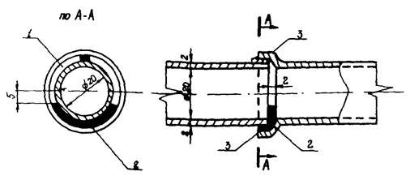
Рис. 2.1. Устройство фильтрующего стыка в дренажных
керамических трубах
1
- фильтрующее отверстие; 2 - цементная заливка; 3 - монтажный
клин
Отверстия целесообразно располагать в
шахматном порядке в боковых частях труб так, чтобы все они находились ниже
уровня воды в трубе (см. рис. 2.2).
2.26. Расчет дренажных труб на прочность выполняется
с учетом наличия в их стенках водоприемных отверстий (перфорации).
Чугунные и железобетонные дренажные трубы
при глубине заложения менее 10 м допускается на прочность не рассчитывать.
2.27. Фильтрующие обсыпки дренажных труб
могут иметь трапецеидальную, ромбическую и другие более сложные формы (рис. 2.3, а,
б, в). В случае слоистого строения дренируемого водоносного
пласта второму слою фильтрующей обсыпки придают одну или две шторы,
преграждающие движение грунтового потока над трубчатым дренажем и
транспортирующие дренажную воду в последний (см. рис.2.3, в).
2.28. В качестве материала фильтрующих
обсыпок следует применять отмытый песок и гравий или песчано-гравийные смеси, а
также продукты дробления изверженных или прочных осадочных пород с удельным
весом не менее 20 кН/м3 (2 тс/м3) или временным
сопротивлением сжатию не менее 60 МПа. Гранулометрический состав
песчано-гравийной обсыпки, число слоев и их толщину следует подбирать исходя из
требований СНиП
2.06.14-85. Пригодность материалов (грунтов), используемых для фильтрующих
обсыпок, должна обосновываться расчетом (см. рекомендуемое приложение 7).
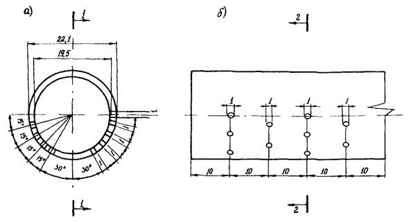
Рис. 2.2. Расположение отверстий в дренажной
асбестоцементной трубе
а - поперечный разрез; б - продольный разрез
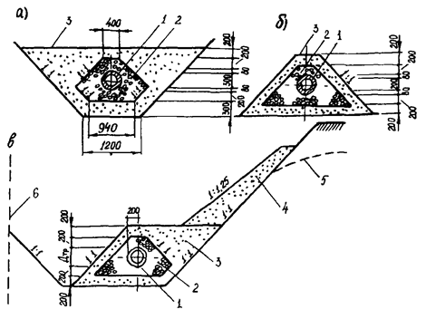
Рис. 2.3. Поперечные сечения фильтрующих обсыпок
а -
в выемке; б - на открытом пространстве; в - со шторой; 1 -
дренажная труба; 2 - фильтрующая обсыпка из щебня; 3 - фильтрующая
обсыпка из песка; 4 - откосная штора из местного фильтрующего грунта; 5
- депрессионная кривая уровня подземного потока; 6 - контур защищаемого
сооружения
2.29. На трубчатых дренажах сооружают
смотровые и перепадные колодцы, сбросные коллекторы с устьевыми устройствами и
дренажные насосные станции.
2.30. Смотровые колодцы на дренажной сети
служат для контроля за работой дренажа и ее периодической чистки. Смотровые
колодцы располагаются в местах присоединения труб, в местах изменения
направления, уклона и диаметра труб, а также на прямолинейных участках через 50
м. Колодцы принимают по типовому проекту 503-0-43,
Минтрансстрой, Союздорпроект, 1981. При небольших расходах дренажных вод (до 30
л/с) перепадные колодцы устраивают в обычных типовых канализационных колодцах.
При этом в колодцах предусматривается отстойная камера для гашения энергии
падающей воды и отстоя иловых частиц. Глубина отстойника должна быть 0,5 - 1,0
м.
2.31. Для предотвращения промерзания
водоотводной трубы, исключения ее подпора наледным льдом на выпуске дренажа
предусматриваются теплоизоляция самой трубы, использование нагревательных
установок (электронагревательные кабели, провода, теплоподводящие трубы), а
также сифонных водовыпусков.
Работа нагревательных установок может
производиться в постоянном режиме или периодически для создания и увеличения
сечения канала в наледном льду перед выпуском дренажа.
Сифонный водовыпуск, состоящий из
накопительного колодца (емкости) и напорного коллектора увеличенного диаметра
до 1,0 - 1,2 м, позволяет отводить воду из дренажной системы с периодически
увеличенным (в 5 - 10 раз) расходом.
2.32. Для обогрева воды в дренажном
коллекторе можно рекомендовать, как вариант, тепловой спутник в виде трубок
малого диаметра с пропуском по ним горячей воды или пара. При проектировании
закрытых трубчатых дренажей для отвода наледных вод от зданий отводящий
коллектор следует укладывать совместно с теплосетью.
2.33. Пластовые,
пристенные (застенные) дренажи устраиваются рядом с фундаментами с наружной
стороны сооружений (здания или обделки тоннеля) или в их основании при
размещении сооружений на водоупорных грунтах, а также в случаях слоистого
строения водоносного пласта.
Конструктивные формы пластовых дренажей отличаются
большим разнообразием, что зависит от характера защищаемых сооружений, глубины
котлованов и типа дренируемых грунтов.
Пластовые дренажи предназначены для
перехвата грунтовых вод, поступающих снизу, и защиты от них подвалов. В случае
залегания под полами подвалов водоупорных грунтов обычно ограничиваются
устройством одного пристенного дренажа, а защита от капиллярного увлажнения
подвалов достигается устройством гидроизоляции.
При больших площадях и глубинах
защищаемых сооружений (тоннели) трубы пластовых дрен за контуры сооружений
целесообразно не выносить, что значительно уменьшает глубину смотровых колодцев
и упрощает эксплуатацию дренажной системы. Подготовленное основание под
пластовый дренаж должно иметь уклон не менее 0,005 в сторону трубчатых дрен.
При ширине осушаемого сооружения до 12 м допускается горизонтальная планировка
дна котлована.
Пластовые дренажи выполняются из
одного-двух слоев хорошо фильтрующего материала, отсыпаемого ниже подошвы
дренируемого сооружения (фундамента, пола, подвала и т.п.) и системы отводящих
дрен, обеспечивающих отвод воды. Толщину фильтрующего (дренажного) слоя
пластового дренажа следует принимать равной 30 - 50 см.
Для дренажного слоя рекомендуется
применять фильтрующие грунты, удовлетворяющие следующим требованиям:
коэффициент фильтрации должен быть больше
5 м/сут и превышать коэффициент фильтрации дренируемого грунта не менее чем в
10 раз;
для мелкозернистых песков основания в
дренажный слой можно уложить среднезернистый песок, а для среднезернистых
песков - крупнозернистый.
В пылеватых тонкозернистых песках
рекомендуется устройство двухслойного дренажного слоя. Второй слой отсыпается
из гравия или щебня крупностью от 3 до 25 мм.
Для того, чтобы дренажный слой не
заиливался, над и под ним необходимо укладывать геотекстиль или над дренажным
слоем - несколько слоев рубероида или дополнительный слой толщиной 10 см из
песка.
2.34. Пристенные дренажи на слоистых
основаниях обычно применяют в комбинации с пластовыми дренажами; дрена
пристенного дренажа в этом случае служит в качестве дрены-собирателя,
собирающей и отводящей воду из пластового дренажа. Пласт может быть соединен с
пристенным дренажом трубами, пересекающими сплошные фундаменты, или
непосредственно фильтрующими обсыпками в случае устройства отдельных
фундаментов под колонны.
Конструктивно пристенные дренажи
выполняют аналогично трубчатым дренажам. Требования к материалам те же, что и
для трубчатых дренажей.
2.35. При небольшом расходе дренируемых
подземных наледных вод в условиях близкого залегания скальных пород
рекомендуется применять беструбный дренаж в виде дренажно-водоотводного канала,
устраиваемого буровзрывным способом. Размер (сечение) зон рыхления скальных
пород при устройстве дренажа следует определять расчетом (рекомендуемое приложение
8).
2.36. Для защиты от
наледей выемок, размещаемых в скальных водоносных породах, при заложении
подошвы откосов ниже уровня грунтовых вод, целесообразно применять вертикальный
дренаж. Вертикальный дренаж может быть осуществлен посредством буровых скважин,
используемых с целью понижения уровня грунтовых вод для:
спуска грунтовой воды в водоемкие породы, залегающие
ниже водонепроницаемых вечномерзлых или скальных пород;
откачки грунтовой воды насосными установками с
последующим отводом ее по наземным водоотводным устройствам;
устройства водоаккумулирующих емкостей, образуемых
взрывным способом в толще породы, залегающей ниже водоупорной поверхности, и
последующей периодической откачки воды.
2.37. Размеры водоаккумулирующей емкости
для устройства вертикального дренажа следует определять расчетом (рекомендуемое
приложение 9).
2.38. Во избежание кальматажа
дренажно-водоотводных устройств (лотков, дренажей, фильтрующих насыпей и
обсыпок различного назначения) наряду с дренирующим материалом следует
использовать в качестве обратного фильтра геотекстиль, волокнистые, тканые и
нетканые материалы, например, дорнит (ТУ 21-29-81-81), отвечающие требованиям
необходимого срока службы (рис. 2.4).
2.39. Для гидроизоляции пластовых
дренажей (см. п. 2.33) и водонепроницаемых экранов совместно с
глино-цементной смесью целесообразно использовать гидроизоляционную пленку
толщиной не менее 0,2 мм, например, поливинилхлоридную марки В (ГОСТ
16272-79).
2.40. В качестве съемной (укладываемой на
зимний период) и постоянной тепловой изоляции для предупреждения замерзания
воды в горизонтальном трубчатом дренаже целесообразно использовать беспрессовый
полистирольный пенопласт марки ПСБ-50 (ГОСТ 15588-86).
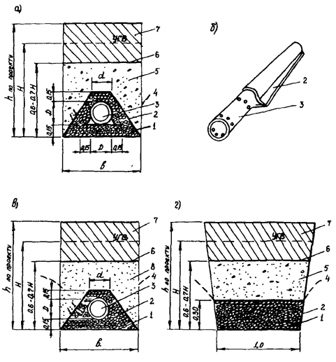
Рис. 2.4. Схемы конструкции дренажа с использованием
нетканого синтетического материала дорнит, предотвращающего заиливание
а, б
- асбоцементной трубы; в - фильтровой обсыпки в дренаже; г -
то же, в дренажной прорези; 1 - щебень или гравий фракции 10 - 20 мм; 2
- дорнит толщиной не менее 4 мм; 3 - асбоцементная труба диаметром d = 100 - 400 мм; 4 - кривая депрессии; 5 -
местный грунт (гравелистый или крупный песок); 6 - полиэтиленовая пленка
или изоляция толщиной 0,5 мм; 7 - утрамбованный глинистый грунт; 8 - мелкие
пески с коэффициентом фильтрации меньше 5 м/сутки
2.41. При локальных источниках грунтовых
вод на косогорных участках могут устраиваться каптаж и поперечные
утепленные перепуски через путь. При рассредоточенных источниках грунтовых вод
их каптаж осуществляют, погружая в откос заглушённые трубы с перфорацией и
обратным фильтром из нетканого материала внутри или снаружи трубы (в
зависимости от способа погружения). Трубы соединяют коллектором, от которого
осуществляют отвод воды. Теплотехнический расчет выпуска выполняют в
соответствии с методикой (см. рекомендуемое приложение 7).
При затруднении в получении данных о
годовом гидравлическом и температурном режимах грунтовых вод необходимо
провести наблюдения в специально оборудованных скважинах в зимний критический
период (с конца января до середины марта).
2.42. Дренаж-каптаж предназначен для
перехвата поверхностных (русловых), подземных и грунтовых вод, питающих наледь,
их отвода в низовую сторону за ограждаемое сооружение.
Дренаж-каптаж состоит из каптажного
приемника, перехватывающего поверхностные (русловые) воды, дренажной части
(крыльев), перехватывающей подземные или грунтовые воды, и коллектора (лотка),
обеспечивающего отвод каптированных вод в низовую сторону. Схема устройства
дренажа-каптажа показана на рис. 2.5.
Гидравлический расчет каптажного
приемника предусматривает определение геометрических размеров его живого
сечения, величины уклона дна, скорости течения воды, водопропускной
способности. Расчет дрен и отводящего лотка из дренажа-каптажа приведен в
рекомендуемом приложении 6.
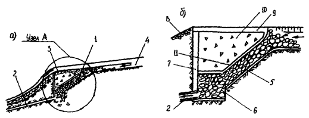
Рис. 2.5. Схема устройства дренажа-каптажа
а - поперечный разрез; б - узел А; 1 -
дренаж-каптаж; 2 - коллектор, отводящий зимний сток; 3 -
подмостовое русло ливневого стока; 4 - русло ключа под зимний сток; 5
- утрамбованной щебень; 6 - каменный заполнитель каптажного приемника; 7
- –глиняный экран; 8 - двойная мостовая; 9 - железобетонная плита
или двойная мостовая; 10 - шлак или торф; 11 - шина из хвороста,
мха или торфа
2.43. Безналедный
пропуск водотоков через путь рекомендуется применять:
на постоянных водотоках и ключах, на
которых в природных условиях наледи не образуются;
на источниках, выходы которых находятся
вблизи трассы;
на объектах, эксплуатация которых в
условиях наледеобразования не допускается (тоннели, переезды, стрелочные
переводы и т.п.);
во всех случаях, когда безналедный
пропуск водотоков осуществить технически проще и экономически выгоднее по
сравнению с другими видами противоналедных мероприятий.
2.44. Безналедный пропуск водотоков
обеспечивается путем:
концентрации и спрямления русел водотоков
при протекании их в полосе отвода дороги, а также в пределах мостов и труб;
устройства обычных и утепленных лотков,
коллекторов и выпусков;
подогрева воды различными установками.
2.45. Необходимая степень концентрации
водотока определяется климатическими условиями района, температурой наружного
воздуха, величиной снежного покрова, а также характеристикой потока - расходом
в осенне-зимний период, температурой воды, уклоном русла.
2.46. Ширина водотока В, при
которой не будет происходить образование наледи, определяется из рассмотрения
теплового баланса водотока и может быть получена по графику (рис. 2.6.).
Для расчета необходимо иметь расход водотока (Q, м3/с), уклон русла (i)
и величину снежного покрова (hcн, см), расчетную
температуру наружного воздуха (-t °C)
(см. рекомендуемое приложение 6).
2.47. К сооружениям, задерживающим наледи
в удалении от дороги и ограждающим ее от вредного воздействия наледей,
относятся: противоналедные валы, противоналедные заборы, мерзлотные и наледные
пояса, водонепроницаемые экраны, фильтрующие валы, бермы из скального грунта.
Их проектируют в комплексе с земляным полотном и водопропускными сооружениями и
возводят в период строительства дороги.
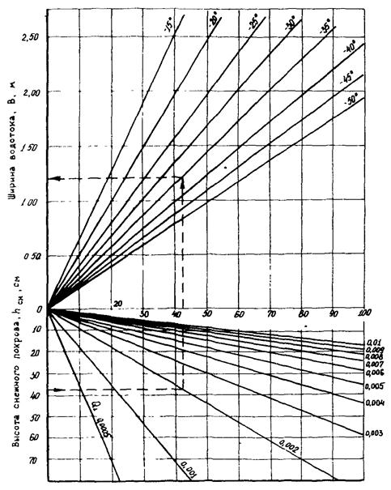
Рис. 2.6. График для определения ширины водотока при
безналедном пропуске (цифры на прямых означают температуру наружного воздуха
(-20°); произведение расхода потока Q и уклона
дна русла i (0,001)
Сооружения, задерживающие наледи, следует
размещать на таком расстоянии от дороги, чтобы исключался непосредственный
контакт земляного полотна с наледным льдом и талыми наледными водами, а также
предотвращалось избыточное увлажнение грунтов насыпей, основной площадки и
откосов выемки.
2.48. Сооружения, задерживающие наледь,
рекомендуется проектировать с таким расчетом, чтобы они активизировали наледный
процесс в заданном месте, вызывали образование наледи и могли обеспечить ее
полное задержание.
В этой связи целесообразно предусматривать
комплекс сооружений, в который необходимо включать: устройства, обеспечивающие
резкое охлаждение водотока - наледные и мерзлотные пояса, спланированный
участок для растекания наледной воды и накопления льда, сооружение,
удерживающее наледь - противоналедный вал или забор (рис. 2.7.).
2.49. Наледный пояс и плоские лотки
представляют собой участок искусственно выполненного плоского уширенного русла,
укрепленный одиночным мощением, бетонными плитами или наброской камня,
повышенной шероховатостью. На участке наледные воды распластываются тонким
слоем (2 - 5 см), интенсивно охлаждаются, создаются условия для возникновения
наледи.
Наледный пояс, как самостоятельное
сооружение, может применяться при осеннем расходе водотока до 20 л/с. При
больших расходах он устраивается в комплексе с удерживающим валом, плоским
лотком, расположенным непосредственно у вала или несколько выше его по течению
водотока, (см. рис 2.7.).
Размеры наледного пояса или плоского
лотка определяются из условия, что после протекания водотока по этому участку
его температура должна быть понижена до 0 °С (см. рекомендуемое приложение 6).
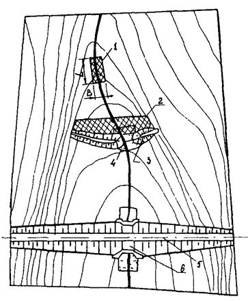
Рис. 2.7. Схема расположения удерживающих
противоналедных сооружений
1
- участок, обеспечивающий резкое нарушение водно-теплового режима и охлаждение
малого водотока (наледный пояс); 2 - площадь растекания наледи перед
удерживающими сооружениями; 3 - удерживающие сооружения; 4 - отмостка
(плоский лоток); 5 - железная дорога; 6 - искусственное
сооружение
Длину (L) наледного пояса можно определить по формуле
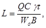
(22)
где Q
- расход водотока в осенне-зимний период
определяется по данным инженерно-геологических наблюдений, м3/сутки
(см. приложение 4), С - удельная теплоемкость воды, кДж/кг×°С, γ - объемная масса воды, кг/м3, t -
температура воды в осенний период, °С, Wо - теплопотери с открытой поверхности, кДж/м2
сутки (см. прил. 10), В - ширина наледного пояса, м.
2.50. Расчетная площадь растекания воды (Fp) перед удерживающим сооружением определяется из
условия, что толщина слоя воды (hв), удерживаемой перед сооружением за рассматриваемый
промежуток времени ожидаемого действия наледи (Т), должна быть меньше или
равной возможной толщине нарастания наледи (hл), определяемой
по формуле
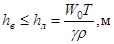
(2.3)
Принимая hл = hв, Fp и Qв можно определить по формулам
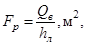
(2.4)
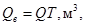
(2.5)
где ρ - скрытая теплота, выделяемая при переходе
воды в лед, принимается 80 ккал/кг (336 кДж/кг), Т - рассматриваемый
промежуток времени ожидаемого действия наледи, сутки, Qв - объем воды, накапливаемый перед удерживающим
сооружением за рассматриваемый промежуток времени ожидаемого действия наледи, м3.
2.51. Прогнозируемый объем наледи (Vн) определяется с учетом расхода водотока в осенне-зимний
период (Q), времени
ожидаемого действия наледи (Т), и наличия снежного покрова
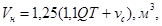
(2.6)
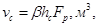
(2.7)
где 1,25 - коэффициент запаса, 1,1 - коэффициент
увеличения объема замерзающей воды, vc - обьем прироста наледи от снега, м3, b - безразмерный коэффициент относительной плотности снежного покрова,
принимается равным 0,25 - 0,3, hc - толщина
снежного покрова, м.
Остальные обозначения те же, что в
формулах (2.2)
- (2.5).
2.52. Размеры удерживающих
противоналедных сооружений определяются по прогнозируемым мощностям и площадям
распространения наледей, с учетом полного ее задержания. Толщина наледи (hн) перед удерживающим
противоналедным сооружением определяется в зависимости от объема наледи и
конфигурации лога, по графикам (рекомендуемое приложение 10).
Высота удерживающего противоналедного
сооружения Нв принимается на 0,5 м больше расчетной толщины
наледи (hн)
2.53 Расстояние между
участком нарушенного русла (1), активизирующим наледный процесс, и
удерживающими сооружениями (3, 4) определяется из условия, чтобы при полной
аккумуляции наледных вод этот участок находился вне основного объема наледи (2)
и постоянно функционировал (см. рис. 2.7). При малых уклонах русла водотока длину
распространения наледи по логу можно принять l = hн/iр (hн - толщина наледи, м; ip - уклон русла, доли
единицы).
2.54. Мерзлотные пояса применяются при неглубоком
залегании грунтовых и, главным образом, надмерзлотных вод, в условиях суровых
бесснежных и малоснежных зим, при уклонах местности менее 0,1.
Мерзлотный пояс представляет устройство,
вызывающее повышенное промерзание толщи грунтов (см. рекомендуемое приложение 5).
При этом на пути движения потока искусственно создается экран, который вызывает
подпор воды и выход (высачивание) ее на дневную поверхность с образованием
наледи в пределах мерзлотного пояса.
Мерзлотный пояс имеет форму траншеи,
закладываемой поперек движения подземного потока, в пределах его
распространения. Расположение и конструкция пояса должны обеспечивать не только
полное задержание наледи, но и отвод вод от таяния снега и льда.
Глубина пояса определяется глубиной
залегания уровня грунтовых, надмерзлотных вод. Ширина пояса по дну принимается
3 - 8 м из условия его устройства механизированным способом. Длина пояса
определяется шириной потока грунтовых, надмерзлотных вод.
2.55. Водонепроницаемые экраны применяют
на пологих склонах с маломощным делювиальным слоем при неглубоком залегании
подземных, надмерзлотных вод и подстилающего их водоупора.
Водонепроницаемые экраны представляют
траншеи, заполненные водонепроницаемым грунтом, железобетонными плитами или
шпунтом. Ширина водонепроницаемого экрана из грунта принимается не менее 1,0 м,
а низ заглубляется в водоупор не менее 0,25 м. При расчетном расходе грунтовых
вод более 1 л/с вертикальный экран может устраиваться в комплексе с
горизонтальным экраном и удерживающим наледь земляным валом или забором (рис 2.8).
Горизонтальный экран представляет плоскую отмостку из бетонных плит или
одиночного каменного мощения по поверхности лога. Этот участок принимает
выходящие на поверхность грунтовые воды и обеспечивает их охлаждение и
замерзание. Размеры горизонтального экрана и противоналедных удерживающих
сооружений определяются расчетом (см. рекомендуемое приложение 10).
Взамен водонепроницаемых экранов при
соответствующем технико-экономическом обосновании при отсутствии вечной
мерзлоты можно предусматривать техническую мелиорацию грунтов сезонно-талого
слоя.
2.56. Временные противоналедные
сооружения и устройства обеспечивают противоналедную защиту в строительный
период в течение 1 - 3 лет, до сдачи в эксплуатацию постоянных противоналедных
сооружений и устройств. К ним относятся временные мерзлотные пояса,
искусственные русла, водоотводные канавы, передвижные ограждения (заборы, щиты,
валы), тепловые пояса, водопонижающие скважины, а также различные временные
устройства из местных материалов (см. рекомендуемое приложение 10).
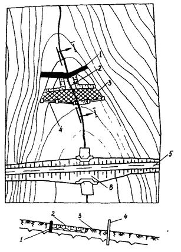
Рис. 2.8. Схема мерзлотно-водонепроницаемого экрана с
удерживающим противоналедным забором
1
- вертикальный водонепроницаемый экран; 2 - горизонтальный экран; 3 -
площадь растекания наледи перед удерживающими сооружениями; 4 -
удерживающие сооружения (железобетонный забор или земляной вал); 5 -
железная дорога; 6 - искусственное сооружение
2.57. Нарезку искусственных или углубленных
русел (канав) выполняют для организации безналедного протекания водотока на
ограждаемом участке. Ширина русла (канавы) по дну (в) определяется расчетом
(см. рекомендуемое приложение 6). Допуская некоторые образования наледи в
особо суровые периоды зимы, можно принимать ширину канавы по дну равной 2в. Глубина
противоналедной канавы должна быть не менее 1,5 и не более 3,0 м. Уклоны
откосов канавы принимают от 1:1 до 1:1,5 в зависимости от состава грунтов
русловой части с учетом устойчивости откосов от размывов расчетным потоком.
Временные противоналедные водоотводы
должны обеспечивать пропуск водотока, с расходом 50 % повторяемости. На
участках углубленного русла должны быть исключены броды для проезда транспорта.
На отмостках подмостовых русел и перед
трубами должны быть запроектированы лотки, обеспечивающие сосредоточенное
протекание водотока в зимний период (см. рекомендуемое приложение 6).
2.58. Временные наледные пояса
целесообразно применять на распластанных водотоках малого дебита (в зимний
период до 2 л/с), временные мерзлотные пояса - на пологих склонах с неглубоким
расположением горизонта грунтовых вод и сезонной толщиной снежного покрова до 0,5
м. Ширина пояса должна быть не менее 3 - 4 м из условия его нарезки бульдозером
и механизированной очистки от снега в осенне-зимний период. Глубина пояса (0,1
- 1,0 м) определяется крутизной склонов, уклоном русла или положением
подземного потока, переводимого в наледь. На участках, покрытых лесом,
необходимо предусматривать расчистку от деревьев и кустарника вверх по склону
на 5 м от оси пояса, вниз по склону на величину предполагаемого отложения
наледи, но не менее 10 м от оси пояса. Мерзлотные пояса должны периодически
очищаться от снега при его толщине свыше 0,1 - 0,15 м. Количество мерзлотных
поясов, как правило, должно быть не более 2. Удаляются мерзлотные пояса от
ограждаемого сооружения на 15 - 60 м и более. Грунтовый вал, формируемый при
необходимости, располагается с верховой стороны при удалении от ограждаемого
сооружения свыше 40 м, и с низовой стороны при более близком расположении. При
строительстве одновременно двух параллельных поясов грунтовые валы
целесообразно размещать согласно рис. 2.9.
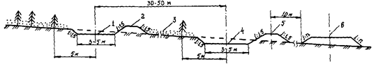
Рис. 2.9. Схема расположения мерзлотных поясов
относительно дороги
1 - верхний мерзлотный пояс; 2 - верхний вал; 3
- снежный покров; 4 - нижний мерзлотный пояс; 5 - нижний вал;
6 - ось дороги
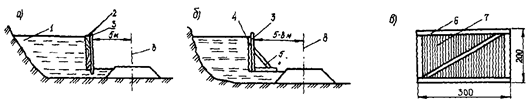
Рис. 2.10. Схема расподобления противоналедных
заборов и щитов
а - шпальный
забор; б - забор из щитов с подкосами; в - схема щита; 1 -
наледь; 2 - шпалы; 3 - стойки; 4 - щит; 5 - подкос;
6 - каркас из досок; 7 - рубероид 2 слоя; 8 - ось дороги
2.59. В выемках и на нулевых местах можно производить
задержание наледи с помощью временных заборов, сооружаемых вдоль пути.
Противоналедные заборы необходимо размещать с учетом габаритов приближения
строений, допуская возможный развал элементов забора в весенний период. При
высоте забора до 1,5 м его можно устраивать из старогодных шпал, уложенных друг
на друга на ребро. В качестве стоек можно использовать вмороженные в лед доски,
горбыль или брус. Забор возводится по мере его заполнения наледью и убирается
при таянии льда. При отсутствии шпал можно воспользоваться деревянными щитами, изготовленными
из обрезных досок или каркасных рамок, обтянутых толем, рубероидом или другим
рулонным материалом. Щиты прикрепляются как с помощью стоек, вмороженных в лед,
так и устройством подкосов. Схемы временных заборов приведены на рис. 2.10.
Длина и высота заборов определяется
размерами наледи, наблюдаемой в предыдущие годы, а при наличии большого ряда
наблюдений принимается по среднему из максимальных значений или согласно
прогнозу.
2.60. При сооружении фундаментов и опор
на водотоках с наледями целесообразно с осени выполнить обваловывание
строящихся объектов местным грунтом на высоту предполагаемой наледи. Если
высота вала окажется недостаточной, то его можно нарастить колотым льдом,
взятым из тела наледи и уложенным в виде вала вокруг сооружения.
2.61. Для защиты водопропускных труб от
наледеобразования, во избежание заполнения их отверстий льдом в районах со
значительной толщиной снежного покрова (hс > 0,5 м) бывает достаточным устройства у отверстий
труб жердевого каркаса, закрытого рогожными мешками, рулонным кровельным
материалом или ветками хвойных пород. При постоянном закрывании отверстий труб
необходимо иметь щиты многоразового использования. Прогревать отверстие трубы можно
паром, приготовленным в передвижном паровом котле «паропушке». Для протаивания
наледи в трубе можно использовать голый провод, подключенный к сети через
сварочный агрегат (трансформатор).
2.62. Вертикальный дренаж посредством
буровых скважин может применяться как временное противоналедное устройство,
обеспечивающее прекращение наледеобразования вследствие искусственного
формирования воронки депрессии-подземных вод при условиях, указанных
в п. 2.36.
Для временного вертикального дренажа могут использоваться эксплуатационные и
разведочно-эксплуатационные скважины на воду, а также специальные скважины. При
необходимости конструкция скважины должна обеспечивать проведение откачки воды
из нее эрлифтной установкой или другими водоподъемными устройствами.
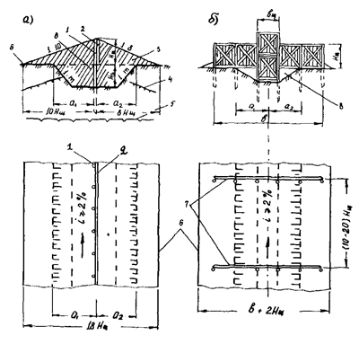
Рис. 2.11. Схема теплового пояса
а
- расположение щитов вдоль оси пояса; б - поперек пояса; 1 -
колья; 2 - щиты; 3 - снежный вал; 4 - глубина сезонного
промерзания; 5 - верхняя граница вечномерзлых грунтов; 6 -
подошва снежного вала, 7 - щитовые линии; 8 - тепловой пояс
2.63. Под тепловым поясом понимают
сооружения, предназначенные для перехвата подземной или грунтовой воды и ее
безналедного отвода от ограждаемого объекта в течение морозного периода.
Тепловой пояс устраивается в виде канавы, утепленной в зимний период снегом или
другими подручными материалами (мох, торф, хворост, хвоя), полимерной пеной или
полиэтиленовой пленкой. Для задержания снега на тепловом поясе используются
щиты из дерева (рис. 2.11). Тепловой пояс целесообразно применять на
наледных участках, расположенных в районах с относительно мягкой зимой и
интенсивным отложением и переносом снега, на которых наблюдается неглубокое
залегание водоупора, сравнительно высокие расходы и температура подземной воды,
а также отсутствие или глубокое расположение вечной мерзлоты.
2.64. Для предупреждения образования
наледей и создания необходимого температурного режима водотока используются
различные электронагревательные устройства: трубчатые электронагреватели
(ТЭНы), линейные нагреватели (греющий кабель, провод, коксоальные нагреватели),
справочное приложение 11.
2.65. ТЭНы используются в смотровых
колодцах дренажей, лотках, а также в тепляках выпусков. Ввиду большой удельной
мощности ТЭНов и высокой температуры нагрева активная часть прибора должна находиться
в воде, в местах с обеспеченным постоянным ее уровнем.
Расчет мощности ТЭНов ведется из условия
поддержания необходимой температуры воды в водопропускных сооружениях и на
выпуске (рекомендуемое приложение 12).
Электрообогрев ТЭНами имеет недостатки:
местный перегрев воды, приводящий к перерасходу энергии, сложность монтажа, а
также недолговечность ТЭНов.
2.66. Линейные нагреватели осуществляют
равномерный нагрев по длине водопропускного сооружения. В качестве линейных
нагревателей используются кабели марок НКМС, ДМЖВ, ЭНГЛВ-180, КМРПВ, а также
провода ПТПЖ, А35-120 и другие (см. справочное приложение 11).
Расчет кабеля заключается в определении
мощности тепловыделения единицы длины кабеля при заданных длине и температуре
токопроводных жил, а также теплопотерях водотока (см. рекомендуемое приложение 12).
2.67. Электрообогрев водоотводов можно
осуществлять неизолированным проводом, подключая его к нагрузке через сварочный
трансформатор. Характеристики трансформаторов, пригодных для электрообогрева,
см. в справочном приложении 11. Расчет
греющего провода заключается в выборе трансформатора необходимой мощности и в
определении тепловыделения единицы длины проводов при заданной его длине (см.
рекомендуемое приложение 12).
2.68. При проектировании противоналедных
сооружений необходимо предусматривать специальные мероприятия по охране
природной среды, включающие технические решения по рекультивации территории и
места строительства, по охране леса и пастбищ, водоемов, водотоков и подземных
вод (рекомендуемое приложение 13). Эти мероприятия должны включаться в
проекты противоналедных сооружений и неуклонно выполниться строителями.
Основными из них являются следующие:
предварительное снятие
почво-растительного слоя в местах заложения канав и траншей, складирование его
и дальнейшее использование при восстановлении участка;
фильтрующие и поглощающие устройства
(канавы, скважины), во избежание загрязнения подземных вод, должны быть
ограждены от поступления бытовых стоков и горюче-смазочных веществ;
каптажно-дренажные и водоотводные
устройства в населенных пунктах и в местах выпаса животных должны быть закрыты
и ограждены так, чтобы исключалась возможность загрязнения воды;
участки применения электронагревательных
устройств должны иметь соответствующие ограждения, а сами устройства -
необходимую изоляцию с тем, чтобы исключить отрицательное воздействие тока на
окружающий животный мир;
по окончании строительства
противоналедных устройств производится рекультивация участка: возможное
восстановление рельефа, засыпка карьеров и траншей, выравнивание отвалов и
укрепление откосов канав, а также русел водотоков, во избежание эрозионной
деятельности последних;
строительный мусор, остатки лесных
порубок и бытовых отходов должны быть убраны или уничтожены.
3.1. Мероприятия, конструкции и
устройства по защите сооружений от наледей должны осуществляться в
предусмотренные проектом сроки.
3.2. Работы по строительству
противоналедных сооружений и устройств необходимо выполнять в соответствии с
проектными решениями, направленными на сохранение температурного режима грунтов
и водотоков. Строительство противоналедных сооружений и устройств производится
с применением современных конструкций, материалов, оборудования, землеройных и
грузоподъемных машин.
3.3. Для успешного использования машин и
оборудования необходимо своевременное строительство временных технологических
дорог и площадок. С целью уменьшения отрицательного воздействия на
температурный и гидрологический режим основания земляного полотна временных
дорог следует отсыпать из дренирующих грунтов на высоту 0,5...1,0 м.
3.4. Разбивочные работы обеспечивают
соответствие размеров и геометрических форм противоналедных сооружений
проектным размерам и формам в течение всего строительного процесса. Разбивку
предусматривается выполнять геодезическими инструментами, а также
приспособлениями типа визирок, угломеров, ватерпасов и шаблонов.
3.5. Для закрепления на местности
элементов профиля противоналедных сооружений и устройств в процессе
производства строительных работ рекомендуется пользоваться:
кольями для обозначения бровок валов,
канав, траншей, лотков, поясов, а также их границ и ширины по дну;
откосниками для обозначения направления
откосов;
вешками для обозначения движения
землеройных и планировочных машин;
вешками-визирками и шпильками-высотниками
для обозначения отметок.
3.6. Все знаки рабочей разбивки
устанавливаются не реже чем через 20 м, а при линейных размерах
противоналедного сооружения менее 20 м - через 5 м. Основные точки разбивки
закрепляются на местности и сохраняются до конца строительства.
3.7. Валка леса, корчевание пней и срезка
кустарника, нарезка канав, рытье траншей, возведение земляных валов,
планировочные и укрепительные работы, предусмотренные для противоналедных
сооружений и устройств, должны выполняться в соответствии с требованиями,
установленными нормативными документами на строительство, в том числе ВСН
186-75 с применением прогрессивных технологий.
3.8. Контроль соответствия продольного
уклона дна дренажной траншеи, дренажной трубы, лотка, а также размеров
сооружений и устройств проектным следует осуществлять нивелированием и с
помощью других геодезических инструментов.
3.9. При строительстве следует соблюдать
правила производства и приемки работ, а также техники безопасности,
установленные СНиП III-38-75,
СНиП
III-4-80*.
3.10. После окончания строительства
противоналедных сооружений и устройств выполняют рекультивацию временно занятых
земель в соответствии с проектными решениями.
3.11. При передаче противоналедных сооружений
и устройств в постоянную эксплуатацию кроме документов, предусмотренных
приказом МПС, сдающая организация обязана предоставить:
- паспорт наледного участка и карточку
противоналедного сооружения (см. обязательное приложение 3);
- акт испытания электрообогревающего
оборудования;
- перечень особых требований по
эксплуатации сооружений и устройств.
3.12. Траншея под дренаж должна сооружаться
в соответствии с календарным планом и технологией строительства. При устройстве
траншеи без крепления крутизна откосов должна определяться глубиной и
состоянием грунтов, но не должна быть круче, чем 1:1. Разработку траншеи
следует производить, как правило, экскаватором, начиная с низовой стороны с
целью выпуска попавших в котлован подземных и поверхностных вод. На период
строительства поверхностные водотоки должны быть отведены от траншеи временными
водоотводами.
При разработке мерзлых грунтов взрывом
глубина и расположение шпуров должны обеспечивать рыхление грунтов на проектную
глубину без повторного разбуривания.
Зачистка и доработка дна траншеи до
проектных отметок производится вручную на глубину не более 0,2 м. В слабых
пылеватых и суглинистых грунтах дно траншеи уплотняется щебнем, втрамбованным в
грунт, слоем 0,1 м.
Разработка траншей в теле насыпи или в
непосредственной близости от нее должна производиться с креплением стенок
согласно проекту. При наличии на месте строительства подземных и других
коммуникаций, работы производятся после письменного разрешения организации,
ответственной за эксплуатацию коммуникаций, а в некоторых случаях в присутствии
их представителя.
3.13. Перед укладкой дренажных и
водоотводных труб траншея должна быть освидетельствована заказчиком и составлен
акт на скрытые работы.
Монтаж дренажных и водоотводных труб
производится краном соответствующей грузоподъемности на спланированное и
уплотненное основание. Отсыпка фильтрующих материалов производится послойно с
заполнением пазух и трамбованием.
Устройство дренажей с помощью
экскаваторов-дреноукладчиков производится согласно технологии, принятой для
конкретной машины. При одновременной работе по отрывке траншеи и укладке
дренажных труб в мокрых котлованах необходимо осуществлять защиту труб от
заиливания взвесями и водоотлив.
3.14. Монтаж смотровых колодцев
выполняется одновременно с укладкой водоотводных труб. Смотровые колодцы должны
выполняться, как правило, из сборных железобетонных элементов.
В некоторых случаях допускается
применение конструкций из монолитного железобетона и дерева.
На пучинистых и просадочных грунтах, а
также оползневых участках необходимо предусмотреть защиту дренажно-водоотводной
системы от смещения труб и перемещения смотровых колодцев.
После засыпки дренажно-водоотводной
траншеи должны быть выполнены работы по планировке грунта над дренажом,
устройство защитных валов, а также рекультивация территории строительства.
Особое внимание следует обратить на условия каптирования поверхностных и
подземных водотоков, а также организованного отвода воды от дренажа.
3.15. Устройства, связанные с обогревом
дренажных выпусков и подогревом воды, должны выполняться одновременно со
строительством дренажа или предусматриваться конструкцией труб и смотровых
колодцев для их последующего оснащения этим оборудованием.
Для сохранения нагревательного
оборудования, а также обеспечения благоприятного температурного режима в
системе все смотровые колодцы и тепляки должны быть закрыты под ключ.
3.16. Перед сдачей сооружения в
постоянную эксплуатацию должны быть выполнены устройства, позволяющие проводить
осмотр, наблюдение за работой и очистку дренажно-водоотводной системы.
При сдаче дренажа в постоянную
эксплуатацию в исполнительной документации должны быть указаны реперы, к
которым осуществлялась привязка сооружения.
3.17. Траншеи под лотки
должны разрабатываться, как правило, экскаватором, оборудованным обратной
лопатой. При послойной разработке мерзлого грунта после его естественного
оттаивании следует предусмотреть отвал разработанного грунта за пределы бровки,
необходимой для повторного прохода экскаватора. Разработку мокрых траншей
производить с низовой стороны. Откосы траншеи должны быть не круче 1:1, а при
устройстве подкюветных лотков должны быть закреплены от обрушения под действием
временной нагрузки.
3.18. Монтаж элементов сборных лотков
производится на спланированную по проектным отметкам поверхность различным
крановым оборудованием. Деревянные лотки могут собираться из элементов вручную.
На пучинистых участках одновременно с монтажом элементов лотка должны быть
выполнены противопучинные мероприятия в соответствии с проектными решениями во
избежание повреждения конструктивных элементов лотка, укладку материала
фильтрующих обсыпок производят послойно с легким трамбованием.
Утепление стенок и крышек лотков
пенопластом должно выполняться в строгом соответствии с принятой технологией
работ с учетом возможного последующего снятия или добавления теплоизолирующих
плит.
3.19. Монтаж электрообогревающего
оборудования производится после окончания монтажа лотка, укрепительных и
теплоизоляционных работ. Установка ТЭНов производится в отстойниках смотровых
колодцев или специально оборудованных приямках с гарантированным уровнем воды.
Все электрооборудование и провода должны соответствовать требованиям
эксплуатации во влажных и обводненных условиях. Монтаж в проектное положение
линейных электронагревателей (кабели, провода) выполняется с надежным
креплением до установки верхней крышки лотка. Кабель должен занимать такое
положение, чтобы очистка лотка от наносов осуществлялась без повреждения его
изоляции. При оборудовании лотка не изолированным греющим проводом необходимо
предусмотреть помещение для трансформатора. Участок обогрева голым проводом
должен быть закрыт для доступа людей и животных. Перед окончательным закрытием
лотка необходимо выполнить испытание электрических сетей и составить
соответствующий акт.
3.20. Места каптирования поверхностных
водотоков, а также отводящие канавы, расположенные за концевыми участками
лотков, должны укрепляться в соответствии с проектными решениями. Чтобы
исключить возможный размыв грунтов при пропуске водотока с максимальным
расходом и вымывание мелких фракций, материал дренажного заполнителя,
укладываемого за стенки дренажных лотков, должен иметь проектный
гранулометрический состав.
3.21. Работы по
спрямлению и углублению русла выполняются с целью концентрации водного потока и
осуществляются в соответствии со СНиП 3.02.01-87. Разбивочные
знаки устанавливаются по берегам русла вне зоны производства работ.
3.22. Спрямление, углубление русла и
устройство искусственных русел следует начинать с низовой стороны с соблюдением
проектных уклонов дна и размеров поперечного сечения. Дно канав шириной ³ 3 м надлежит планировать бульдозером с последующей
погрузкой грунта одноковшовым экскаватором в автомобили-самосвалы и
транспортированием в отвал.
При ширине русла менее 3 м разработку
грунта и планировку дна и откосов русел следует производить одноковшовым
экскаватором со сменным оборудованием, в том числе с планировочным ковшом.
3.23. Откосы русел
должны укрепляться в соответствии с проектными решениями в зависимости от
геологических и гидрологических условий. Машины и механизмы при производстве
укрепительных работ определяются типом креплений. Для укладки сборных
железобетонных плит используют автокраны. Укладка плит осуществляется снизу
вверх с устройством соединений между плитами и заделки швов между ними.
3.24. При строительстве ограждающих
сооружений (мерзлотные и наледные пояса, земляные противоналедные валы,
железобетонные или деревянные заборы) и планировке нарушенного русла работы
выполняются с учетом требований, изложенных в пп. 3.17, 3.21 - 3.23 настоящего раздела.
3.25. При строительстве
комплекса противоналедных сооружений, включая забор, вал, мерзлотный или
наледный пояс в первую очередь выполняются планировочные работы.
Снимается верхний слой грунта в
соответствии с размерами основания земляного вала. Производится срезка
кустарника и мелколесья для создания участка накопления наледи. Выполняется
планировка грунта на участке уширенного русла, нарезается траншея под
мерзлотный или наледный пояс, укрепляются откосы и дно траншеи. Возведение
земляного вала производится после сооружения железобетонного забора, имеющего в
середине разборную часть. Для отсыпки противоналедных земляных валов
используются водонепроницаемые грунты.
3.26. Строительство беструбного дренажа
следует выполнять с соблюдением Единых правил безопасности при взрывных
работах.
В первую очередь выполняются
подготовительные работы: закрепление оси дренажа; подготовка площадки под
дренаж; отвод поверхностных вод; разработка траншеи выпуска, опытные работы по
уточнению размеров зарядов, глубины их расположения и расстояния между
скважинами; укрытие поверхности над взрываемой зоной щитами арочной, коробчатой
формы, предотвращающими разлет кусков породы.
Производство буровзрывных работ включает:
бурение скважин диаметром 100 - 200 мм станками шарошечного или
пневмоударного бурения, начиная с выпуска дренажа на участках длиной не более
100 м; обсадку верхней части ствола скважин стальными трубами; очистку скважин
от воды и бурового шлама; установку основных зарядов, прокладку взрывной сети;
производство камуфлетного взрыва; гидравлическое оттаивание низкотемпературных
вечномерзлых пород путем подачи подогретого водного раствора соли или чистой
подогретой воды в первую скважину каждого участка, извлечение обсадных труб,
бетонирование верхней части стволов скважин на глубину 1,0 м.
Завершающими работами при строительстве
беструбного дренажа являются планировка поверхности с устройством обваловки по
оси дренажа, строительство фильтрующего трубчатого выпуска и водоотводной
канавы.
3.27. При строительстве водопонижающих
скважин все работы выполняются в соответствии с проектом, включая отсыпку и
благоустройство площадки под насосную станцию, передвижную дизельную
электростанцию и устройства постоянного энергоснабжения; бурение водопонижающей
скважины с оборудованием ее обсадными и перфорированными трубами, водоподъемным
устройством, шламоулавливателем; цементация затрубного пространства в верхней
части ствола скважины по всей зоне связных и дресвянистых грунтов;
строительство насосной станции и водоотводящих устройств из водопонижающей
скважины.
4.1. Содержание искусственных и противоналедных сооружений
производится в целях безопасного движения поездов с установленными скоростями,
а также предупреждения повреждений в сооружениях и организации противоналедной
защиты.
4.2. При осмотрах искусственных
сооружений необходимо установить степень опасности наледи, возникшие при этом
деформации сооружений и наметить меры по их устранению.
Порядок осмотров искусственных сооружений
регламентируется инструкцией ЦП 4363. Осмотры искусственных и противоналедных
сооружений на наледных участках должны производиться в соответствии с
настоящими нормами.
4.3. Систематический надзор за состоянием
пути, мостов, труб и противоналедных сооружений должен осуществляться
квалифицированными рабочими, бригадирами пути или дорожными мастерами в период
интенсивного развития наледей. При возникновении угрозы выхода наледи на путь
следует устанавливать круглосуточное дежурство на участке и организовать
срочные работы по борьбе с наледью.
4.4. Текущие осмотры осуществляются
дорожными, мостовыми мастерами и мастерами по ремонту земляного полотна по
утвержденному начальником дистанции пути графику в зависимости от вида
искусственного и противоналедного сооружения и степени опасности наледи.
Целью текущих осмотров является:
установление общего состояния пути, искусственных и противоналедных сооружений,
проведение наблюдений за процессом формирования наледей, определение степени
опасности наледи и назначения противоналедных мероприятий.
Во время текущих осмотров работниками
дистанций пути осуществляется проверка знаний работников, проводящих
систематический надзор и эксплуатацию противоналедных сооружений.
4.5. Сроки текущих осмотров наледных
участков и противоналедных сооружений в период формирования наледи устанавливаются
начальником дистанции пути в зависимости от интенсивности наледного процесса,
но не реже двух раз в месяц - дорожными мастерами, одного раза в месяц -
мостовыми мастерами и мастерами по ремонту земляного полотна.
Регулярные наблюдения за опасными наледями
(снятие отсчетов по ледомерным вешкам, замер дебитов и температур воды, подсчет
площадей и объемов наледей) производят техники дистанции пути под руководством
инженера технического отдела.
4.6. Периодические осмотры опасных
наледей и противоналедных устройств осуществляют начальник дистанции пути или
его заместители с участием мастеров два раза в год, весной (в период
максимального развития наледей) и осенью, перед началом наледообразования.
При весеннем осмотре проверяются: общее
состояние искусственных и противоналедных сооружений, воздействие наледей на
путь, мосты и трубы; эффективность эксплуатируемых противоналедных средств, а
также составляется перечень необходимых ремонтных работ и сроки их выполнения.
Осенним осмотром проверяется: готовность
сооружения к зиме; выполнение ремонтных и капитальных работ; наличие материала
и оборудования для сезонной борьбы с наледями; состояние водоотводов,
обеспечивающих сброс наледных вод в зимний период; готовность бригад к
эксплуатации противоналедных сооружений.
4.7. Контроль за состоянием
противоналедных сооружений в пути осуществляют работники путеобследовательских
станций. Работники мостоиспытательных станций при обследовании мостов и труб,
работающих совместно с противоналедными сооружениями, должны освидетельствовать
также состояние этих сооружений.
4.8. Результаты осмотров и обследований
заносятся в учетные документы. При систематическом надзоре результаты осмотра
записываются в журнале железнодорожного пути и искусственных сооружений.
Результаты текущих осмотров мостовые и дорожные мастера заносят в «Книгу записи
результатов осмотра искусственных сооружений». Данные периодических осмотров
противоналедных сооружений помещаются в «Паспорт наледного участка» и «Карточку
противоналедного сооружения» (см. обязательное приложение 3).
В конце зимнего периода дистанция пути
составляет Ведомость учета наледных участков и представляет ее в отдел
инженерных сооружений службы пути.
4.9. Регулярные наблюдения за ростом наледи
производятся в период ее формирования с целью:
предупредить отрицательные воздействия на
путь и сооружения;
обеспечить пропуск паводковых вод по
наледи;
установить максимальные размеры наледи в
зависимости от физико-климатических факторов и хозяйственной деятельности
человека.
Если наледь не представляет опасности для
транспортных и других сооружений и движения поездов, замер ее параметров
следует производить два раза в месяц. В период опасного наледеобразования
замеры производить еженедельно. При наблюдении за ростом наледи производится
измерение ее толщины у моста или трубы с верховой и низовой стороны. Для
удобства ведения наблюдений на входном и выходном оголовках труб, а также на
устоях мостов необходимо установить ледомерные рейки. При наличии на мостах
водомерных постов наблюдения за ростом наледи можно производить по ним.
Для определения размеров наледи и
мощности льда наледный участок оборудуется сетью ледомерных вешек по руслу
ручья и на поперечниках на расстоянии 50 - 100 м друг от друга. Результаты
наблюдений заносятся в «Паспорт наледного участка» (см. обязательное приложение
3).
4.10.
Эксплуатация искусственных сооружений на наледных участках должна вестись с
минимальными нарушениями естественных условий протекания водотоков. Дорожные
мастера не должны допускать на наледных участках снятие растительно-мохового
покрова, вырубку леса и кустарника, устройства временных дорог и бродов.
Нарушение термоизолирующих покрытий должно устраняться в аварийном порядке.
4.11. На текущее содержание
противоналедных сооружений и борьбу с наледями устанавливаются нормы расхода
рабочей силы, заработной платы и материалов на основные виды работ:
разработка и уборка льда из отверстий
мостов и труб;
разработка и уборка льда с верхнего
строения пути;
разработка и вывозка льда из выемок;
отвод наледных вод по временным лоткам;
содержание и ремонт мерзлотных и наледных
поясов;
эксплуатация противоналедных валов и заборов;
содержание дренажей и утепленных лотков;
содержание комбинированных
противоналедных сооружений;
эксплуатация различных энергетических
установок по подогреву воды и обогреву водопропускных коммуникаций;
эксплуатация насосных установок по
водоотливу наледеобразующих вод;
очистка и углубление водоотводных канав;
установка ледомерных реек и наблюдения за
интенсивностью образования наледи.
4.12. Надзор за дренированием воды на наледеопасном участке
включает осмотр дренажных устройств, водоотводов, наблюдения за положением
уровня грунтовых вод на защищаемой территории.
Осмотр производится ежегодно в осенний и
весенне-летний период. Кроме того, выполняются дополнительные осмотры в зимний
период для определения возможного промерзания и подпора воды в дренажных трубах
образуемой на выпуске наледью.
Наблюдения за положением уровня грунтовых
вод производятся с помощью пьезометрических скважин в те же сроки.
4.13. Надзор за горизонтальными закрытыми
дренажами заключается в систематическом обследовании состояния смотровых
колодцев, выпусков дренажных труб, лотков, в том числе лотков в тоннелях,
измерением температуры и расхода воды в нескольких створах (смотровых колодцах)
на выпуске дренажных труб.
4.14. Работа горизонтальных дренажей
часто нарушается вследствие засорения фильтрующей обсыпки, заиления дренажных
труб, лотков, или же забивки труб, смотровых колодцев, лотков посторонними
предметами, расстыковки или разрушения труб при осадках и просадках грунта при
механических нагрузках, а также при перемерзании дрен, подпоре воды в дренажных
трубах и лотках наледным льдом.
О нарушениях в работе горизонтального
дренажа можно судить по просадкам на поверхности земли, застаиванию воды на
отдельных участках, а в зимний период по массивам наледного льда. Места
нарушения стока могут быть определены по контрольным замерам уровня и расходов
воды в смотровых колодцах, по уровням воды в пьезометрических скважинах. Восстановление
стока обеспечивается перекладкой дренажа с заменой непригодных звеньев, или
удалением наносов промывкой водой или механическим способом (в трубах - ершами,
а в лотках - лопатами и метлами).
Колодцы должны периодически очищаться от
наносов.
4.15. В порядке профилактики прочистку
горизонтальных дренажей рекомендуется производить не реже одного раза в 2 - 3
года, а в первые годы их эксплуатации, когда может иметь место значительное
накопление наносов - не реже одного раза в год.
Не допускается попадание в дренажи
поверхностных и технических вод.
4.16. В случае перемерзания воды на
выпуске или подпора дренажных труб формирующейся наледью через дренажную трубу
на участке перемерзания пропускается греющий кабель или провод с захватом части
отводного лотка или канавы. Режим обогрева (постоянный, периодический)
устанавливается опытным путем с подключением к постоянным или передвижным
источникам электроэнергии. При отсутствии последних обогрев дренажа на участке
выпуска может быть произведен горячим паром, пропущенным по паропроводу,
предварительно уложенному через дренажную трубу с выводом в смотровой колодец.
Контроль за степенью (глубиной) заиления
зоны линейной трещиноватости беструбного дренажа осуществляется посредством
скважин, оборудованных трубчатым каркасом, не затрудняющим доступ
пылевато-глинистых частиц.
Устья смотровых колодцев должны быть
снабжены надежными крышками. В предзимний период смотровые колодцы должны быть
закрыты и утеплены.
4.17. Надзор за вертикальным дренажом
(водопонижающими скважинами) заключается в систематических наблюдениях за
дебитом, уровнями воды в пьезометрах и наблюдательных скважинах.
4.18. Мероприятия, направленные на
ограничение кальматации, подразделяются на защитные, предотвращающие этот
процесс, и восстановительные, позволяющие получить первоначальные или
повышенные дебиты.
В период эксплуатации специализированными
организациями могут проводиться работы по интенсификации отбора воды:
физико-механическим и динамическим воздействием
на водопропускную часть дрен путем прокачки, желонирования, свабироваиия,
гидроразрыва пласта, торпедирования, взрыва детонирующего шнура,
электрогидроудара, имилоции и др.;
химическими методами (реагентная
обработка скважин);
гидродинамическими методами
(вакуумирование, аэрирование, нагнетание воздуха в осушаемый пласт);
электро- и термоосушением;
комбинированными методами (электрогидроудар в среде химических реагентов и
др.).
Вакуумирование наиболее эффективно в
водоносных горизонтах, сложенных мелкозернистыми и глинистыми песками.
Комбинированные методы могут применяться в широком диапазоне фильтрационных
свойств рыхлых и скальных пород.
4.19. В качестве мер по предотвращению
осадкообразования в скважинах рекомендуется:
применение фильтров с антикоррозионной
защитой в виде покрытия на основе полимерных материалов (эмалевые,
органо-силикатные и др.);
периодическое нагнетание воздуха в
специальные скважины для стабилизации и обезжелезивания подземных вод;
обработка скважин гамма-излучением и
введение окисления (тринолино-фосфат натрия);
применение самоочищающихся фильтров,
защитных экранов.
4.20. Погружные насосы водопонижающих
скважин должны быть обеспечены резервным источником питания, в качестве
которого можно предусматривать передвижные электростанции, имеющиеся в
дистанциях пути (дорожных службах). Запускать электродвигатель погружного
насоса рекомендуется не ранее чем через 1,5 ч после его погружения в воду
скважины.
Включение электродвигателя погружного
насоса допускается только через станцию управления. Категорически запрещается
включать электродвигатель непосредственно от электросети.
4.21. При большом количестве
водопонижающих скважин и значительном удалении их друг от друга скважины
оборудуются системами автоматизации, сигнализации и дистанционного управления.
Должно контролироваться автоматическое включение и выключение насосов в
зависимости от уровня воды в скважине по отношению к фиксированному (нижнему) и
аварийному (допускаемому верхнему) уровням. Последний устанавливается по
результатам пробных откачек из условия создания водопонижения ниже поверхности
земли на всем защищаемом участке.
Система автоматизации должна включать:
защиты насосных установок от токов короткого замыкания и перегрузок, от
внезапного отключения электропитания (максимальная и минимальная защита);
защиту от перегрева электродвигателя, подшипников насосов; защиту при
прекращении подачи воды во время нормальной работы электродвигателя.
Система автоматизации должна быть
дополнена средствами сигнализации (световыми, звуковыми). На диспетчерский
пункт, который может быть размещен в здании дистанции пути, выводятся сигналы,
нормальной работы каждого насоса и электродвигателя, их аварийного отключения,
положения уровня, отключения и включения греющего кабеля (в районах вечной мерзлоты).
4.22. Перед наступлением зимы необходимо
произвести ревизию оборудования и особенно системы электроснабжения, чтобы
свести возможность отключения насосов к минимуму. Одновременно устраняются все
подтекания в соединениях трубопроводов и водопроводной арматуры.
Вся водопроводная арматура (задвижки,
обратные клапаны, краны и т.п.), находящаяся вне помещений (будок), а также в
необогреваемых будках, включая сбросный трубопровод, обматываются
теплоизоляционным материалом и размещается в засыпных коробах.
Будки обогреваются постоянно в случае
размещения в них контрольно-измерительной и пусковой электрической аппаратуры и
в них предусматривается постоянное присутствие персонала и временно, если
пребывание персонала связано с ремонтом и техобслуживанием.
Непрерывность откачки воды из
водопонижающей скважины должна соблюдаться обязательно. Длительность
вынужденных остановок не должна превышать 2 ч в сутки.
В случаях вынужденной длительной
остановки откачки воды для предупреждения перемерзания ствола скважины, ее
следует оборудовать греющим кабелем, сблокированным с электронасосом. Во время
работы насоса кабель отключается.
4.23. Ограждающие противоналедные
сооружения препятствуют распространению наледи на дороги и искусственные
сооружения. Эксплуатация этих сооружений должна выполняться качественно и в
установленные сроки согласно настоящим указаниям. Состояние сооружений отражают
в карточке (см. обязательное приложение 3).
4.24. Текущее содержание земляных валов и
заборов предусматривает:
закрытие разъемной части перед началом
формирования наледи;
разбор разъемной части и организация
пропуска паводковых вод в весенний период;
поддержание в исправном состоянии участка
нарушенного русла, очистки его от растительности и снега;
устранение размывов конусов земляных
валов и ремонт мощения в проеме.
Устойчивая работа земляных валов и
заборов обеспечивается содержанием устройств, нарушающих водно-тепловой режим
водотоков и создающих благоприятные условия для формирования наледи. В случае
фильтрации наледных вод в основании вала или через тело насыпи, необходимо
выполнить противофильтрационные устройства в виде экранов.
4.25. Постоянные мерзлотные пояса весной
и летом должны быть защищены от глубокого протаивания. Для замедления таяния
наледи на поясе ее покрывают слоем опилок, шлака, соломы или торфа. При
наступлении морозов мерзлотные пояса освобождаются от теплоизолирующих
покрытий, очищаются от травы и кустарника, а в необходимых случаях
углубляются и закрепляются мощением.
4.26. Щиты ограждения на оголовках
водопропускных труб устанавливаются до наступления устойчивых морозов с целью
сохранения тепла, поступающего из тела насыпи. Для пропуска зимнего расхода в
нижней части щита делается проем, который прикрывается горизонтальным щитом.
Весной щиты убираются и складируются для их многократного использования.
4.27. При эксплуатации комбинированных
противоналедных сооружений очень важно своевременно выполнить переключение с
одного способа защиты на другой. Для этого в установленное время водоотводное
сооружение перекрывается и вода направляется на поверхность для охлаждения и
наледеобразования. В начальный период наледеобразования необходимо обеспечить безналедный
пропуск водотока по лотку, коллектору или дренажному водоотводу. Для этого
производится очистка каптажных и водоприемных сооружений. Утепление поверхности
лотков и смотровых колодцев, а также углубление и очистка канав на выходе.
4.28. Конструкция нагревательных
устройств и правила эксплуатации приводятся в исполнительной документации и
карточке противоналедного сооружения. Правила эксплуатации определяют режим
работы и время включения установок, а также надзор и профилактический ремонт.
Лица, ответственные за эксплуатацию и содержание энергоустановок, утверждаются
приказом начальника дистанции пути.
4.29. Перед включением
электронагревателей необходимо проверить электрические цепи, а также соответствие
водно-температурного режима расчетному. Перед включением ТЭНов следует уточнить
уровень воды в приямке и расход водотока. В процессе работы ТЭНов должны
регулярно контролироваться уровень и температура воды. При автоматическом
режиме работы нагревателей необходимо выполнить регулировку аппаратуры в
соответствии с ожидаемыми теплопотерями. Корпус каждого электронагревателя
необходимо заземлить. Подключение ТЭНов к сети рекомендуется производить через
индивидуальные плавкие вставки. При смене ТЭНов необходимо произвести испытание
электрического сопротивления изоляции.
Перед включением линейных
электронагревателей в сеть (кабели, провода, гибкие нагреватели НГЛВ-180)
необходимо проверить исправность электрических цепей, заземление
распределительных коробок и положение нагревателя. Во избежание перегрева
отдельных участков нагревателя не допускать соприкосновения его частей, а также
сворачивания его в бухту. Теплоизоляция кабеля должна соответствовать
расчетной. При установившемся режиме нагрева необходимо периодически
осуществлять контроль за температурой поверхности кабеля и воды на выходе из
водоотводного сооружения.
4.30. При обогреве голым проводом,
уложенным петлей, необходимо до наледеобразования проверить положение проводов,
исключить возможность замыкания посторонними металлическими предметами или за
счет перехлеста петли. Перед включением трансформатора требуется проверить
сопротивление нагревателя. При включении трансформатора в нагрузку проверить
соответствие напряжения и силы тока расчетным. При токовой нагрузке свыше 90 %
от максимальной следует строго выдерживать режим работы трансформатора,
указанный в паспорте, во избежание его перегорания. В период работы
электронагревателей не допускать к распределительным коробкам, ТЭНам голым
проводам посторонних людей.
4.31. После окончания работы
нагревательных установок производится частичный демонтаж силовой,
распределительной и нагревательной аппаратуры для хранения и ремонта Оставшиеся
узлы и конструкции на весенне-летний период должны быть законсервированы и
закреплены на случай подтопления высокими водами. В «Карточке противоналедного
сооружения» (см. обязательное приложение 3) должна быть сделана запись
о работе нагревательных установок и их состоянии.
4.32. При проектировании временных
противоналедных сооружений необходимо предусматривать расходы на их
восстановление и текущее содержание.
Затраты на возведение противоналедных
заборов, перекрытие отверстий труб, на прокладку греющих кабелей, проводов,
труб для образования каналов во льду предусматриваются ежегодно в полном объеме
до строительства капитальных противоналедных сооружений или других мероприятий
по переустройству объекта (земляное полотно, водопропускное сооружение, здание
и т.п.).
4.33. Эксплуатация мерзлотных поясов
заключается в периодической очистке полосы пояса от снега и планировке
поверхности при ее размывах и просадке. Удаление снега производится при его
накоплении свыше 10 - 15 см. В этой связи в районах со стабильными снегопадами
предусматривается 3 - 4-разовая расчистка снега с мерзлотного пояса.
Снег удаляется бульдозером при поперечной
или продольной ходках с образованием валика из уплотненного снега с верховой стороны.
В предзимний период при необходимости производится планировка поверхности
полосы пояса, убираются упавшие деревья, расчищается и углубляется водоотводная
канава перед мерзлотным поясом.
4.34. Дренажно-водоотводные канавы,
траншеи, льдонакопительные рвы следует осматривать ежегодно и при необходимости
очищать от насосов и сползшего грунта и углублять. В случае эффективной работы
этих сооружений производится их укрепление, например, фильтрующей обсыпкой из
щебня или песчано-гравийной смеси с уплотнением откосов (фильтрующего откоса),
утеплением водотока, укладкой лотка, устройством теплоизоляционного настила.
4.35. Временные лотки, например, из
необрезных досок, необходимо ежегодно очищать от накапливающихся наносов. Если
для исключения попадания грунта в лоток использован геотекстильный материал,
уложенный по внешней стороне лотка, включая крышку, то в летний период для
прогрева просушки лотка достаточно убрать геотекстиль, не трогая крышку лотка.
При необходимости может быть предусмотрен периодический обогрев лотка греющим
кабелем или оголенным проводом с подключением их к передвижным электростанциям,
а также периодический обогрев с помощью газо- и парогенераторов.
4.36. При эксплуатации
разведочно-эксплуатационных водопонижающих скважин по временной схеме
используется эрлифтная установка, которая состоит из водоподъемной и
воздухопроводной труб и смесителя. Снабжение воздухом предусматривается от
компрессора.
Для работы эрлифта смеситель должен быть
опущен в скважину ниже уровня воды на такую глубину, чтобы давление воды в
скважине на уровне смесителя было больше давления, создаваемого столбом
водовоздушной смеси. Нормальная работа эрлифта зависит от правильного выбора
коэффициента погружения и диаметров водоподъемной и воздухопроводной труб*.
При расчете давления воздуха у компрессора следует учитывать потери давления в
воздухопроводе, для чего к расчетной величине давления у смесителя нужно
добавить 0,49∙105 Па.
_______________
* Выбор основных параметров эрлифтов можно
производить по данным табл. 15.1 Справочника
по осушению горных пород / Под ред. И.К. Станченко. - М., Недра, 1984.
На каждой скважине (при их удалении друг
от друга) устанавливаются временный павильон для размещения рабочего и
резервного компрессоров и при необходимости жилое помещение для персонала.
Сброс водовоздушной смеси в водоотводную
канаву осуществляется через промежуточный колодец, при этом сбросной
трубопровод и колодец теплоизолируются.
На каждой скважине должен быть налажен
тщательный контроль с обязательным ведением журнала, где фиксируются режим
работы компрессоров, уровень воды в водопонижающей скважине и пьезометрах,
расход и температура откачиваемой воды на выходе из колодца.
4.37. В период
строительства и временной эксплуатации дорог до окончательной постройки
постоянных противоналедных сооружений и устройств, а также на действующих
дорогах, где такие сооружения и устройства не построены, возникает
необходимость борьбы с наледями и исключения их воздействия на транспортные и
другие сооружения посредством временных мероприятий, сооружений и устройств.
Борьба с наледями с применением местных материалов
целесообразна на участках с наледями малых размеров, а также формирующимися в
опасных размерах в отдельные годы. На железных дорогах одним из наиболее
распространенных материалов, используемых для борьбы с наледями, являются старогодные
шпалы, снятые с пути при капитальном и подъемочном ремонтах.
4.38. При возникновении наледей в выемках
шпалы укладываются в виде временных противоналедных заборов по мере накопления
льда наледи, а весной убираются. Высота заборов без специального крепления
может достигать 1,0 м, а с установлением стоек - 2...3 м. Можно старогодные
шпалы использовать для закрытия отверстий труб на зимний период. Достаточно
эффективны противоналедные лотки из таких шпал, сооружаемые в кюветах и руслах
ручьев, в отверстиях мостов и труб.
4.39. На участках с мощным снежным
покровом для утепления отверстий труб можно использовать ветки хвойных пород,
уложенные на входе и выходе трубы таким образом, чтобы при выпадении снежного
покрова образовались термоизоляционные завесы, препятствующие выхолаживанию
отверстия и образованию наледей.
4.40. Для задержания небольших
преимущественно грунтовых наледей можно сооружать валы из балласта, шлака,
снега или льда. В стесненных условиях выемок, полувыемок и нулевых участков
проезжую часть ограждают плотными жердевыми заборами или переносными щитами. С
закрепленными в лед стойками.
4.41. Для концентрации
наледных источников иногда бывает достаточным спрямить и углубить русло ручья с
устройством глубоких канав, а также отсыпать грунтовые дамбы, ограничивающие
площадь формирования наледей. Чтобы уменьшить теплопотери с открытой
поверхности, водотоки можно закрывать ветками, хворостом, отходами деловой
древесины, а также утеплять опилками и шлаком. Это позволяет на необходимых
участках обеспечить безналедное протекание потока.
4.42. Временные противоналедные
сооружения и устройства, построенные в соответствии с перечисленными выше
рекомендациями (см. пп. 4.37 - 4.41), требуют текущих осмотров,
профилактики их работы, периодических сборок и разборок, установки и
демонтажа, восстановления, ремонта, прочистки, организованного пропуска
наледных и талых вод в весенний период, а также разработки и уборки льда
с транспортных и других сооружений, если работа временных противоналедных
сооружений и устройств оказалась не эффективной.
ОСНОВНЫЕ ТЕРМИНЫ И ИХ ОПРЕДЕЛЕНИЯ
НАЛЕДЬ - слоистый ледяной массив на
поверхности земли, льда или инженерных сооружений, образовавшийся при
замерзании периодически изливающихся подземных или речных вод.
НАЛЕДНЫЙ УЧАСТОК - участок трассы,
земляного полотна (насыпи, выемки) или реки, в пределах которых действуют
природные или вероятно возникновение искусственных наледей (см. рекомендуемое
приложение 2).
НАЛЕДНЫЙ ПРОЦЕСС - комплекс физических
явлений, включающих образование и разрушение наледей, излияние наледеобразующих
вод, их растекание на поверхности намерзания, кристаллизацию, метаморфизм
наледного льда, его тепловое и механическое разрушение, а также подземное
замерзание воды с льдообразованием и поднятием грунтовой поверхности, таяние
этого льда и опускание грунтовой поверхности.
НАЛЕДНЫЙ ЛЕД - лед, формирующийся при
послойном намораживании жидкой воды на твердом (ледяном) основании, имеющий
ярко выраженную слоистость, ориентированную параллельно поверхности аккумуляции
и свидетельствующую о перерывах в процессах намораживания.
НАЛЕДЕОБРАЗУЮЩИЕ ВОДЫ - воды, участвующие
в формировании наледей (речные, озерные, ледниковые, талые снеговые, подземные,
грунтовые (надмерзлотные), техногенные (искусственные).
ТАЛЫЕ, НАЛЕДНЫЕ ВОДЫ - воды, образующиеся
при таянии и разрушении наледного льда и в свою очередь разделяющиеся на
поверхностные, подналедные, внутриналедные.
НАЛЕДНАЯ ПОЛЯНА - участок земной
поверхности, покрываемый ежегодно (периодически) на протяжении многих лет
наледным льдом, выделяющийся угнетенной редкой древесной растительностью, переувлажненной
поверхностью.
ПИТАНИЕ НАЛЕДЕЙ - процесс поступления
наледеобразующих вод к месту их замерзания.
РАСХОД ПИТАНИЯ НАЛЕДИ (ей) - объем вод
водотока или грунтового потока, формирующих наледь в единицу времени (л/с, м3/с).
ПРОТИВОНАЛЕДНЫЕ СООРУЖЕНИЯ - специальные
сооружения, используемые для защиты транспортных и других сооружений от
вредного воздействия наледей и обеспечения нормального эксплуатационного режима
защищаемых объектов на наледных участках.
ПРОТИВОНАЛЕДНЫЕ УСТРОЙСТВА - конструктивные
элементы, приспособления или оборудование транспортных и других сооружений, предназначенные
для повышения эффективности отдельных параметров противоналедной защиты.
ПРОТИВОНАЛЕДНАЯ ЗАЩИТА - осуществленные
проектные решения, направленные на снижение активизации наледных процессов, а
также на исключение влияния наледи на устойчивость и прочность транспортных и
других сооружений.
КЛАССИФИКАЦИЯ НАЛЕДЕЙ
По условиям возникновения различают
наледи:
природные, возникающие и действующие в
естественных условиях;
искусственные, возникающие при
строительстве дорог, зданий, сооружений и прокладке инженерных коммуникаций
(трубопроводов, кабелей и др.) в результате изменения естественного
водно-теплового режима грунтов и водотоков.
По размерам различают наледи: малые - (до
1000), средние - (1000 - 10000); большие - (10000 - 100000, очень большие -
(100000 - 1000000); гигантские - (более 1000000 м3).
По генетическим признакам различают
наледи, образованные поверхностными водами, подземными водами и смешанными
водами, табл. П.2.1.
По положению возникновения и размещения
различают наледи:
русловые, пойменные, террасовые, логовые,
косогорные, откосные.
По степени воздействия на инженерные
сооружения различают наледи:
неопасные, не оказывающие вредного
воздействия на сооружения и движение транспортных средств;
опасные, вызывающие нарушение нормального
состояния сооружений, требующие дополнительных эксплуатационных затрат,
снижающие безопасность движения транспортных средств;
очень опасные, представляющие
непосредственную угрозу нарушения устойчивости сооружений и движению
транспортных средств.
Таблица П.2.1. Генетическая классификация наледей
|
Классы, типы и подтипы
|
Характерные
схемы образования наледей
|
Морфологические
признаки
|
Ледотермический
режим
|
|
1 Наледи
поверхностных вод
1.1 Речные
наледи
|
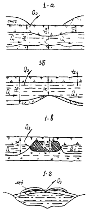
|
Образуются на
малых и средних водотоках. Приурочиваются к русловой части водотока,
изливаясь потоком на поверхность речного льда и пойм. В плане повторяют
очертания русла и дна долин. Поверхность льда ровная или бугристая с
перепадами и буграми вспучивания льда. Лед наледи тонкослойный, чистый, белый
или голубой, с прослойками снега и воздуха.
|
Возникают
обычно сразу же после ледостава на расчищаемых от снега участках при скальном
ложе реки (схема 1-а), на перекатах
(схема 1-б), на отмелях,
распластанных галечниковых руслах, при закупорке русел грунтом, донным льдом
и т.п. (схема 1-в), при увеличении
расходов воды в реке (схема 1-г).
Действуют до полного промерзания водотока. У временных водотоков рост наледи
прекращается к концу первой половины зимы. Наледи постоянных водотоков,
особенно образующихся по схеме 1-б
достигают больших размеров
|
|
1.2 Наледи
талых вод
1.2.1 снеговых
1.2.2
ледниковых
|
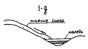
|
Образуются по
склонам, долинам, у сооружений, заполняя отверстия мостов и труб, кюветов и
водоотводные канавы, создавая накопление талых вод у дороги
|
Возникают от
замерзания талых вод снега и ледников в конце зимы и начале весны при
чередовании дневных оттепелей и ночных морозов (схема 1-д)
|
|
1.3 Наледи
открытых водоемов
1.3.1 озер
1.3.2 морей
|
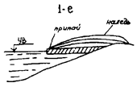
|
Формируются на
подветренной стороне береговой зоны, локализуются на мелководных и
приустьевых участках рек. Поверхность волнообразная, натечная
|
Образуются при
ветровых нагонах в течение всей зимы вследствие выхода морских вод на припай
(схема 1-е)
|
|
2 Наледи
подземных вод
2.1 Наледи
грунтовых вод рыхлой толщи:
|
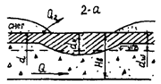
|
Образуются в
выемках, канавах, на перегибах склонов. Приурочиваются к расчищенным от снега
временным дорогам и участкам русел с нарушенным мохо-растительным покровом
(схема 2-а), участкам русел и логов
с резко суженным подрусловым таликом (схема 2-б), участкам русел и логов при стеснении подруслового
потока фундаментом трубы (схема 2-в)
или моста (схема 2-г)
|
Возникают от
излияния и замерзания грунтовой воды при вскрытии или местном перемерзании
верхних водоносных слоев. Наледи этого типа появляются после промерзания
грунта до зеркала грунтовых вод (схемы 2-а
и 2-в); после промерзания поверхностного водотока (схема 2-г); с наступлением устойчивых
отрицательных температур воздуха (схема 2-б)
|
|
2.1.1. с
водоупором из немерзлых пород
|
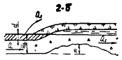
|
|
2.1.2. с
водоупором из вечномерзлых грунтов
|
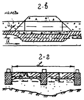
|
Имеют
различные размеры в зависимости от глубины залегания водоупора (Нв),
формы и размеров переката (т), глубины промерзания (d) и состава грунта талика, уклона местности,
конструкции фундамента искусственного сооружения. Лед наледи зернистый, с
включением оледенелого снега, слабо окрашен в цвет грунтов, вмещающих водный
поток
|
Наледи
прекращают свою деятельность в первую половину зимы при (Hв
- dw)
< dм, действуют
всю зиму и достигают значительных размеров при (Hв
- dw)
> dм.
Наледи подтипа
2.1.2. имеют более короткий
период формирования и меньшие размеры по сравнению с наледями подтипа 2.1.1.
|
|
2.2. Наледи
подземных вод глубоких горизонтов
2.2.1.
ненапорных вод
|
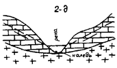
|
Преобладают
удлиненные формы, вытянутые по уклону рельефа, вдоль логов и русел.
Отличаются
большими размерами по площади и мощности льда, особенно, если развиваются за
счет напорных вод. Характерно наличие незамерзающих участков (полыней),
эрозированных наледных полян, крупных наледных бугров
|
Возникают при
излиянии и замерзании воды источников подземных вод. Имеют постоянный режим и
развиваются всю зиму, образуя большие скопления льда. Период их интенсивного
формирования начинается, когда промерзают поверхностные водоносные пути, что
совпадает с наступлением низких температур
|
|
2.2.2.
напорных вод
|
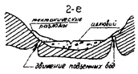
|
Лед чистый,
зеленовато-голубой, слоистый. Летом на наледной поляне наблюдается отложение
солей. Из всех типов наледей наиболее опасные
|
Наледи
напорных вод имеют устойчивый режим и продолжительное развитие, а также
большие и гигантские размеры, особенно наледи, питающиеся источниками,
выходящими по тектоническим разломам. Наледи этого типа иногда бывают
многолетние
|
|
3. Наледи
смешанных вод.
3.1. Наледи
смешанных поверхностных и подземных вод
|
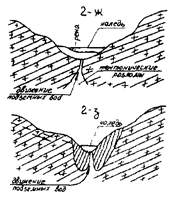
|
Образуются от
излияния и замерзания на одном участке различных типов вод. Обладают
сочетанием форм и признаков, характерных для наледей различных типов.
Характеризуются большими размерами, представляют наибольшую опасность
|
Особенности
режима определяются типами вод, доминирующими в динамике развития
|
УКАЗАНИЯ ПО ОБСЛЕДОВАНИЮ НАЛЕДНЫХ УЧАСТКОВ
Общие требования
3.1. Инженерно-геологические и
топографические работы по обследованию наледных участков выполняют в общем
комплексе проектно-изыскательских работ при линейных изысканиях трасс новых
дорог.
3.2. При изысканиях необходимо
рассматривать наледи как опасное физико-геологическое явление и укладывать
трассу с расчетом на полное исключение или на снижение отрицательного
воздействия наледей на проектируемые сооружения.
Размещение трасс железных дорог следует
производить с учетом следующих особенностей физико-географических условий:
наиболее благоприятными для размещения
трассы являются водораздельные участки, склоны антиклинальных долин, борта
моноклинальных долин с падением слоев пород вглубь склона, верхние части
склонов, сложенных породами с горизонтальным залеганием слоев, южные склоны и
поверхность речных террас, сложенных дренирующими грунтами (рис. П.3.1);
менее благоприятными являются речные
долины с синклинальным залеганием пород и субсеквентные долины, в зонах
тектонических разломов, являющихся путями выхода на поверхность подземных вод,
способствующих образованию больших и гигантских наледей;
неблагоприятными участками являются в
пределах Сибирской платформы зоны контакта водоносных песчано-известковистых
пород с водоупорными аргиллито-мергиллистыми толщами, в Якутии и горных
системах Забайкалья - неотектонические зоны разломов с восходящими источниками
подземных вод;
особо неблагоприятными являются участки с
выходами грунтовых родников (трещино-карстовых, пластовых или связанных с
зонами тектонических нарушений) и склоны северной экспозиции с распространением
вечномерзлых грунтов, имеющих надмерзлотные воды. При трассировании линии
целесообразно рассматривать варианты обхода таких мест с нагорной стороны или
переноса трассы на склоны южной экспозиции.
3.3. Содержание и объем работ по
обследованию наледных участков должны обеспечивать получение данных,
необходимых как для прогнозирования наледного процесса и разработки проектных
мероприятий по предотвращению активизации наледного процесса после
строительства дороги, так и для проектирования противоналедных сооружений и
устройств.
3.4. При инженерном прогнозе наледного
процесса устанавливают качественные и количественные характеристики изменения
во времени параметров природных наледей (см. рекомендуемые приложения 4, 5),
вероятность возникновения искусственных наледей, степень воздействия наледей на
транспортные и другие сооружения, выполняют обоснования проектируемых
противоналедных мероприятий, сооружений и устройств. Инженерный прогноз
осуществляют по данным обследования наледных участков на стадиях ТЭО (ТЭР),
проект и рабочая документация.
3.5. На каждой стадии изысканий ТЭО
(ТЭР), проекта, рабочей документации обследование наледей выполняют в три
периода: подготовительный, полевой, камеральный.
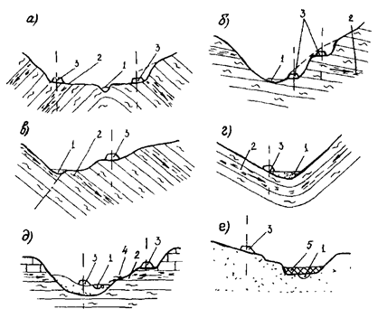
Рис. П.3.1.
Рекомендуемые варианты трассирования дороги (долинным ходом) в наледных районах
полувыемкой на разной высоте склона (а, б, в) и насыпью в
прирусловой части поймы (г, д, е)
а -
по антиклинальной долине; б - по моноклинальной долине; в - по
тектонической долине; г - по синклинальной долине; д - при
горизонтальном положении слоев; е - при развитии наледи в русле реки; 1
- водоток; 2 - направление стока; 3 - рекомендуемое положение
трассы дороги; 4 - источник; 5 - наледь
Задачи подготовительного периода общие
для каждой стадии изысканий. Подготовительный период включает подготовку к
полевым изыскательским работам, изучение опубликованных литературных источников
и фондовых материалов по физико-географическим и инженерно-геологическим
условиям района (климату и геоморфологии, геологии и гидрогеологии, гидрологии
и мерзлотоведению) в объеме, необходимом для составления программы обследования
наледных участков и рационального выполнения полевых работ, обеспечивающих
получение исходных данных для качественного и количественного прогноза наледных
процессов и проектирования противоналедных мероприятий, сооружений и устройств.
В наиболее полном объеме сбор и изучение опубликованных источников и фондовых
материалов выполняется на стадии ТЭО (ТЭР). На последующих стадиях эти данные
уточняются и дополняются на основе анализа материалов предыдущих изысканий.
3.6. Содержание, объемы и детальность
полевых работ на каждой стадии изысканий различны и определяются целями этих
изысканий. Общими и обязательными для каждой стадии изысканий являются
аэрофотосъемка по вариантам или выбранному варианту трассы, выполняющиеся сразу
после схода снежного покрова (весенний период), а также наземное маршрутное
обследование.
3.7. Инженерно-геологические обследования
должны включать изучение общих физико-геологических условий наледных участков,
ледового и термического режимов поверхностных водотоков, источников и
водоносных слоев подземных вод, попадающих в зону воздействия железнодорожного
строительства.
Изучение ледотермического режима
водотоков должно охватывать, как минимум, осенний и зимний периоды одного
сезона.
Обследование для стадии разработки ТЭО (ТЭР)
3.8. На стадии ТЭО (ТЭР) обследования
должны обеспечить изучение природных условий района в пределах размещения всех
намеченных конкурентоспособных вариантов трасс, получение необходимых
материалов для обоснования и принятия принципиальных противоналедных
мероприятий и определения расчетной стоимости по противоналедной защите
транспортных и других сооружений по намеченным вариантам трасс.
3.9. Наличие, местоположение природных
наледей и наледеопасных мест в пределах зоны варьирования плана трассы
устанавливают по данным:
сбора анализа материалов изысканий
прошлых лет, выполненных ранее в районе проектирования дороги, а также изучения
фондовых и литературных источников;
космической съемки, выполненной в
масштабе 1:125000, позволяющей по многоразовым снимкам местности выявить
природные наледи и наледеопасные места, особенно в труднодоступных районах
страны;
аэрофотосъемки, выполненной в масштабе
1:10000 в весенний период после схода снега и до начала интенсивного таяния
наледей;
рекогносцировочных обследований и при
необходимости визуального (аэровизуального) осмотра вариантов плана трассы в
весений период максимального проявления наледных процессов, при которых
фиксируются все наледи по классификационным признакам (см. рекомендуемое
приложение 2)
и уточняются их границы.
3.10. Размеры наледей можно определить по
результатам многозональной и тепловой аэрофотосъемки, выполненной в период до
интенсивного таяния наледей в масштабе от 1:24000 до 1:70000 с последующим
преобразованием в масштаб 1:5000.
3.11. По данным обследования и на основе
качественного прогноза составляют ведомость природных наледей и наледеопасных
мест, выполняют оценку зоны варьирования плана трассы и вариантов трассы по
условиям наледной опасности, назначают принципиальные технические решения по
противоналедной защите транспортных и других сооружений. Данные обследования,
выполненного для стадии разработки ТЭО (ТЭР), дополняются, уточняются и
используются на последующих стадиях проектирования для разработки проектных
решений.
Обследование для разработки проекта
3.12. На стадии разработки проекта при
обследовании необходимо получить материал для прогноза степени опасности
природных, а также искусственных наледей, возникающих в результате изменения
водно-теплового режима грунтов и водотоков при строительстве земляного полотна
(низкие насыпи, выемки, нулевые места), искусственных сооружений (малые мосты,
водопропускные трубы), зданий при прокладке подземных коммуникаций и т.д.,
определения оптимального положения плана трассы, разработки противоналедных
мероприятий, сооружений и устройств и их технико-экономического обоснования.
3.13. Полевые работы начинают с
аэровизуального облета района трассы (на вертолете или самолете), проведения
аэрофотосъемки по вариантам трассы в конце весны, после схода снежного покрова,
когда наледи хорошо видны.
3.14. Инженерно-геологическая съемка в
масштабе 1:25000 - 1:10000 выполняется по трассе полосой 300 - 500 м и
дополняется маршрутной гидрогеологической съемкой по всем пересекаемым трассам
поверхностным водотокам и источникам на расстоянии от трассы вверх по водотоку
- на 600 - 700 м или до «головки» источника, вниз - на 300 - 400 м, при общей
протяженности маршрута около 1000 м.
3.15. По данным аэровизуального
обследования, гидрогеологической и комплексной инженерно-геологической съемок,
составляются карта и кадастр водотоков, источников и наледей, которые являются
одним из основных документов для прогноза наледей.
3.16. Маршрутные обследования на наледных
участках выполняются: с наступлением холодов и появлением кромки льда у
водотоков, когда малые водотоки при отсутствии ледового и снежного отепляющего
покрова претерпевают максимальное охлаждение; в середине зимы, когда
окончательно формируются и заканчивают развитие наледи временных поверхностных
водотоков и надмерзлотных вод, в конце зимы - в период максимального развития
всех наледных процессов, до появления весенней воды от таяния снега. Третье
обследование выполняют только на участках, в пределах которых наледный процесс
не завершился ко времени проведения второго обследования.
Во время маршрутных обследований
выполняют снегомерную съемку, замеры температуры, уровня и расходов воды в
специально оборудованных скважинах и на наледных источниках, описание характера
наледеобразования, зарисовку и фотографирования наледей, а также характерных
наледных водотоков и мест пересечений их трассой. Результаты маршрутных
обследований уточняются и дополняются при повторных осмотрах наледных участков.
3.17. В летний и осенний периоды
выполняется максимальный объем работ (площадная съемка, разведочные,
геофизические, инженерно-геологические, гидрологические и другие обследования).
В зимний период и весной до начала таяния наледного поля проводят маршрутные
обследования на участках с природными наледями и на переходах постоянных
водотоков, в пределах которых вероятно возникновение искусственных наледей. При
маршрутном обследовании выполняют топогеодезические работы по разовой съемке
наледи, а также разовые наблюдения и замеры, необходимые для определения
изменения водно-теплового режима водотоков.
3.18. При обследовании поверхностных
водотоков выявляют область и источники питания, а также их влияние на
гидрологический режим водотоков, выполняют:
описание морфологии русла водотока,
поймы, долины, растительности, заболоченности, промер глубины водотока на
переходе его трассой и в характерных местах (перекатах, плесах),
инструментальное определение уклона русла на участке перехода - на 500 м вверх
и вниз от трассы; вычерчивание поперечных и продольных профилей;
определение дебита источника, расхода
поверхностного водотока на переходе, выше и ниже источников, питающих водоток,
в верхнем и нижнем конце наледи, выше и ниже водопропускного сооружения, если
наледь образовалась у существующей дороги;
установление литологического состава и
водоносности горных пород, слагающих дно и берега водотока, их изменчивости по
водотоку, наличия галечникового фильтрующего аллювия и подруслового потока,
определение дебита последнего по данным геологоразведочных работ по трассе и
коэффициенту фильтрации аллювия, вычисленному по механическому составу
аллювиальных образований;
замеры температуры воды с точностью до
0,1 °С в водотоке, от места пересечения его трассой вверх по течению через 100
- 200 м на расстоянии до 1 км или до источников питания, составление
продольного (по водотоку) графика температур, отбор проб поверхностных вод на
химический анализ;
наблюдение за состоянием ледового
покрова, внутриводным и донным льдом, возникновением и развитием наледей;
описание и зарисовку, фотографирование наледей и очагов их возникновения,
водотока в характерных участках и на участках трассы;
определение мощности снежного покрова по
руслу, склонам, на открытом месте, в лесу;
определение температуры воздуха в период
наблюдений.
3.19. При изучении и описании подземных
вод устанавливаются:
географическое положение мест наблюдения
(источника, колодца, скважины, шурфа), которые нумеруются и наносятся на карту
соответствующим условным знаком; относительная высота мест наблюдения над
меженным уровнем ближайшего водотока или водоема, дном балки, оврага, болота,
абсолютная высота места наблюдения, которая определяется нивелировкой,
экспозиция склона для мест наблюдений, расположенных на склоне или у его
подножия;
возраст, литологический состав, название,
степень выветрелости, трещинноватости и условия залегания породы, из которой
поступает вода, питающая наледь;
характер выхода подземных вод из пород -
восходящий или нисходящий, коренной или дериватный, концентрированный или
рассеянный пластовый, форма и размеры родниковой воронки; дебит источника, определенный
мерным сосудом, водосливом, переносной водосливной рамкой, пробной откачкой;
физические свойства воды (температура,
вкус, запах, цвет, прозрачность, взвешенный материал). Температура воды
замеряется в головке источника и ниже по течению водотока, до пересечения его
трассой или до впадения его в основной водоток, который пересекается трассой,
одновременно замеряется температура воздуха;
химический состав (отбираются пробы воды
в объемах, указанных в табл. П.3.1). Если в месте выхода источника
наблюдается налет в виде твердого осадка, выпавшего из воды источника,
необходимо взять для химического анализа пробу этого осадка (100 - 200 г).
3.20. При обследовании природных наледей
должны быть получены следующие данные:
топографическая привязка наледи к трассе,
вид наледи по месту отложения льда (описание элемента рельефа, его экспозиции,
растительности), форма наледи (округлая, эллиптическая, однопластная,
многопластная, в виде сосулек, сталагмитов, каскадов), направление роста
наледи, генетический тип наледи по физико-геологическим условиям с
соответствующей характеристикой;
мощность льда (средняя, максимальная);
площадь, занимаемая наледным льдом (длина, ширина) со схематической зарисовкой
и фотоснимками вдоль и поперек наледи; объем наледного льда. Определение
площади и мощности льда можно выполнить по вешкам или по данным бурения,
шурфования. Если наледь заливает участок леса, то зимой на деревьях делают
пометки, а летом по ним замеряют мощность льда. О толщине льда можно судить
летом по следам, оставшимся на деревьях (налету солей на коре, механическим
повреждениям);
характеристики структуры и текстуры льда,
цвета, включений, поверхности наледи, бугров пучения, перепадов и впадин,
воздушных полостей, трещин разрыва, их формы, размера, ориентировки, времени и
последовательности образования; данные о трещинах: водоносные или сухие; полые
или забитые снегом; при наличии взрыва бугра пучения - размеры глыб льда,
расстояние, на которое они были отброшены, и направления, в которых произошло
их перемещение; описание и зарисовка бугров наледного пучения в деятельном
слое, разрез и строение бугра, состав грунта и характер льда, генезис бугра;
характеристики водоисточника, питающего
наледь, незамерзающих или поздно замерзающих участков рек (полыней, через
которые может изливаться вода) и источников глубинных напорных подземных вод,
сведения о наличии подруслового потока, его характеристики, температура воды
источников и наледной воды; расход воды, питающей наледь (выше и ниже наледи);
химический состав и степень агрессивности
воды, питающей наледь;
геологические, гидрогеологические и
мерзлотные условия в местах формирования наледи, с выделением факторов, определяющих
тип наледи;
данные об отрицательном воздействии
наледи на имеющиеся дорожные и другие сооружения.
При повторных осмотрах природных наледей,
в соответствующие пункты журнала наледей, а также чертежи и рисунки вносятся
дополнительные сведения, касающиеся изменившихся размеров наледей, бугров,
трещин и т.д.
Таблица П.3.1. Ориентировочные объемы проб воды для
химических анализов
|
Анализ
|
Требуемое
количество воды, л
|
|
Воды
повышенной минерализации (сухой остаток больше 1000 - 1500 мг/л)
|
Пресные
воды
|
|
сухой
остаток от 500 до 1500 мг/л
|
сухой
остаток меньше 500 мг/л
|
|
Полный
|
1,0
|
1,5
|
2,0
|
|
Сокращенный
|
0,5
|
1,0
|
1,5
|
|
Полевой
|
0,5
|
0,5
|
0,5
|
3.21. По природным наледям дается прогноз об их
возможном отрицательном воздействии на проектируемые сооружения и намечаются
соответствующие проектные мероприятия, предупреждающие или исключающие это
воздействие.
3.22. Инженерно-геологическое
обследование наледных участков сопровождается горнобуровыми и опытными
работами, включая:
изучение мерзлотно-геологического разреза
с определением характеристик и параметров мерзлых толщ, изучение взаимного
расположения, взаимосвязи и стратиграфической принадлежности мерзлых пород и
подземных вод;
изучение условий залегания и мощности
литологических горизонтов инженерно-геологических свойств горных пород,
опробование водоносных горизонтов и геолого-генетических комплексов пород;
производство режимных мерзлотных и
гидрогеологических наблюдений в специально оборудованных скважинах,
установление типа подземных вод, их режима, определение водообильности
водоносных зон и горизонтов;
определение физических свойств и
химического состава природных вод. Пробы воды надлежит брать в характерных
местах, с которыми непосредственно связано возникновение и развитие крупных
наледей. Полевые анализы воды рекомендуется выполнять с помощью полевой
гидрохимической лаборатории для общего анализа воды (ПЛАВ) системы А.А.
Резникова.
3.23. Геофизические методы
(электрометрические, радиоволновые, сейсмические, термометрические, комплексный
каротаж скважин) применяются при обследовании наледей для определения площади
распространения талых и вечномерзлых горных пород, мощности деятельного слоя и
толщи вечномерзлых пород, направления движения и выявления мест выходов
восходящих подземных вод (трещинно-жильных, карстовых и др.) в пределах русла
рек и под четвертичными отложениями.
3.24. По результатам полевого
обследования наледных участков представляется отчет, включающий:
общие физико-геологические условия
района, краткое описание климата и гидрологии, геоморфологии и геологического
строения, гидрогеологических и мерзлотных условий, изложенных в составе и
объеме, достаточном для обоснования типов наледей, прогнозирования наледного
процесса, обоснования последующих работ по его изучению и рекомендуемых
противоналедных мероприятий;
описание основных наледных объектов и их
оценка по степени опасности;
прогнозирование наледного процесса с
учетом изменения природных условий в результате постройки дороги и описание
участков с прогнозируемыми опасными наледями;
рекомендуемые противоналедные мероприятия
по предотвращению образования опасных искусственных наледей и отрицательного
воздействия природных наледей, в том числе посредством активного изменения
ледотермического режима водотоков. Приводятся результаты соответствующих
теплотехнических расчетов, обосновывается возможность безналедного пропуска
водотоков методом обеспечения им оптимального теплового зимнего режима, путем
сосредоточения потока, отвода воды по углубленным канавам и пропуска потока
через путь по специальным лоткам (открытым, утепленным), а также принятием
соответствующих типов водопропускных сооружений. По водотокам, имеющим
отрицательный ледотермический режим, намечаются и обосновываются мероприятия и
сооружения по отложению и удержанию наледного льда в местах, где наледи не
будут опасны для устойчивости транспортных и других сооружений и эксплуатации
дороги.
В графической части отчета приводятся:
обзорная карта проявления наледей М 1:50000 - 1:100000, инженерно-геологические
карты наледных и наледеопасных участков М 1:2000 - 1:5000, топопланы наледных
участков М 1:1000 - 1:5000, паспорта наледных участков, включающие инженерно-геологические
продольные и поперечные разрезы, графики замеров температуры воды, таблицы
расчетных характеристик грунтов, результаты химического анализа воды,
геоэлектрические разрезы, результаты опытных
работ (графики откачек, наливов).
Обследование под рабочую документацию
3.25. Под рабочую документацию проводятся
изыскания, включающие детальное инженерно-геологическое обследование наледных
участков с целью уточнения условий возникновения и развития наледей, степени их
опасности для транспортных и других сооружений, получения и использования
конкретных исходных данных при разработке чертежей и технико-экономическом
обосновании противоналедных сооружений и устройств.
3.26. Состав и объем работ определяются
типом и размерами наледи, степенью и формой ее отрицательного воздействия на
транспортные и другие сооружения, а также видом противоналедного мероприятия,
намечаемого на стадии проекта. Работы по обследованию наледей должны охватывать
не менее одного годового цикла.
3.27. В полевой период выполняют обследование
природных наледей, поверхностных водотоков, подземных вод, наблюдение за полным
циклом возникновения и разрушения природных наледей, получают в соответствии с
программой исследований материалы, необходимые для проектирования
противоналедных сооружений и устройств.
3.28. Для всех типов наледей выполняется
комплексная инженерно-геологическая съемка в масштабе 1:1000 - 1:2000, в
зависимости от сложности объекта и размера наледи.
Съемкой должны быть охвачены: место
расположения наледи, выходы источников подземных вод, питающих наледь, площади
распространения водоносных слоев (при назначении в качестве противоналедного
сооружения дренажа или каптажа) и очаги возникновения наледей поверхностных
вод.
В процессе съемки обследуются и наносятся
на топографическую карту места выходов источников на дневную поверхность, русло
водотока, участки намечаемого заложения противоналедных сооружений, контуры
наледи, в том числе на пересечении с трассой. В этих местах целесообразно
сгустить точки наблюдения за счет рассредоточения их на других участках
обследуемой площади.
3.29. Наблюдения за ледотермическим
режимом наледей и наледных водотоков выполняются ежемесячно или в периоды
возникновения наледей (октябрь - ноябрь), их интенсивного роста (январь -
февраль) и максимального развития (март - апрель). Они включают: определение
расхода и температуры воды в характерных местах; описание мест и формы
возникновения и развития наледи, изменения ее размера, очертания, степени
воздействия на сооружения и другие особенности, характеризующие режим и
динамику наледи и изменение степени ее опасного воздействия на транспортные и
другие сооружения.
3.30. В процессе проведения комплексной
инженерно-геологической и мерзлотной съемок основной вариант противоналедного
мероприятия и сооружения согласовывается с ведущим проектировщиком, при этом
уточняются тип сооружения, его местоположение и другие особенности,
определяющие состав и объем разведочных и топографических работ, необходимых
для составления рабочей документации. Это позволит избежать лишние полевые
работы и получить качественные исходные материалы для проектирования.
3.31. Разведочные работы (буровые,
геофизические) назначаются с учетом использования имеющихся данных, полученных
при выполнении инженерно-геологической съемки по объекту и при обследовании
трассы на стадии проекта. В связи с этим разведочные работы ограничиваются
объемами, необходимыми для выявления или уточнения инженерно-геологических
условий под проектируемое сооружение, для гидрогеологических работ и
температурных наблюдений, а также для отбора проб воды и грунта.
При наличии альтернативных вариантов
противоналедных сооружений на сложных в инженерно-геологическом и
гидрогеологическом отношении участках обследования должны выполняться под
каждый из конкурирующих вариантов.
3.32. При заложении разведочных скважин и
шурфов отбираются образцы грунтов для определения физнко-механических свойств и
расчетных характеристик, необходимых при проектировании противоналедных
сооружений, в том числе для противоналедного вала отбираются образцы на
определение несущей способности грунтов основания, для дренажных и каптажных
устройств - фильтрационной способности водоносного слоя и т.п.
Количество и объем отбираемых образцов
грунтов определяются их целевым назначением и общепринятыми требованиями.
Пробы воды отбираются из всех водоносных
слоев и поверхностных водотоков, образующих наледи, в объеме, указанном в табл.
П.3.1.
3.33. Опытные работы (откачки, наливы)
выполняются для определения гидрогеологических характеристик водоносного
горизонта при изысканиях под различные типы дренажных и каптажных сооружений на
наледях подземных вод (трещинных, трещинно-жильных, пластовых и
пластово-поровых), за исключением наледей надмерзлотных вод. Виды,
продолжительность и объемы опытных работ устанавливаются в зависимости от типа
проектируемого сооружения, степени сложности гидрогеологических условий
участка. Наиболее продолжительные откачки, в том числе кустовые, ведутся при
проектировании водопонижающих скважин. По данным опытных работ производится
расчет депрессионной воронки, определяется конструкция и режим работы
водопонижающей скважины.
3.34. Топографические работы включают
плановую и высотную съемки наледей и их элементов (бугров, трещин и т.п.),
привязку источников, нивелировку русла водотока, привязку выработок,
дополнительную съемку местности, а также составление профилей по оси дренажных
и водоотводных устройств, по поперечникам ледомерных вешек.
3.35. Границы топографической съемки
определяются размерами наледи, сложностью рельефа, местом размещения и
конструктивными особенностями проектируемого противоналедного сооружения.
Топографической съемкой необходимо схватить площадь, занимаемую наледью, места
размещения проектируемых противоналедных сооружений и все выходы источников
подземных вод, питающих наледь.
При проектировании в качестве
противоналедных мероприятий регуляции русла водотока (путем его спрямления,
сосредоточения, углубления) или наледных поясов, устраиваемых по руслу водотока
на значительном расстоянии от дороги, съемка должна включать русло водотока на
расстоянии от оси дороги не менее 500 м вверх и 100 м вниз по течению водотока.
3.36. Масштаб топографической съемки и
составляемых на ее основе планов рекомендуется назначать преимущественно 1:1000
- 1:2000, а на участках заложения дренажей и каптажей, наледных и мерзлотных
поясов - 1:500. При этом ось дренажных и каптажных устройств и канав следует
отбивать на месте и сдавать строителям.
При удалении выходов источников подземных
вод, питающих наледи, на расстояние более 1 км от оси пути и при очень больших
по paзмеру наледях масштаб съемки может быть уменьшен до
1:2000 и 1:5000.
3.37. На топографические планы должны
быть нанесены контуры и мощность наледного льда, ледяные бугры пучения, крупные
трещины по льду, все источники выходов подземных вод, характер растительности,
временные и постоянные дороги, переезды и пересечения, канавы во льду и отвалы
льда, устраиваемые службой пути для пропуска наледных вод.
3.38. При топографической съемке и
инженерно-геологическом описании наледного участка выявляются все деформации
земляного полотна и водопропускных сооружений существующих дорог, возникающие
под воздействием наледей.
3.39. По результатам
выполненных исследований в камеральный период составляется
инженерно-геологическое заключение по каждой наледи и прогнозируемому наледному
участку, включая обоснование рекомендуемых противоналедных сооружений и
устройств и данные для их расчета и разработки рабочих чертежей:
характеристику инженерно-геологических,
мерзлотных, гидрогеологических условий, обоснование степени опасности наледи
для проектируемого сооружения, прогноз развития наледного процесса после
строительства;
топографический план наледного участка М
1:500 - 1:2000, продольные профили по оси намечаемых противоналедных
сооружений, поперечные профили;
инженерно-геологическую карту наледных
участков М 1:1000 - 1:5000;
колонки инженерно-геологических скважин,
геологические, мерзлотные и геоэлектрические разрезы;
результаты режимных наблюдений в виде
таблиц или графиков;
результаты опытных работ в виде графиков;
теплотехнические, гидрологические и
гидрогеологические расчеты, обосновывающие конструктивные параметры сооружений.
Обследование наледей в период строительства и
эксплуатации железной дороги
3.40. Для проектирования постоянных
противоналедных сооружений на участках развития искусственных наледей
планируются и выполняются дополнительные полевые работы в период строительства
с целью:
оценки достоверности прогноза наледной
опасности;
продолжения режимных наблюдений за
динамикой мерзлотных и гидрогеологических условий для оценки влияния на них
техногенного воздействия при строительстве;
контроля за работой противоналедных
сооружений и устройств и определения эффективности их работы;
корректировки проектных решений при
недостаточно эффективной работе противоналедных сооружений и устройств.
3.41. Обследование наледных участков в
период строительства и временной эксплуатации выполняется в случаях появления
опасных техногенных наледей на участках, не выявленных в процессе изысканий;
резкого усиления наледной опасности в связи с непредвиденным изменением внешних
(климатических) факторов и водно-теплового режима грунтов и водотоков,
неудовлетворительной работы противоналедных сооружений и устройств или
необходимости дополнительных противоналедных мероприятий, необходимости оценки
влияния на динамику мерзлотных и гидрогеологических условий техногенной
нагрузки, вызванной строительством и эксплуатацией дороги, определения
реального срока службы противоналедных сооружений и устройств и затрат на их
эксплуатацию, внесения изменений в конструкции противоналедных сооружений и
устройств на основании опыта их эксплуатации, разработка новых, более
прогрессивных и эффективных способов борьбы с наледями, повышающих
долговечность, надежность и эффективность противоналедных сооружений.
3.42. Обследование наледных участков и
построенных противоналедных сооружений включает:
ежегодное маршрутное обследование в
зимнее время;
режимные наблюдения за динамикой подземных
вод в оборудованных в период изысканий точках наблюдений, скважинах, шарфах,
гидростворах, лотках;
оборудование для контроля за работой
противоналедных сооружений термо- и пьезометрических скважин на наиболее
типичных участках;
периодический осмотр противоналедных
сооружений и устройств, как в зимнее, так и в летнее время;
выполнение комплекса изыскательских работ
на опасных наледях, появившихся после строительства дороги.
3.43. Маршрутные обследования проводят в
те же сроки, что и обследования на стадиях проекта к рабочей документации на
всех наледных участках, в том числе на участках с построенными противоналедными
сооружениями. В процессе маршрутного обследования фиксируют состояние
противоналедных сооружений и земляного полотна, их деформации или нарушения в
работе, выявляют причины этих нарушений, выполняют замеры температуры и расхода
воды на выпусках и в смотровых колодцах горизонтальных дренажных и каптажных
сооружений, дебита и динамического уровня в эксплуатируемых водопонижающих
скважинах, температурные замеры и замеры уровня воды в специально оборудованных
наблюдательных скважинах.
Данные наблюдений заносят в журналы
авторского надзора, журнал наледного объекта, паспорт наледного участка,
карточку противоналедного сооружения.
Зимнее маршрутное обследование и контроль
за работой противоналедных сооружений и устройств выполняются комиссионно,
совместно с представителями заказчика, подрядчика (строительной организации) и
службы пути.
3.44. Режимные наблюдения за динамикой
мерзлотных, гидрогеологических условий и ледотермическим режимом водотоков и
наледей проводят в зимнее время в процессе маршрутного обследования, в летнее
время - по мере необходимости. Режимные наблюдения могут выполнять служба
эксплуатации или служба мониторинга дороги.
3.45. Оборудование дополнительных термо-
и пьезотермических скважин для наблюдения за работой противоналедных сооружений
и устройств выполняют на участках, где подобные скважины были ликвидированы в
процессе строительства. Их назначение, количество, глубина зависят от типа,
размеров противоналедного сооружения, а также сложности
инженерно-геологических, мерзлотных и пдрогеологических условий участка и
согласовывается с заказчиком, строительной организацией или службой
эксплуатации.
3.46. Периодический осмотр противоналедных
сооружений и устройств ежемесячно в зимнее время выполняет служба эксплуатации
дороги, проектная организация - во время зимнего маршрутного обследования
(авторского надзора). В летнее время после схода снежного покрова и таяния льда
служба эксплуатации дороги выполняет осмотр противоналедных сооружений и
устройств для определения объемов ремонтных работ и подготовки сооружений к
очередному сезону. При сильных деформациях противоналедных сооружений летний
осмотр выполняется совместно с представителями проектно-изыскательской
организации.
3.47. Изыскательские работы на выявленных
после строительства дороги водных наледных участках выполняют в соответствии с
требованиями обследования под рабочую документацию (см. пп. 3.25 - 3.39.).
3.48. Оформление материалов
инженерно-геологического обследования выполняют в виде рекомендуемых форм
«Журнала наледного объекта», «Паспорта наледного участка» и «Карточки противоналедного
сооружения (устройства)», которые приведены в настоящем приложении.
ЖУРНАЛ*
инженерно-геологического обследования наледных объектов
|
Линия (дорога)
___________________________________________________________
Участок _________________________________________________________________
Экспедиция _______________________ Партия
________________________________
Производитель работ
______________________________________________________
Начат ____________________________ Окончен
______________________________
Адрес ____________________________________________
Год __________________
СОДЕРЖАНИЕ
|
Номер,
наименование наледного объекта
|
Км
|
Пикет
|
Страница
|
|
|
|
|
|
Наледь № ________________________ Тип
наледи ___________________________________
Местоположение _________________________ км
______________ пк __________________
Проектируемый тип и размеры водопропускного
сооружения _________________________
_______________________________________________________________________________
Краткая характеристика русла водотока (уклон,
извилистость русла, грунты ложа) в объеме, необходимом для определения
коэффициента шероховатости _________________________
_______________________________________________________________________________
_________________________
* Оформляется по форме пикетажной книжки, удобной для работы в поле.
Описание рельефа местности, формы наледи, наледного
льда (структура, текстура, цвет, характер поверхности льда), источника,
водотока, растительности и другие особенности наледного объекта
_______________________________________________________________
________________________________________________________________________________
|
ХАРАКТЕРИСТИКА ОБЪЕКТА
|
Дата
наблюдения
|
Температура
воздуха, °С
|
Мощность
снега, см
|
Размеры
наледи
|
Дебит
водотока л/с
|
Температура
у источника
|
воды,
°С
|
Скорость
водотока, м/с
|
№
фотопленки, кадра
|
Примечания
(дополнительные замеры скopocти, расхода,
температуры водотока и другие данные, хapaктеризующие
наледный обьект)
|
|
длина,
м
|
ширина,
м
|
мощность,
м
|
площадь,
м2
|
объем,
м3
|
у
источника
|
выше
трассы
|
ниже
трассы
|
выше
трассы
|
ниже
трассы
|
|
1
|
2
|
3
|
4
|
5
|
6
|
7
|
8
|
9
|
10
|
11
|
12
|
13
|
14
|
15
|
16
|
17
|
|
|
|
|
|
|
|
|
|
|
|
|
|
|
|
|
|
План-схема наледи (водотока) с привязкой к трассе, с нанесением
поперечников мерных вешек. Поперечные разрезы русла водотока, наледи у
сооружения (трассы и на характерных участках).
МПС
__________________ ж.д.
___________ дистанция пути
ПАСПОРТ НАЛЕДНОГО УЧАСТКА
1. Характеристика участка
|
Привязка
|
Протяженность,
м
|
Рельеф
|
Земляное
полотно
|
Искусственное
сооружение
|
|
км
|
пк
+
пк
+
|
форма
|
уклон
лога, склонов, %
|
вид
(насыпь, выемка)
|
наибольшая
высота или глубина, м
|
вид
(труба, мост)
|
отверстие,
высота в свету, длина, м
|
|
|
|
|
|
|
|
|
|
2. Характеристика наледи
|
Тип
наледи
|
Периодичность
развития (начало, конец)
|
Размеры
|
Источник
наледных вод
|
|
длина,
м
|
ширина,
м
|
мощность,
м
|
площадь,
м2
|
объем,
м3
|
дебит
на начало и конец наледного периода, л/с
|
температура
на начало и конец наледного периода, °С
|
|
средняя
|
максимальная
|
средняя
|
максимальная
|
|
|
|
|
|
|
|
|
|
|
|
3. План наледного участка и
противоналедных сооружений (устройств).
4. Продольный и поперечный профили
участка с геологическими данными.
5. Наблюдения за режимом формирования и отрицательные
воздействия наледи
|
Дата
|
Описание
режима формирования наледи и ее воздействия на сооружения
|
Выводы
|
Наблюдатель
|
|
|
|
|
6. Осмотры и оценка работы противоналедных сооружений
(устройств)
|
Дата
|
Вид,
состояние и эффективность работы противоналедных сооружений (утройств)
|
Предложения
и рекомендации
|
Подпись
|
Отметка
о выполнении рекомендаций
|
|
|
|
|
|
МПС
__________________________ ж.д.
_________________________ дистанция пути
КАРТОЧКА № ____________________
противоналедного сооружения (устройства)
|
Линия ____________________ км
________________________ пк __________________
Название водотока
________________________________________________________
Искусственное сооружение __________________________
отверстие ______________
Высота в свету __________________________ м
Высота насыпи до подошвы рельса по профилю
_______________________________ м
Вид противоналедного сооружения (устройства)
_______________________________
Год постройки _________________________ размеры
__________________________
Схема противоналедного сооружения (устройства) с
указанием основных размеров и привязки к оси трассы
_____________________________________________________
Порядок эксплуатации сооружения (устройства)
Состояние сооружения (устройства),
работоспособность, ремонтные и противоналедные работы
Карточку составил
«_____» ____________ 19 г. Мостовой
мастер ________________
Проверил
«____»
_____________ 19 г. Начальник дистанции ______________
|
ОПРЕДЕЛЕНИЕ РАСЧЕТНЫХ ХАРАКТЕРИСТИК ЗИМНЕГО СТОКА
НАЛЕДЕОБРАЗУЮЩИХ ВОДОТОКОВ. РАСЧЕТ И ПРОГНОЗ НАЛЕДЕЙ
Расчет зимнего стока
4.1. Характеристики зимнего стока
наледеобразующих водотоков необходимы для расчета наледей при проектировании
противоналедных сооружений и устройств разных типов. Под действием природных
факторов сток рек зимой существенно изменяется год от года в течение зимнего
сезона, вследствие чего его определение основано на использовании методов
математической статистики и теории вероятностей, позволяющих вычислять средние
многолетние расходы заданной вероятности превышения (обеспеченности) в
многолетнем цикле. Ниже приведены расчеты тока наледеобразующих водотоков для
наиболее вероятной ситуации - при наличии данных непродолжительных и
эпизодических гидрометрических наблюдений, полученных в период предпроектных
изысканий.
4.2. Используются следующие
характеристики зимнего стока наледеобразующих водотоков: 1) даты начала и
окончания зимнего периода и периода перемерзания водотока; 2) продолжительность
зимнего периода Т1, равная суммe
продолжительностей периодов со стоком в реке Т и его отсутствия
(перемерзания реки) Тп. При Тп = 0
продолжительность Та = Т. Продолжительность
зимнего периода исчисляется от даты установления устойчивого ледостава на реке
до даты резкого увеличения стока весной, вызванного притоком талых снеговых
вод; 3) средний расход за зимний период - конкретного года - Qзl, то же, но за многолетний период (норма) -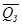
, значение среднего зимнего
расхода обеспеченностью р - QЗp. Средний зимний расход воды равен частному от деления
объема стока за зимний период на продолжительность последего ТЗ
вне зависимости от того, перемерзает река в расчетном створе или нет; 4)
ежегодная повторяемость (вероятность) перемерзания реки Рп
при Рп = 1,0 - река перемерзает ежегодно, при Рп
< 1,0 - периодически, при Рп = 0 - не перемерзает.
Расчет зимнего стока при наличии и недостаточности
данных многолетних гидрометрических наблюдений
4.3. Наличие данных многолетних
гидрометрических наблюдений соответствует исходным рядам длиной 20 лет и более,
а их недостаточность - от 6 до 19 лет.
При наличии данных многолетних
гидрометрических наблюдений расчетам предшествует исследование статистической
структуры временных рядов, включающее анализ их репрезентативности,
однородности, стационарности по известным в статистике критериям (Стьюдента,
Фишера, Колмогорова-Смирнова и пр.). Это позволяет оценить качество исходных
данных.
При недостаточности данных
гидрометрических наблюдений производится приведение параметров кривых
обеспеченности зимнего стока наледеобразующих водотоков к многолетнему периоду
по данным многолетних наблюдений на реках-аналогах с помощью парной или
множественной линейной регрессии.
4.4. Технология гидрологических расчетов
при наличии и недостаточности гидрометрических наблюдений изложены в СНиП
2.01.14-831 и «Пособии»2.
__________________
1 СНиП 2.01.14-83
«Определение расчетных гидрологических характеристик» (издание официальное) -
М., Стройиздат, 1985 - 36 с.
2 Пособие по определению расчетных гидрологических
характеристик Л., Гидрометеоиздат, 1984 -448 с.
Расчет зимнего стока при наличии данных кратковременных
и эпизодических гидрометрических наблюдений
4.5. Кратковременными считаются
наблюдения, проведенные в течение от 1 до 5 лет, а эпизодическими - в течение
одного сезона, вплоть до единичных измерений расходов воды в каком-либо году.
4.6. Расчет нормы зимнего стока основан
на использовании метода многократных соотношений (МС) - соотношений между
расчетной (нормой) 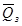
и исходной характеристиками Qt). Их соотношения в виде корреляционной связи 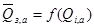
устанавливаются по данным
наблюдений на реках-аналогах (индекс «а») с длинными рядами, расположенных в
районе со сравнительно однородными природными условиями формирования зимнего
стока. В таких районах указанные соотношения изменяются в сравнительно
небольшом диапазоне. Для примера на рис. П.4.1 приведена карта с
ориентировочными границами таких районов в зоне БАМ. В качестве исходных данных
целесообразно использовать материалы о стоке в предледоставный период
продолжительностью от 1 до 30 суток или единичные измерения расходов воды,
полученные в процессе предпроектных изысканий. Использование исходных данных о
зимнем стоке дает худшие результаты из-за большой дискретности этой
характеристики по территории.
Технология расчета следующая. На дату
измерения расхода воды в расчетном створе в предледоставный период из
материалов наблюдений на реках-аналогах выбираются среднесуточные расходы воды Qi,а и
среднемноголетние значения 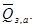
На двухосной логарифмической клетчатке
строится корреляционная связь 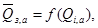
которая и является расчетной.
Аналогичные графики можно построить и по средним расходам за 10, 15, 20,
30-суточные предледоставные периоды, если проектировщик располагает
соответствующими данными наблюдений в расчетном створе. Однако практика
показывает, что в этом случае выигрыш в точности определения незначительный
по сравнению с использованием единичных измерений расходов воды.
Если гидрометрические наблюдения в
предледоставный период проведены в течение ряда лет, то подобные связи строятся
за каждый год и по ним устанавливается несколько значений Qз. Среднее из 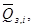
количество которых равно числу лет
наблюдений, принимается за искомый зимний расход воды.
4.7. Метод МС позволяет ие только
рассчитать рассматриваемую характеристику по данным кратковременных и
эпизодических пирометрических наблюдений, но и каждый раз получить оценку
погрешности ее определения 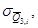
численно
равную среднему квадратическому отклонению всех точек от линии регрессии
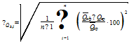
(П.4.1.)
где 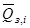
- в %; 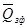
- норма зимнего стока
реки-аналога (фактическое значение), число которых п; 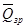
- то
же, но определенное по кривой регрессии при том же значении аргумента, что и .
Если гидрометрические наблюдения в
расчетном створе проведены каждую осень в течение т лет, то пользуясь
рассмотренной методикой, получают т значений среднего многолетнего
расхода воды. Искомое значение равно среднему из расчетных значений, а его
погрешность
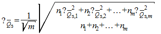
(П.4.2.)
где n1, n2, …, nm -
число рек-аналогов, использованных в
каждом, i-том году. Если 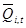
равноточны, т.е. их погрешности
равны, например, 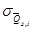
= 40 %, а т = 5,
то формулу (П.4.2.) можно записать проще
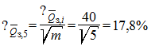
При использовании рассматриваемой
методики два других параметра кривых обеспеченности - коэффициенты вариации и
асимметрии определяются так же, как и при отсутствии данных наблюдений.
Пример 1. Определить средний многолетний (норму) зимний
расход воды р. Тырма у ж.-д. моста. Площадь водосбора F = 8730 км2.
В створе поста 10 октября 1967 г. во время изыскательских работ измерен только
один расход воды Q = 240 м3/с.
По карте на рис. П.4.1. устанавливаем,
что река расположена в VI районе зоны БАМ. По схеме постов гидрологического
ежегодника 1967 г. находим, что на территории VI района
располагается 11 гидрологических постов на реках-аналогах с длительными
периодами наблюдений.
Для расчетов необходимо получить сведения
о суточных расходах воды на 10 октября 1967 г. по всем 11 постам. Здесь
возможны два варианта: 1) расчеты выполняются в том же 1967 г.; 2) расчеты
выполняются спустя несколько лет. В первом варианте за получением данных о
ежедневных расходах воды на 10 октября 1967 г. на реках-аналогах следует
обратиться в Дальневосточное управление Госкомгидромета в г. Хабаровске. Во
втором случае эти данные выписываются из «Гидрологических ежегодников», которые
имеются в любом управлении. Следует иметь в виду, что с 1978 г. вместо
«Гидрологического ежегодника» в составе изданий Государственного водного
кадастра в разделе I «Поверхностные воды» публикуются «Ежегодные данные о
режиме и ресурсах поверхностных вод суши».
В рассматриваемом примере расчет
проводится спустя несколько лет после выполнения полевых изысканий, когда
Гидрологический ежегодник, том 9, вып. 0 - 5 за 1967 г. уже опубликован. Из
таблицы ежедневных расходов воды Ежегодника выписываются расходы воды на 10
октября по всем 11 постам на реках-аналогах. На двухосной логарифмической
клетчатке строится график связи средних многолетних зимних расходов воды (ось
ординат) и суточных расходов воды на 10 октября (ось абсцисс) по рекам-аналогам
(рис. П.4.2.). Проводится осредняющая линия так, чтобы по обе стороны от нее
располагалось бы одинаковое количество точек. Иногда могут иметь место
значительные отклонения отдельных точек от линии регрессии за счет
неравномерности выпадения атмосферных осадков по территории района. В этом
случае осредняющая линия проводится без учета отклонившихся точек, поскольку
такие реки не являются аналогами. По осредняющей линии 1 (см рис. П.4.2.) и измеренному
расходу Q = 240 м3/с снимаем искомый расход 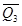
= 7,00 м3/с.
Пример 2. Определить зимний расход обеспеченностью 1 и 5 %
на р. Мама у автодорожного моста, площадь водосбора F = 752 км2.
В течение 1962, 1963 и 1964 гг. осенью проведены гидрометрические работы, в
результате которых измерены следующие средние расходы воды за 10-суточные
предледоставные периоды Q1962 =
10,2, Q1963 =
18,3, Q1964 =
15,4 м3/с.
По карте на рис. П.4.1. устанавливаем,
что река расположена во II районе. По Гидрологическим ежегодникам находим, что
во II районе имеется 19 гидрологических постов на
реках-аналогах, из которых 7 не действовало в 1962 - 67 гг. Следовательно,
можно использовать данные наблюдений по 12 аналогам.
Основываясь на материалах Гидрологических
ежегодников за 1962, 1963 и 1964 гг. по действующим постам на реках-аналогах
вычисляются средние расходы воды за те же 10-суточные периоды, в течение
которых выполнены гидрометрические наблюдения в створе изысканий. За каждый год
строим графики связи 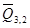
= /(Q10,a).
Пример такой связи за один год приведен на рис. П.4.2. (линия 2). По исходным
10-суточным расходам с графиков связи определяем норму зимнего стока 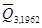
= 1,1, 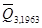
= 1,9, 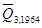
= 1,5
м3/с. Вычисляем средний из трех значений
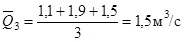
Определяется погрешность вычисленной
величины. Для этого по выражению (П.4.1.) оценивается среднее квадратическое
отклонение точек от линий регрессии на каждом ежегодном графике 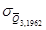
= 24,8 %, 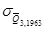
= 54,6 %, = 35,8 %. По
формуле (П.4.2.)
вычисляем искомый результат
По соответствующей формуле из табл. П.4.4.
(см. ниже) для II региона определяется коэффициент вариации
Сv = 0,4∙Г-0,07 = 0,4∙752-0,07 = 0,28
и коэффициент асимметрии
Сs = 4Сv
Из таблицы трехпараметрического
гамма-распределения, приведенной в СНиП 2.01.14-83,
для этих значении Сv и
Cs находим модульные коэффициенты для 1- и 5 %-ной
обеспеченности
К1 % = 1,87 и К5 % = 1,51
Находим искомый результат - зимний сток 1
и 5 % обеспеченности
Расчет зимнего стока при отсутствии данных
гидрометрических наблюдений
4.8. При отсутствии данных
гидрометрических наблюдений в расчетном створе (полевые работы не проведены)
точность расчета зимнего стока рассматриваемыми ниже методами существенно ниже
по сравнению с указанными выше ситуациями наличия исходной информации. Поэтому
такие расчеты могут быть использованы для ориентировочных оценок
преимущественно на стадии разработки технико-экономического обоснования
проектирования противоналедных сооружений и устройств. Ниже рассмотрены методы
расчета зимнего стока наледеобразующих водотоков на примере зоны БАМ.
Технология расчетов следующая:
а) определяется площадь водосбора
водотока I до расчетного створа по топографическим картам,
обеспечивающим ее точность не меньше 5 %;
б) по карте на рис. П.4.1.
устанавливается принадлежность исследуемого водотока к одному из шести районов
зоны БАМа;
в) пo тaбл. П.4.1.
в зависимости от площади водосбора устанавливается возможность перемерзания
реки;
Таблица П.4.1. Предельные площади водосборов перемерзающих
и неперемерзающих рек зоны БАМ, км2
|
Номер района по карте на рис. П.4.1
|
Перемерзающие
реки
|
Неперемерзающие
реки
|
|
ежегодно
|
периодически
|
|
I
|
50
|
50
- 400
|
400
|
|
II
|
50
|
50
- 500
|
500
|
|
III
|
50000
|
50000
- 70000
|
70000
|
|
IV
|
10000
|
10000
- 25000
|
25000
|
|
V
|
500
|
50
- 20000
|
20000
|
|
VI
|
500
|
500
- 4000
|
4000
|
г) по табл. П.4.2. определяется
ежегодная повторяемость перемерзания Рп в зависимости от площади
водосбора и минимального 30-суточного модуля стока 80 % обеспеченности за
период открытого русла. Последний устанавливается по карте (рис. П.4.3) путем
интерполяции между изолиниями для точки, соответствующей центру тяжести
водосбора;
Таблица П.4.2. Площадь водосбора перемерзающих
рек зоны БАМ, км2
|
Частота (вероятность) перемерзания, Рп
|
Минимальный
30-суточный сток 80 %-й обеспеченности, л/с∙км2, в период
открытого русла
|
|
1,0
|
2,0
|
3,0
|
4,0
|
5,0
|
6,0
|
7,0
|
8,0
|
|
1,0
|
1000
|
320
|
160
|
100
|
75
|
60
|
-
|
-
|
|
0,80
- 0,99
|
-
|
700
|
340
|
220
|
160
|
120
|
90
|
70
|
|
0,60
- 0,79
|
-
|
1200
|
600
|
400
|
280
|
200
|
160
|
120
|
|
0,40
- 0,59
|
-
|
2600
|
1100
|
900
|
600
|
460
|
340
|
280
|
|
0,20
- 0,39
|
-
|
6000
|
3000
|
1800
|
1200
|
900
|
700
|
500
|
|
0,19
|
-
|
12000
|
7000
|
4000
|
3000
|
2000
|
1600
|
1200
|
д) по табл. П.4.3. устанавливается
средняя многолетняя продолжительность перемерзания Тп и
даты его начала на реках с ежегодным отсутствием стока в зависимости от
известной водосборной площади бассейна F, определенной по топографической карте или специальным
исследованиям до расчетного створа и принадлежности реки к какому-либо из шести
районов на карте (см. рис. П.4.1). Средняя многолетняя продолжительность
периода с периодическим перемерзанием (Рп < 1,0) равна
произведению найденному по табл. П.4.3. значению на величину Рп,
выраженную в долях единицы и установленную по табл. П.4.2;
е) по расчетной формуле (табл. П.4.4) рассчитывается среднее
многолетнее значение зимнего стока
ж) определяется значение зимнего расхода
воды заданной обеспеченности с использованием коэффициентов
вариации Cv и асимметрии
Cs. Последние
вычисляются по таблице П.4.4 в зависимости от площади водосбора F;
з) вычисляется объем зимнего стока по
формуле
Wз = Qз Тз, (П.4.3)
в котopoй Tз - продолжительность зимнего сезона (устанавливается по
табл. П.4.5).
Таблица П.4.3. Средняя дата начала Днп и
продолжительности периода перемерзания ежегодно перемерзающих рек Тп
зоны БАМ
|
Номер района по карте на рис. П.4.1
|
Характеристика
|
Площадь
водосбора, км2
|
|
50
|
100
|
500
|
1000
|
2000
|
5000
|
10000
|
|
III
|
Днп
|
-
|
2,11
|
13,11
|
19,11
|
24,11
|
2,12
|
11,12
|
|
Тп
|
-
|
185
|
175
|
165
|
158
|
148
|
140
|
|
IV
|
Днп
|
-
|
26,10
|
31,10
|
4,11
|
12,11
|
17,11
|
26,11
|
|
Тп
|
-
|
210
|
182
|
170
|
163
|
151
|
140
|
|
V
|
Днп
|
-
|
15,11
|
25,11
|
5,12
|
20,12
|
10,01
|
2,02
|
|
Тп
|
-
|
170
|
162
|
150
|
130
|
110
|
90
|
|
VI
|
Днп
|
21,11
|
27,11
|
19,12
|
-
|
-
|
-
|
-
|
|
Тп
|
155
|
145
|
130
|
85
|
55
|
15
|
-
|
Таблица П.4.4.
Параметры формул для расчета характеристик зимнего стока по площади водосбора F (км2):
|
№ района по карте на рис. П.4.1
|
Норма
зимнего стока, , м3/с
|
Коэффициент
вариации зимнего стока, Cv
|
Коэффициент
асимметрии зимнего стока, Сs
|
|
а
|
п
|
в
|
m
|
|
I
|
0,08
|
1,10
|
С
= 0,33
|
3 Сv
|
|
II
|
1,23
|
1,15
|
0,4
|
0,07
|
4 Cv
|
|
III
|
0,08
|
1,17
|
3,5
|
0,23
|
2 Сv
|
|
IV
|
0,76
|
1,06
|
32,8
|
0,52
|
2 Сv
|
|
V
|
0,40
|
0,81
|
1,4
|
0,16
|
2 Сv
|
|
VI
|
0,73
|
1,01
|
1,4
|
0,16
|
2 Cv
|
Таблица П.4.5. Временные характеристики зимнего стока рек
зоны БАМ
|
Наименование характеристики
|
Номера
районов
|
|
I
|
II
|
III
|
IV
|
V
|
VI
|
|
Дата начала
устойчивых ледовых явлений
|
средняя
|
15.10
|
17.10
|
7.10
|
8.10
|
20.10
|
25.10
|
|
ранняя
|
7.10
|
9.10
|
27.9
|
28.9
|
4.10
|
15.10
|
|
поздняя
|
1.11
|
28.10
|
18.10
|
19.10
|
25.10
|
3.11
|
|
Дата начала
истощения зимнего стока
|
средняя
|
29.10
|
30.10
|
17.10
|
19.10
|
25.10
|
13.11
|
|
ранняя
|
16.10
|
24.10
|
4.10
|
9.10
|
13.10
|
30.10
|
|
поздняя
|
11.11
|
18.11
|
24.10
|
30.10
|
8.11
|
20.11
|
|
Продолжительность
зимнего стока, Тз, сутки
|
средняя
|
183
|
181
|
186
|
196
|
169
|
157
|
|
наименьшая
|
175
|
170
|
168
|
178
|
147
|
142
|
|
наибольшая
|
192
|
199
|
207
|
219
|
185
|
176
|
Расчет наледей
речных вод
4.9. Наиболее важными расчетными
характеристиками наледей речных вод при выборе и проектировании противоналедных
сооружений и устройств являются вероятность их ежегодного образования на
участке и толщина (мощность). Ниже рассматривается мотодика их расчета на
примере зоны БАМ для участка реки в районе замыкающего створа.
При отсутствии данных наблюдений
перечисленные характеристики определяются следующим образом:
а) вероятность ежегодного образования
наледей на участке определяется по табл. П.4.6 в зависимости от
площади водосбора водотока;
Таблица П.4.6. Вероятность ежегодного образования речных
наледей на участке Р реки в зависимости от площади водосбора
|
F, км2
|
<
50
|
50
- 100
|
100
- 500
|
500
- 1000
|
1000
- 5000
|
5000
- 10000
|
>
10000
|
|
Р
|
0,8
|
0,9
|
0,8
|
0,6
|
0,4
|
0,3
|
0,15
|
б) толщина наледи заданной вероятности превышения
(обеспеченности) рассчитывается по следующим сравнениям в зависимости от принадлежности
участка реки к одному из двух районов, границы которых приведены на карте (рис.
П.4.4):
I район Нр = Кр(0,382Нв
+ 0,594Нк) F-0,122 (П.4.3)
II район Нр = Кр(0,105Нв
+ 1,47Нк) F-0,122 (П.4.4)
где Нв - высота местоположения
участка реки, м абс, Нк - мощность наледи речных вод 5 %-ной
обеспеченности, определенная по карте на рис. П.4.4 путем интерполяции между
изолиниями этой характеристики, см, Кр
- переходный коэффициент толщины наледи речных вод от значения 5 %-ной
обеспеченности к значениям других обеспеченностей (табл. П.4.7).
Таблица П.4.7. Переходные коэффициенты Кр
от значений толщины наледей речных вод 5 %-ной обеспеченности к значениям
других обеспеченностей Р
|
р, %
|
1
|
2
|
4
|
5
|
10
|
20
|
|
Кр
|
1,41
|
1,22
|
1,04
|
1,00
|
0,12
|
0,63
|
Пример 3. Рассчитать толщину наледи речных вод 1 %-ной
обеспеченности на р. Олекма в п. Средняя Олемка. Площадь водосбора 37300 км2,
высота местоположения створа 195 м абс.
На карте на рис. П.4.4 в месте расположения створа
определяем толщину наледи 5 %-ной обеспеченности, приведенную к площади
водосбора 5000 км2 и высоте 600 м над уровнем моря - Н = 104
см. По той же карте определяем, что участок реки в расчетном створе расположен
в районе I. По табл. П.4.7 находим переходный
коэффициент от толщины 5 %-ной обеспеченности к толщине 1 %-ной обеспеченности
- К1 % = 1,41. Расчет искомой характеристики выполняем
по уравнению (П.4.3).
Н1 % =
1,41(0,382 ∙ 495 + 0,594 ∙ 104) )∙37300-0,122 = 98
см.
По табл. П.4.6 находим ежегодную вероятность
образования наледи на этом участке реки - 0,15.
Пример 4. Рассчитать толщину наледи речных вод 10 %-ной
обеспеченности на р. Купа - п. Мука. Площадь водосбора 2220 км2,
высота местоположения участка реки в расчетном створе 344 м абс.
Расчет выполняем в той же
последовательности, что и в примере 3. По карте на рис. П.4.4 для
участка в створе определяем толщину наледи 5 %-ной обеспеченности - Нк
= 43 см, по табл. П.4.7 - K10 % = 0,82.
Определение искомой характеристики выполняем по уравнению (П.4.4).
Н10 % =
0,82(0,105 ∙ 344 +1,47 ∙ 43)∙2220-0,122 = 32 см.
По табл. П.4.6 определяем ежегодную вероятность образования наледи
на участке - 0,4.
Расчет наледей подземных вод
4.10. Наиболее важными расчетными
характеристиками наледей подземных вод являются их объем, средняя и
максимальная мощность в конце зимы заданной вероятности превышения.
4.11. При наличии данных наблюдений о
средней многолетней площади наледей подземных вод F1 их обьем Wр, средняя Нр и максимальная Нmax р
мощность заданной обеспеченности Р рассчитываются по уравнениям:
(П.4.5)
(П.4.6)
(П.4.7)
где - средний многолетний объем наледи в
конце зимы; H - средняя многолетняя мощность наледи определяются с
помощью формул
(П.4.8)
где и в тыс.м3
и тыс.м2.
________________
1 По отдельным районам зоны БАМ площадь наледи может быть
определена по «Каталогу наледей зоны БАМ». Вып. 1. Наледи верхней части
бассейна р. Чары. Вып. 2. Наледи бассейна р. Мун. Вып. 3. Наледи бассейна р.
Верхней Ангары - Л.; Гидрометеоиздат, 1980, 1981, 1982, а также по фондовым
материалам, данным проектных изысканий.
4.12. Коэффициент вариации
объема и
мощности наледей
подземных вод рассчитывается по уравнениям
(П.4.9)
(П.4.10)
Коэффициент асимметрии объема наледей
подземных вод определяется по уравнению
(П.4.11)
Коэффициент асимметрии мощности наледей
постоянный и равен 0,6.
4.13. Модульный коэффициент заданной
обеспеченности Кр назначается по таблице1
отклонений от среднего значения ординат биномиальной кривой в зависимости от
заданной обеспеченности и параметров кривой распределения вероятностей,
вычисленных указанными выше способами.
__________________
1 Таблица приведена в «Пособии по определению расчетных
гидрологических характеристик» (Л.; Гидрометеоиздат, 1984 - 448 с.).
Пример 5. Рассчитать максимальную мощность наледи подземных
вод 2 %-ной обеспеченности на р. Нилан в п. Попутный. По результатам полевых
изысканий ее площадь составляет f = 2,3 тыс. м2.
Расчет выполняется в следующей
последовательности:
а) по уравнению (П.4.8) определяем средний многолетний объем
наледи
б) вычисляем среднюю многолетнюю мощность
наледи
в) по выражению (П.4.10) рассчитываем
коэффициент вариации мощности наледи
г) по таблице нормированных отклонений от
среднего значения ординат биномиальной кривой обеспеченности, приведенной в
«Пособии» определяем К2 % = 1,63;
д) находим искомый результат по уравнению
(П.4.6)
Пример 6. Рассчитать объем наледи подземных вод 5 %-ной
обеспеченности на р. Ангаракан (3 км от устья) в бассейне р. Верхн. Ангары.
Расчет выполняется в следующей
последовательности:
а) по Каталогу наледей зоны БАМ (вып. 3.
Наледи бассейна р. Верхней Ангары. - Л.; Гидрометеоиздат, 1982) определяем
среднюю многолетнюю площадь наледи F = 225 тыс м2;
б) по уравнению (П.4.8) определяем средний
многолетний объем наледи
в) по уравнениям (П.4.9) и (П.4.11)
вычисляем коэффициенты вариации и асимметрии наледи
г) по упомянутой выше таблице в «Пособии» находим К5 % =
1,60;
д) вычисляем искомый результат пo
уравнению (П.4.5)
Прогноз развития наледей подземных вод
4.14. Наледеобразование меняется год от
года, в нем наблюдаются многолетние периоды различной продолжительности с
пониженной и повышенной интенсивностью наледепроявлений. С точки зрения
противоналедной борьбы особенно опасными могут
быть периоды многолетнего цикла с усиленным развитием наледей, когда
отрицательное воздействие последних на инженерные сооружения наибольшие.
4.15. В табл. П.4.8 приведены матрицы
вероятностей перехода годовых значений средней мощности и объема наледей в
заданные диапазоны этих величин. Вся амплитуда многолетней изменчивости
морфометрических характеристик разграничена на пять диапазонов или фаз: I -
характеристика ≤ 59 % нормы, II - 60 - 89° нормы; III -
90 - 109 % нормы, IV - 110 - 139 % нормы, V - 140 % нормы.
Вероятность (частота) перехода из одной фазы в другую представляет частное от
деления числа случаев каждого из пяти альтернативных исходов на общее число
случаев за многолетний период. В матрицах по главной диагонали помещены
значения вероятностей (в долях единицы) перехода фаз развития наледей в самих
себя. Остальные элементы матриц представляют собой значения вероятностей
перехода фаз соответствующей строки в фазы одноименных столбцов. Эти данные
могут быть использованы для вероятностного ежегодного прогноза наледей.
Пример 7. Дать вероятностный прогноз развития в конце зимы
1981 г. средней мощности и объема наледи в бассейне руч. Безымянный, если по
результатам наблюдений в конце зимы 1980 г. эти характеристики были равны
соответственно 1,15 м и 1200 тыс. м3. Средние многолетние значения
их по проектным данным равны 1,53 м и 1500 тыс. м3.
Наледь на руч. Безымянном относится к 1
группе. Вычисляем модульные коэффициенты мощности Н и объема W в
1980 г.
Следовательно, в 1980 г. мощность и объем
наледи находятся во II фазе.
По табл. П.4.8 (матрица а)
определяем с наибольшей вероятностью 0,51, можно утверждать, что в 1981 г
мощность наледи будет находиться во II фазе, а ее значение,
соответствующее этой фазе, будет находиться
в пределах 0,92 - 1,36 м. По табл. П.4.8
(матрица б) аналогичным образом прогнозируем значение объема наледи в
1981 г., наиболее вероятно (Р = 0,600), что объем наледи из II
фазы перейдет в III фазу.
Тогда значение объема будет в пределах 1350 - 1635 тыс. м3.
Пример 8. Требуется спрогнозировать объем Салликитской
наледи в конце зимы 1991 г., если по данным наблюдений в 1990 г. он был равен
250 тыс. м3. Среднемноголетнее значение объема этой наледи по данным
полевых изысканий равно 205 тыс. м3.
Наледь относится ко 2 группе. Определим
модульный коэффициент ее объема в 1990 г.
откуда следует, что объем находится в IV
фазе многолетнего цикла развития.
По табл. П.4.8 (матрица б)
находим, что из IV фазы объем наледи с наибольшей вероятностью 0,50
перейдет в V фазу, т.е. в 1991 г. он будет больше 287 тыс. м3.
4.16. Физический прогноз основан на
использовании гидрометеорологических факторов наледеобразования предшествующего
увлажнения, снежного покрова и суровости зимы. С помощью физического прогноза
целесообразно прогнозировать только объем наледей, поскольку их средняя
мощность и площадь являются производными от объема и зависят, главным образом,
от топографии местности. При прогнозе максимальных объемов наледей в конце зимы
в качестве показателей перечисленных гидрометеорологических факторов
используются сумма атмосферных осадков за май-сентябрь предшествующего года,
высота снежного покрова на дату образования наледи и сумма отрицательных
среднесуточных температур за период наледеобразования по ближайшей
метеорологической станции, если прогнозируется развитие единичной наледи
(объективный прогноз) или по данным группы станций для фонового прогноза
наледеобразования в районе или на участке дороги.
В качестве количественных показателей
ежегодных объемов наледей и перечисленных выше гидрометеорологических факторов используются
безразмерные величины - модульные коэффициенты, представляющие отношения
ежегодных значений этих характеристик к их среднемноголетним значениям.
4.17. Расчет модульных коэффициентов
объема наледей выполняется по следующим уравнениям в зависимости от района:
для центральной и восточной частя зоны
БАМ (Якутия, север Амурской области, Дальний Восток)
(П.4.12)
для Забайкалья
(П.4.13)
для Прибайкалья (бас. р. Купы)
(П.4.14)
для Прибайкалья (бассейн рр. Коршунихи и
Муки)
(П.4.15)
для Прибайкалья (басс.р. Куты):
(П.4.16)
где модульные коэффициенты KW -
объема наледей; - сумма отрицательных
среднесуточных температур за период наледеобразования, K∑c - сумма
атмосферных осадков за май-сентябрь; Kh - высота снега
на дату образования наледи.
Таблица П.4.8. Матрицы
вероятностей перехода фаз развития мощности (а) и объема (б) наледей подземных
вод
1. Наледи объемом более 1 млн. м3 и
мощностью более 1,5 м
а)
|
Фазы
|
I
|
II
|
III
|
IV
|
V
|
|
I
|
0
|
0
|
0
|
0
|
0
|
|
II
|
0
|
0,51
|
0
|
0,490
|
0
|
|
III
|
0
|
0,143
|
0,714
|
0,143
|
0
|
|
IV
|
0
|
1,0
|
0
|
0
|
0
|
|
V
|
0
|
0
|
0
|
1,0
|
0
|
б)
|
Фазы
|
I
|
II
|
III
|
IV
|
V
|
|
I
|
0
|
0
|
0
|
0
|
0
|
|
II
|
0
|
0,200
|
0,600
|
0,200
|
0
|
|
III
|
0
|
0,333
|
0,556
|
0,111
|
0
|
|
IV
|
0
|
0,200
|
0,200
|
0,600
|
0
|
|
V
|
0
|
0
|
0
|
0
|
0
|
2. Наледи
объемом более 1 млн. м3 и мощностью более 1,5 м
а)
|
Фазы
|
I
|
II
|
III
|
IV
|
V
|
|
I
|
0,3
|
0
|
0,34
|
0,36
|
0
|
|
II
|
0,071
|
0,357
|
0,286
|
0,143
|
0,143
|
|
III
|
0
|
0,778
|
0,222
|
0
|
0
|
|
IV
|
0
|
0,454
|
0,273
|
0,273
|
0
|
|
V
|
0
|
0
|
0
|
1,0
|
0
|
б)
|
Фазы
|
I
|
II
|
III
|
IV
|
V
|
|
I
|
0,650
|
0
|
0,050
|
0,100
|
0,200
|
|
II
|
0,625
|
0,250
|
0
|
0
|
0,125
|
|
III
|
0
|
0
|
0
|
1,0
|
0
|
|
IV
|
0,250
|
0,250
|
0
|
0
|
0,500
|
|
V
|
0,583
|
0,250
|
0
|
0
|
0,167
|
Дата окончания формирования
наледи определяется с помощью табл. П.4.9.
Таблица П.4.9. Продолжительность
формирования наледей τ зависимости от их объема Wr
|
W, тыс. м3
|
5
|
10
|
50
|
100
|
500
|
1000
|
5000
|
|
τ, сут.
|
18
|
40
|
95
|
115
|
150
|
160
|
200
|
4.18. Для прогноза значений максимальных объемов
наледей в конце зимы какого-либо конкретного года необходимы следующие данные:
а) среднемноголетние значения объемов
наледей W, которые
определяются путем вышеописанного расчета или по материалам полевых изысканий;
б) среднемноголетние значения показателей
гидрометеорологических факторов ∑χ -
сумма атмосферных осадков за май-сентябрь, h - высота
снежного покрова на дату образования наледей, ∑(-t)
- сумма отрицательных среднесуточных
температур воздуха за период наледеобразования - берутся из климатических
справочников;
в) значения тех же показателей
гидрометеорологических факторов в год прогноза - суммы атмосферных осадков за
май-сентябрь и высота снежного покрова определяются по данным ближайшей
метеостанции или метеопоста, а сумма отрицательных среднесуточных температур
воздуха по специальному прогнозу, осуществляемому территориальным управлением
Госкомгидромета по заявке потребителя.
Пример 9. Дать прогноз объема наледи в бассейне руч.
Прозрачный в конце зимы 1990 г., расположенной в Южной Якутии в районе малого БАМа.
Среднемноголетнее значение объема этой наледи по проектным данным равно W
= 790 тыс. м3. Среднемноголетние значения гидрометеорологических
факторов по данным районного климатического справочника равны ∑χ = 426,5 мм, высота снежного покрова на дату образования наледи h
= 4 см, сумма отрицательных среднесуточных температур воздуха за период
наледеобразования ∑(-t) = 4157
°С. Для расчета последней характеристики использована табл. П.4.9,
по которой определена средняя многолетняя продолжительность развития этой
наледи по величине ее объема.
По данным наблюдений на ближайшей
метеостанции или посту установлено, что сумма осадков с мая по сентябрь 1989 г.
равна 433 мм, высота снежного покрова на дату начала образования наледи в 1989
г. равна 5 см по данным метеостанции, а сумма отрицательных средних суточных
теператур воздуха за период наледеобразования по прогнозу составляет 444 °С.
Вычисляем модульные коэффициенты этих
характеристик на год прогноза
Поскольку панель расположена в зоне
малого БАМа, то прогноз производится по уравнению
(П.4.12)
Таким образом, прогнозное значение
максимального объема наледи на руч. Прозрачный в конце зимы 1990 г. равно
ПРОГНОЗ НАЛЕДЕЙ ГРУНТОВЫХ ВОД
5.1. Для прогноза наледей грунтовых или
надмерзлотных вод, а также для расчета мерзлотного пояса можно использовать
специальную программу, разработанную в СибЦНИИСе под названием «Наледь
грунтовых вод».
5.2. В программе учтено, что механизм
образования наледей грунтовых вод при частичном промерзании одного из участков
фильтрационного потока состоит из следующих основных процессов:
перемерзание грунтового потока;
подпор грунтового потока;
истечение грунтового потока на
поверхность земли;
замерзание воды, вытекающей на
поверхность земли.
5.3. Программа написана на языке PL-I для
ЕС ЭВМ в ОС 6.1 и оттранслирована на машине
ЕС-1061.
Общая требуемая память - 100 Кб.
Дополнительных внешних устройств и математического обеспечения для выполнения
программы не требуется. Используемые технические устройства УВВК, АЦПУ.
Программа подготовлена на перфокартах.
Пакет перфокарт содержит управляющие карты, обеспечивающие вызов транслятора PL,
трансляцию, редактирование и выполнение программы.
РАСЧЕТ ВОДООТВОДНЫХ УСТРОЙСТВ
Теплотехнический расчет
водотока
6.1. Граничным условием возможного
образования наледи можно считать охлаждение потока до 0 °С в пределах
расширенного русла, наледного пояса или плоского лотка. Дальнейшее охлаждение
потока вызовет накопление внутриводного льда, шуги, формирование ледяного
покрова.
Потери тепла потоком W0 на таких участках русла определяются как сумма
составляющих элементов теплообмена воды с окружающим пространством по формуле:
(П.6.1)
где ∑Sl -
поступление тепла в поток и ∑Сl -
потери тепла потоком в окружающую
среду.
Поступление тепла в поток за счет
перехода в форму тепла части энергии - S1, расходуемой потоком на преодоление гидравлических
сопртивлений, устанавливается по формуле
(П.6.2)
где Q
- расход потока, м3/сек, I
- уклон дна русла или лотка в долях единицы, B
- ширина потока (лотка), м, l1 - рассчетная длина
потока, равная 1 м, 9780 - размерный коэффициент, Вт ч/т м, γ - объемная
масса воды, т/м3.
Поступление тепла в поток от грунта ложа
водотока (Sg) можно принять по данным экспериментальных
исследований для водотоков района ж.-д. линии Тайшет-Лена Sg = 2,5 Вт/м2,
для районов, расположенных в пределах 40 - 50° северной широты Sg = 3,48 Вт/м2,
для районов, расположенных в пределах 50 - 60° северной широты Sg = 4,64 Вт/м2.
Тогда поступление тепла в поток на
участке русла или плоского лотка составит
(П.6.3)
Для временно действующих водотоков,
питающихся грунтовыми водами, величину S2 не определяют.
Для определения потерь тепла поверхностью
распластанного потока от испарения и конвекции в зимних условиях использованы
формулы С.Н. Крицкого, М.Ф. Менкеля, К.И.
Россинского (1947, 1975), наиболее четко отражающие физическую сторону явления.
Теплопотери при непосредственном
теплообмене с атмосферой:
(П.6.4)
где α = 1,16 (4,8 + 1,44 vв) - коэффициент
теплоотдачи от поверхности воды к воздуху, Вт/м2×град, tP - температура потока, °С, tв -
температура воздуха (принимается здесь и далее с соответствующим знаком), °С, vв - средняя скорость ветра в осенне-зимний период,
измеряемая на высоте 1 м от поверхности воды (принимается по данным
климатического справочника), м/с.
Теплопотери открытой поверхности потока
за счет испарения при средней скорости ветра 2 - 3 м/с:
(П.6.5)
где Р - упругость паров воздуха, содержащихся в
атмосфере, принимаемая по натурным замерам или определяемая по формуле:
Подставляя значения P
и размеры лотка, получим
(П.6.6)
Теплопотери за счет эффективного
излучения водной поверхностью представляют разность между излучением тепла
водой и встречным излучением атмосферы
(П.6.7)
где П - доля неба, покрытая облаками. Можно считать,
что в дни, когда есть осадки, небо полностью покрыто облаками, тогда
(П.6.8)
где п - количество дней в месяце с осадками; m -
количество дней в месяце; i- количество месяцев в зимний период.
Теплопотери на таяние твердых осадков:
(П.6.9)
где - слой осадков в сутки, мм; h - слой осадков
в месяц (прпнимается по климатическому справочнику), мм.
Теплопотери потоком в грунт:
(П.6.10)
где tгр -
температура грунта в естественных условиях для временно действующих водотоков и
потоков, питающихся грунтовыми водами. Для постоянно действующих водотоков tгр - температура грунта в
зоне «талика» в наиболее холодный месяц зимнего периода принимается по данным
натурных измерений. При отсутствии данных натурных измерений рекомендуется
принимать tгр = 0 °С,
∑R - сумма термических сопротивлений материала лотка или
грунта в м2×град×Вт.
Величина ∑R определяется
по формуле:
(П.6.11)
где α1 = 4,64 -
коэффициент теплоотдачи от воды к материалу лотка, Вт/м2×град, δм - толщина стенки лотка или
отмостки наледного пояса, м, δгр - толщина слоя грунта,
имеющего температуру ниже температуры воды потока, м, λм,
λгр - коэффициенты теплопроводности, соответственно, материала
лотка и грунта (принимаются по нормативной или справочной литературе), Вт/м×град.
Теплопотери потоком в воздух через
материал пояса или лотка:
(П.6.12)
где - коэффициент теплоотдачи от поверхности
стенок лотка или пояса в воздух, Вт/м2×град, υв
- скорость ветра, м/ч.
В конечном виде уравнение теплового
баланса потока на участке расширенного русла, наледного пояса или плоского
лотка имеет вид
Вт/м (П.6.13)
Расстояние охлаждения потока L до
0 °С в плоском лотке или на участке расширенного русла, наледном поясе
определяется по формуле
(П.6.14)
где γ = 1000 кг/м3 - объемная масса
воды; Q - расход потока, м3/с; С = 4,2
кДж/кг ∙ °С - удельная теплоемкость воды; W0 - потери
тепла потоком, Вт/м; tр -
начальная температура потока, °С; 3,62 - тепловой эквивалент одного Вт ∙
ч в кДж.
Температура потока tкп в конце расчетного участка определяется по формуле
(П.6.15)
где W0 - потери
тепла потоком на рассматриваемом участке русла или лотка, Вт/м; L -
длина участка, м.
Температура потока t в
некотором сечении расширенного русла, наледного пояса или плоского лотка на
расстоянии l от начала расширяемого участка определяется по
формуле
(П.6.16)
Таблица П.6.1. Коэффициент шероховатости
|
Характеристика поверхности наледного пояса или плоского лотка
|
Коэффициент
шероховатости, п
|
|
Мощение
булыжным камнем
|
0,020
|
|
Мощение из
грубого камня
|
0,022
|
|
Грубая бутовая
кладка
|
0,027
|
|
Мощение из
крупного камня
|
0,030
|
|
Мощение из
рваного камня
|
0,035
|
|
Мощение с
изюмом из крупного камня
|
0,040
|
|
Мощение с
изюмом из рваного крупного камня
|
0,045
|
|
Обсыпка
скальным грунтом
|
0,045
|
|
Гладкая
бетонная поверхность
|
0,015
|
|
Шероховатая
бетонная поверхность
|
0,017
|
|
Грубая
бетонная поверхность
|
0,025
|
|
То же с
усиленной шероховатостью
|
0,030
|
6.2. Пример теплотехнического
расчета распластанного водотока в плоском лотке, расположенном у
противоналедного вала.
Данные для расчета: Район проектирования
- Западный участок БАМ. Расход водотока в осенне-зимний период Q
= 20 л/с = 0,020 м3/с. Продольный уклон русла I
= 0,010. Температура потока в осенне-зимний период tгр = 0,2 °С. Среднемесячная температура воздуха в первый
месяц развития наледи (октябрь) tв = -15,1 °С. Среднемесячная скорость ветра в октябре
υ = 1,4 м/с.
Решение. Расчет заключается в определении
размеров плоского лотка и выборе типа укрепления, способствующего интенсивному
охлаждению потока и образованию наледи.
Исходя из наличия местных строительных
материалов для укрепления плоского лотка принято мощение булыжным камнем.
Коэффициент шероховатости n = 0,020 определен по табл. П.6.1. В пределах отмостки принимаем
глубину потока h = 2 см. По формуле (2.2) устанавливаем ширину
плоского лотка В = 3,3 м.
Определяем составляющие уравнения
теплового баланса по формулам (П.6.1 - П.6.16)
S2 = 2,9×3,3 = 9,6 Вт/м,
a = 1,16(4,8 + 1,14×1,1) = 7,9 Вт×м2/град,
Для Западного участка БАМ n
= 0,6 - 0,8. Принимаем п = 0,8, тогда
По данным натурных измерений глубина
сезонного промерзания в районе проектирования в октябре составляет 0,5 м,
температура грунтов в зоне сезонного промерзания -1,0 °С. Принимаем
По формулам П.6.11 и П.6.10
определяем
Определяем потери тепла на отмостке
плосткого лотка по формуле П.6.13
Назначаем длину отмостки лотка L
= 15 м
Температуру потока в конце плосткого лотка у щита противоналедного вала
определяем по формуле П.6.15.
Таким образом, на участке отмостки
плоского лотка в зимний период следует ожидать охлаждение потока ниже 0 °С, что
обеспечит формирование на нем наледи. При дальнейшем понижении температуры
воздуха будет происходить рост наледи и отложение льда до конца зимнего
периода.
Гидравлический расчет водоотводных устройств
6.3. Отвод наледных вод за пределы защищаемого
объекта осуществляется самотечно по водоотводным устройствам, искусственным
руслам, открытым канавам трапециевидной, секторной, треугольной формы, лоткам,
трубопроводам или с помощью водосбросных скважин. Трубопроводы, преимущественно
подземной прокладки, применяются, как правило, на застроенных участках, под
дорожным полотном при отсутствии сильнольдистых вечномерзлых пород. Размеры
поперечных сечений водоотводных устройств определяются гидравлическими
расчетами из условия пропуска расчетного расхода воды вероятностью превышения 1 50 (2 %) на дорогах I категории, 1 25 (4 %) на дорогах II категории,
1 20 (5 %) на дорогах III и IV
категории.
Гидравлические расчеты канав, русел,
лотков производятся, исходя из двух основных уравнений равномерного движения
потока в русле
(П.6.17)
(П.6.18)
где Q
- расход воды, м3/с;
ω - площадь живого сечения потока, м2; v -
средняя скорость течения воды, м/с; l -
продольный уклон дна русла, доли единицы; С - скоростной коэффициент,
определяемый по формуле Н.М. Павловского; R -
гидравлический радиус, м
(П.6.19)
(П.6.20)
где п - коэффициент шероховатости русла, см.
табл. П.6.1,
у - показатель степени, определяемый с достаточной для практических
целей точностью по формулам:
(П.6.21)
χ - смоченный периметр, м.
6.4. Водоотводные канавы, искусственные
русла трапециевидного сечения проектируются так, чтобы средняя скорость течения
воды в них находилась в диапазоне незаиливающей и неразмывающей скорости.
Незаиливающую υнз и неразмывающую υнр скорости
можно определить по формулам
(П.6.22)
(П.6.23)
где А - коэффициент, зависящий от
средневзвешенной гидравлической крупности наносов ω и
равный при ω = 1,5 мм/с - 0,33; при ω = 1,5 - 3,5 мм/с -
0,44, при ω = 3,5 мм/с - 0,55; vo - допускаемая неразмывающая скорость течения потока при
гидравлическом радиусе равном 1 м, принимается по табл. П.6.2.
Канавы и русла трапециевидного сечения
характеризуются двумя расчетными показателями
(П.6.24)
где в - ширина канавы или русла по дну, м; h
- глубина наполнения канавы или русла, м; α - угол откоса русла.
Таблица П.6.2. Допускаемые (неразмывающие) скорости
течения потока в грунтовом русле (при значении гидравлического радиуса R = 1 м)
|
Наименование грунтов
|
Допускаемая
скорость, υ0, м/с
|
|
Ил
|
0,20
|
|
Глина
|
0,75
- 1,25
|
|
Тяжелый суглинок
|
0,70
- 1,20
|
|
Средний суглинок
|
0,65
- 1,00
|
|
Легкий суглинок
|
0,60
- 0,90
|
|
Крупный песок (d = 1 - 2 мм)
|
0,60
- 0,75
|
|
Средний песок (d = 0,5 мм)
|
0,40
- 0,60
|
|
Мелкий песок (d < 0,5 мм)
|
0,25
|
|
Малоразложившийся торф
|
0,50
- 1,20
|
|
Разложившийся торф
|
0,30
- 0,90
|
При проектировании русла с малыми продольными уклонами
в устойчивых грунтах принимается меньшее значение . При больших уклонах и при
неустойчивых грунтах принимают большее значение для уменьшения средней
скорости течения. Не следует принимать значение более 10 - 12. Уклон
русла не должен быть меньше 0,005.
Значение коэффициента m
зависит от неличины угла наклона откоса, который данный грунт может сохранить
под водой, и принимается по табл. П.6.3.
Таблица П.6.3. Коэффициент откоса т в зависимости
от вида грунта
|
Наименование грунтов
|
Коэффициент
откоса, m
|
|
Очень плотная глина
|
1,0
|
|
Суглинистая почва
|
1,0
- 1,25
|
|
Супесчаная почва
|
1,5
|
|
Песчаная почва
|
1,5
- 2,0
|
|
Песчано-глинистый грунт, насыщенный водой
|
3,0
|
|
Торф
|
0,5
- 1,0
|
Показатель β и глубина наполнения h гидравлически
наивыгоднейшего сечения канавы или русла рассчитываются по формулам
(П.6.25)
(П.6.26)
По исследованиям С.Т. Алтунина русло
будет устойчиво в плане, если его ширина по урезу воды составит не менее
Гидравлический расчет канавы или русла
трапециевидной формы выполняется при заданных значениях Q,
υ, m, n,
i. При этом
определяются площадь поперечного сечения потока ω, гидравлический радиус R,
смоченный периметр χ, глубина потока h по
формулам
(П.6.27)
(П.6.28)
(П.6.29)
(П.6.30)
Из двух возможных значений h выбирается
меньшее и определяется ширина русла по низу
(П.6.31)
Предварительно до начала расчета
проверяется выполнение условия
(П.6.32)
Невыполнение этого условия говорит о том,
что при заданных Q, V, п, т и i
расход Q не может
быть пропущен по руслу принятого размера.
Если в результате расчета не будут
получены удовлетворительные размеры русла, то его необходимо проектировать с
укреплением. Форму русла с укреплением целесообразно принимать близкой к
гидравлически наивыгодной, что обеспечивает минимальный обьем работ по
укреплению русла.
6.5. Пример
расчета. Определить необходимые размеры трапециевидного русла для отвода
наледного водотока в легких суглинках. Расчетный расход Q
= 1,0 м3/с, коэффициент шероховатости n
= 0,025, уклон i
= 0,005. Гидравлическая крупность наносов ω =1,5 мм/с.
Предварительно примем V
= 0,45 м/с, m = 1,5. Показатель степени у положим равным
0,25.
Проверим выполнение условия (П.6.32)
0,16 < 0,263 - условие выполняется.
Определим площадь сечения русла ω,
гидравлический радиус R, смоченный
периметр χ и глубину потока h
Ширина потока по низу в =
2,22/0,49 - 1,5 0,49 = 3,79 м, показатель = 3,79/0,49 = 7,73 < 10.
Рекомендации по величине выдержаны.
Ширина русла по урезу воды В = 3,79
+ 2 ∙ 1,5 ∙ 0,49 = 5,26 м.
Необходимая ширина русла по условию
устойчивости в плане B = 1,1 ∙ 1,00,5/0,0050,2 =
5,03 м < 5,26 м, следовательно,
русло в плане устойчиво.
Рассчитываем незаиливающую и неразмывающую
скорости, приняв значение V0 = 0,7 м/с, vнз = 0,33 1,00,2 = 0,33 м/с, неразмывающую
скорость, vнр = 0,7 ∙
0,40,3 = 0,53 м/с.
Ранее принятое значение V
= 0,15 м/с находится в пределах между
незаиливающей и неразмывающей скоростями. Таким образом, все необходимые
условия по расчету устойчивого русла выполнены.
6.6. Водоотводные канавы могут
проектироваться секторного и треугольного профилей. Канава секторной формы
обладает большей устойчивостью, а треугольной формы способна обеспечить
постоянную скорость течения воды при колебаниях расхода потока.
Водопропускная способность канавы
секторной формы при заданном значении скорости течения воды определяется по
формулам
(П.6.33)
где υ
- скорость течения воды, м/с; т -
заложение откоса канавы на уровне уреза воды.
Размеры и гидравлические элементы канавы
секторной формы при заданном расходе определяются по формулам:
радиус сектора
(П.6.34)
ширина канавы по линии уреза воды
(П.6.35)
глубина канавы
(П.6.36)
площадь живого сечения потока
(П.6.37)
гидравлический радиус
(П.6.38)
Формулы могут применяться при заложении
откоса m = от 1,5 до 7.
6.7. Водопропускная способность канавы
треугольной формы с заложением откосов т1 и т2 при
заданной скорости течения воды определяется по формуле:
(П.6.39)
Размеры и гидравлические параметры канавы
треугольной формы при заданном расходе определяются по формулам:
глубина потока воды
(П.6.40)
ширина канавы по линии уреза воды
(П.6.41)
площадь живого сечения потока
(П.6.42)
гидравлический радиус
(П.6.43)
смоченный периметр
(П.6.44)
где m1 и т2 - коэффициенты правого и левого
откоса канавы.
6.8. Диаметр D трубопроводов
(самотечных отводящих труб), площадь живого сечения ω потока и
гидравлический радиус Q определяются по формулам:
(П.6.45)
(П.6.46)
(П.6.47)
При значении показателя y
= 1/6 формула для расчета диаметра трубопровода принимает вид
(П.6.48)
где п - коэффициент шероховатости материала
трубы (определяется по гидравлическим справочникам), Q - расчетный расход,
м3/ч, h/D =
0,3 - 0,8 - расчетное заполнение трубопровода, i - уклон
трубопровода, доли единицы, y
- показатель степени в формуле Шези.
6.9. Пропускная способность водосбросных
скважин или водосбросов рассчитывается по формуле
(П.6.49)
где d
- диаметр трубы, м; H -
напор воды над входным оголовком, м; h - перепад
высоты от входного оголовка до выпуска, м; l - длина
трубы (в случае водосбросной скважины l = h),
м; ξв - коэффициент сопротивления при входе в трубу (при острых
кромках трубы ξв = 0,5, при закругленных ξв =
0,2 - 0,05); ∑ξ - сумма коэффициентов местных сопротивлений; λ
- коэффициент сопротивления трубы,
(П.6.50)
По условию образования водоворотной
воронки над входом в трубу минимальное значение Н не должно быть меньше
критического Нк, определяемого по формуле
(П.6.51)
Если по условию образования вакуума или
водоворотной воронки конструкция входного оголовка не проходит, то необходимо
предусматривать специальные конструкции входа в трубу, например, типа шахтного
водосброса.
Безналедный пропуск водотоков в канавах и лотках
6.10. Безналедный пропуск водотоков
обеспечивается путем спрямления русла водотока и концентрацией потока в
углубленных канавах или лотках при протекании его в полосе отвода, а также в
пределах мостов и труб. Для районов с суровыми климатическими условиями
безналедный пропуск водотока по углубленным канавам или лоткам возможен при
определенной их ширине и глубине.
Ширина потока B, при
которой не будет происходить образование наледи, определяется по формуле
теплового баланса водотока
(П.6.52)
где Q
- расход водотока в осенне-зимний период, м3/с; Rα = - термическое сопротивление теплоотдаче
с поверхноети открытого водотока, м2×град/Вт;
α = 23,2 Вт/м2×град - коэффициент
теплоотдачи с поверхности; - термическое
сопротивление теплоизоляции (лед, снег, утеплитель), м2×град/Вт; hi
- толщина i-го слоя теплоизоляции, м; λ -
коэффициент теплопроводности i-го слоя
теплоизоляции, Вт/м ∙ град; I - уклон канавы (лотка);
γ - объемная масса воды, кг/м3; Sg - приток тепла со дна
водотоков, Вт/м2; T - разность между температурой водотока у нижней
поверхности льда и расчетной температурой наружного воздуха, которая
принимается равной среднему из абсолютных минимумов за рассматриваемый период,
град.; tн - температура воды у начала расчетного участка, град.; tк - температура воды в конце расчетного участка, град.; L
- длина рассматриваемого участка, м;
С = 4,19 кДж/кг×град - теплоемкость воды; 9,81 - размерный
коэффициент, кДж/кг×м; 101,7 - механический эквивалент теплоты, кг×м/кДж.
6.10. В тех случаях, когда водоток у
начала расчетного участка имеет температуру 0,2 °С и ниже, допускать ее
понижение нельзя. В этом случае ширина потока В определяется по формуле
(П.6.53)
Если расчетная ширина
потока окажется более 0,6 м, целесообразно применять углубление и
профилирование русла. При ширине потока менее 0,6 м следует применять открытые,
полузакрытые и утепленные лотки (рис. П.6.1, П.6.2).
|
№
|
Тип
лотка, размеры в см
|
Материал
|
Уклон
лотка
|
|
лотка
|
крышки
|
утеплителя
|
|
1
|
|
Бетон
по ГОСТ 26633-85
класса В20, арматура из стали класса А-1 марки ВСТЗ-2
|
нет
|
нет
|
0,004
- 0,020
|
|
2
|
|
Доски
по ГОСТ 24454-80 строганные,
антисептированые
|
нет
|
|
3
|
|
Доски
по ГОСТ 24454-80
Пенополиуретан
по ТУ 25-1901-0001-87
|
|
4
|
|
Снег
Лед
|
Нет
|
Рис. П.6.1. Лотки,
рекомендуемые для применения под мостами, в пределах подводящих и отводящих
русел
1 - укрепление, 2 - песчаная подготовка, 3 -
лоток, 4 - местный грунт, 5 - гравийно-песчаная
подготовка, 6 - крышка лотка, 7 - утеплитель, 8 - лед, 9
- снег
|
№
|
Тип
лотка, размеры в см
|
Материал
|
Уклон
лотка
|
|
лотка
|
крышки
|
утеплителя
|
|
5
|
|
Бетон
по ГОСТ 26633-85
класса B20, арматура из стали класса А-1 марки BCTЗ-2
|
Доски
по ГОСТ 24454-80 строганые
антисептированные, 8 см
|
Доски
по ГОСТ 24454-80 пенополиуретан
по ТУ 25-1901-0001-87
|
0,004
- 0,002
|
|
6
|
|
Керамзитовая
или шлаковая засыпка, 62 см
|
|
7
|
|
Монолитный
гидротехнический бетон М-200, Мрз-200
|
-
|
-
|
0,004
- 0,005
|
|
8
|
|
Доски
по ГОСТ 24454-80, 8 см
|
-
|
|
9
|
|
Железобетон
М300, Мрз-300
|
Доски
по ГОСТ 24454-80, 5 см
|
Доски
по ГОСТ 24454-80,
пенополиуретан по ТУ 25-1901-0001-87
|
Рис. П.6.2. Лотки,
рекомендуемые для применения под мостами, в пределах подводящих и отводящих
русел и в трубах
1 - укрепление; 2 - песчаная подготовка; 3 -
лоток; 4 - местный грунт; 5 - гравийно-песчаная
подготовка; 6 - крышка лотка; 7 - утеплитель; 8 - блок
трубы
6.11. Граничным условием начала
образования кромки льда в лотке принимается охлаждение потока до температуры 0
°С.
Перепад температуры потока Δ в
заданном сечении лотка на расстоянии l от его
начала определяется по формуле
(П.6.54)
где W - потери тепла водотоком на 1 м длины лотка, Вт/м,
(табл. П.6.5);
Q - расход водотока, м3/сек.
Остальные обозначения те же, что в
формуле (П.6.14).
Потери тепла потоком, сосредоточенным в
лотке, определяются как сумма составляющих элементов теплообмена воды с
окружающим ее пространством с учетом потерь тепла через поверхность и в
материал лотка или водопропускной трубы, а также поступления тепла от грунта
ложа водотока и за счет перехода кинетической энергии в тепловую.
Для районов Сибири и Дальнего Востока,
имеющих метеорологические параметры, равные приведенным в табл. П.6.4,
потери тепла водными потоками с расходом до 20 л/с, сосредоточенными в лотках
рассмотренных типов, даются в табл. П.6.5.
Таблица П.6.4. Метеорологические параметры районов
|
Районы
|
Расчетная
минимальная среднемесячная температура самого холодного месяца, °С
|
Средняя
скорость ветра в самом холодном месяце, м/с
|
Средняя
мощность снежного покрова в расчетном месяце, см
|
|
1
|
до
-32,5
|
до
2,8
|
до
35
|
|
2
|
до
-40,0
|
до
3,2
|
до
15
|
|
3
|
до
-44,0
|
до
1,5
|
до
22
|
|
и
ниже
|
и
менее
|
и
менее
|
Таблица П.6.5. Теплопотери потока в лотках, Вт/м
|
Тип лотка по рис.
П.6.1., П.6.2.
|
Район
1
|
Район
2
|
Район
3
|
|
При
ширине лотка, м
|
|
0,3
|
0,4
|
0,6
|
0,3
|
0,4
|
0,6
|
0,3
|
0,4
|
0,6
|
|
1
|
290
|
369
|
446
|
311
|
421
|
587
|
322
|
395
|
542
|
|
2
|
29,1
|
31,3
|
32,5
|
38,4
|
41,4
|
42,9
|
46,1
|
50,6
|
53,0
|
|
3
|
21,4
|
24,1
|
25,2
|
28,9
|
31,9
|
33,4
|
35,9
|
40,4
|
42,8
|
|
4
|
33,3
|
41,4
|
48,6
|
44,3
|
50,0
|
58,3
|
48,5
|
53,9
|
64,0
|
|
5
|
18,5
|
20,8
|
21,7
|
24,9
|
27,5
|
28,9
|
30,8
|
34,7
|
36,8
|
|
6
|
25,1
|
27,0
|
28,0
|
33,1
|
35,7
|
36,7
|
39,7
|
43,6
|
45,6
|
|
7
|
229
|
270
|
359
|
247
|
302
|
414
|
309
|
371
|
516
|
|
8
|
193
|
220
|
246
|
201
|
243
|
323
|
259
|
313
|
405
|
|
9
|
164
|
187
|
209
|
171
|
207
|
274
|
220
|
266
|
344
|
Примечание. Для лотков 7, 8 и 9 типа
потери тепла определены в трубах с отверстиями, закрытыми деревянными щитами.
Для водотоков с расходом более 20 л/с
приведенные в табл. П.6.5 значения потерь тепла следует уменьшать
на величину S1,
определяемую по формуле П.6.2.
При учете потери тепла потоком,
сосредоточенным в лотке бетонной трубы, через материал oголовков, в
расчетах следует принимать длину лотка, увеличенную на размер отверстия трубы.
Пример. Требуется проверить возможность безналедного
пропуска потока в третьем районе под мостом на участке длиной 60 м. Расход
водотока в осенне-зимний период Q = 20 л/с. Начальная температура потока в
осенне-зимний период t = 0,15 °С. Средний уклон русла под мостом 0,004.
Расчет. В соответствии с рельефом
местности длина лотка назначается в 71 м. Конструкция открытого лотка
принимается типа 1, ширина по дну 0,3 м. По формуле (П.6.51) перепад температур
в лотке
Следовательно, пропуск потока в лотке
типа 1 без образования наледи невозможен.
Проверяем пропуск потока в утепленном
лотке типа 3. В лотке этого типа перепад температур составит
Температура потока на выходе из лотка
составит
tл = 0,15 - 0,03 - 0,12 °С.
Следовательно, при применении утепленного
закрытого лотка безналедный пропуск потока под мостом обеспечивается.
РАСЧЕТЫ СИСТЕМ ТРУБЧАТОГО ДРЕНАЖА
Методика расчета притока и
понижения уровня грунтовых вод
7.1. Понижение уровня грунтовых вод в
зоне действия однолинейного дренажа совершенного типа (рис. П.7.1)
и единичный односторонний приток воды, поступающей к нему, определяются по
формулам*:
___________
* Параметры и их размерность приведены в конце раздела.
(П.7.1)
(П.7.2)
Значения функций F1 (q, )
и F2 (q, g) берутся по графикам, представленным соответственно
на рис. П.7.2,
П.7.3.
Рис. П.7.1. Схема к расчету
однолинейного горизонтального дренажа совершенного типа
Рис. П.7.2. График функции F1 (q, )
Рис. П.7.3. График функци F2 (q, g)
Рис. П.7.4. Схема к расчету
однолинейного горизонтального дренажа несовершенного типа
7.2. Понижение уровня грунтовых вод в
зоне действия однолинейного дренажа несовершенного типа (рис. П.7.4)
и единичный односторонний приток воды, поступающей к нему, определяются по
формулам
(П.7.3)
(П.7.4)
Значения функций F1 (q, )
и F2 (q, g) берутся по графикам (рис. П.7.2 и П.7.3),
а λ по графику (рис. П.7.5).
7.3. Расчет двухлинейного дренажа
совершенного и несовершенного типов состоит в определении понижения уровня
грунтовых вод в наружной и внутренней зонах и притока к нему из этих зон.
Понижение уровня грунтовых вод в наружной
зоне двухлинейного дренажа совершенного типа (рис. П.7.6) определяется по
формуле (П.7.1),
а единичный приток воды к дренажу - по формуле (П.7.2).
Понижение уровня грунтовых вод во
внутренней зоне двухлинейного дренажа совершенного типа определяется по
формулам
(П.7.5)
Значения функции F3 (q, fs,  ) берутся по
графику (рис. П.7.7).
) берутся по
графику (рис. П.7.7).
Единичный приток воды, поступающей к
дренам из внутренней зоны двухлинейного дренажа совершенного типа,
(П.7.6)
Значения функции F4 (q, fβ) определяют по графику (рис. П.7.8).
Понижение уроня грунтовых вод в наружной
зоне действия двухлинейного дренажа несовершенного типа (рис. П.7.9)
определяют по формуле (П.7.3), а единичный приток воды к дренажу из
этой зоны - по формуле (П.7.4).
7.4. Понижение уровня грунтовых вод во
внутренней зоне двухлинейного дренажа несовершенного типа определяется из
выражения
(П.7.7)
Значения функций F3 (q, fσ, ) и λ принимаются соответственно по
графикам, представленным на рис. П.7.7 и П.7.5.
Единичный приток воды, поступающий к
дренам из внутренней зоны 2-линейного дренажа несовершенного типа,
рассчитывается по формуле
(П.7.8)
Значения функции F4 (q, fσ) принимаются по графику (см. рис. П.7.8).
В формулах (П.7.1) - (П.7.8)
приняты следующие обозначения: Q - расход дренажа, м3/сут;
t - время, сут; а
- коэффициент уровнепроводности можно принять равным 15 - 50 м2/сут для
суглинков, 50 - 100 м2/сут для супесей; T -
водопроводимость пласта м2/сут; α - параметр, учитывающий
дополнительное поступление воды из капиллярной зоны и за счет сжатия грунтового
потока, можно принять равным 0,0024 для суглинков, 0,0035 для
супесей; в0 - ширина полосы инфильтрации, м; χ - расстояние
от оси дренажа до точки, в которой определяется понижение уровня грунтовых вод,
м; χ, β, , γ - расчетные параметры,
определяемые по графику или по формулам; v - расстояние
от оси симметрии до оси дренажа в схеме двухлинейного горизонтального дренажа
совершенного типа, м.
Рис. П.7.5. Графики для определения величины λ
Рис. П.7.6. Схема к расчету двухлинейного
горизонтального дренажа совершенного типа
Рис. П.7.7. Графики функции F3 (q, fσ, )
Рис. П.7.8. Графики функции F4 (q, fβ)
Рис. П.7.9. Схема к расчету двухлинейного
горизонтального дренажа несовершенного типа
Методика теплотехнического расчета выпуска воды из
закрытого дренажа
Расчет выполняют в следующей
последовательности:
7.5. Определяют
термическое сопротивление трубопровода отводной линии, R, м2
· °С/Вт
(П.7.9)
где λм - коэффициент теплопроводности
мерзлого грунта, Вт/м · °С, hnp
- приведенная глубина заложения трубопровода на участке отводной линии,
м, определяется по формуле.
(П.7.10)
где h
- глубина заложения трубопровода от
поверхности земли, м; δсн, λсн - толщина, м, и
коэффициент теплопроводности снежного покрова, Вт/м·°С; δиз,
λиз - толщина, м, и коэффициент теплопроводности слоя
теплоизоляции траншеи, Вт/м·°С; dт - диаметр талика вокруг трубопровода, м; D -
наружный диаметр трубопровода, м; λт - коэффициент
теплопроводности талого грунта, Вт/м·°С.
7.6. Назначают вариант
открытого выпуска с конструкцией выпускного
оголовка в виде трубопровода под обваловкой со скошенным торцом и
подпорной стенкой со стороны водоотводной канавы, рис П.7.10, а.
Размеры этой конструкции выпускного
оголовка определяют из условия
(П.7.11)
где Rв - термическое сопротивление трубопровода на участке
выпуска, м2·°С/Вт;
(П.7.12)
Rв(об) и Rвн - термическое
сопротивление теплопередаче, соответственно, в атмосферу через обваловку
трубопровода и подземного трубопровода в окружающий грунт, м2·°С/Вт;
βэф - эффективный угол рассеивания тепла трубопровода в
атмосферу, учитывающий влияние подпорной стенки, град.
Величину Rв(об) определяют по формуле
(П.7.13)
где , δиз к, δсн
- толщина слоя, м, соответственно - грунта, наружной теплоизоляции конструкции
и снега (см. рис. П.7.10); α - коэффициент теплоотдачи
поверхности, принимаемый равным 20 ккал/ч · м2·°С (23,2 Вт/м2·°С).
Рис. П.7.10. Схемы к теплотехническому расчету дренажа
а) конструкция
оголовка выпуска открытого типа; б) схема к определению угла β; 1
- трубопровод; 2 - теплоизоляция трубы; 3 - грунт обваловки; 4
- теплоизоляция обваловки; 5, 6 - застенная и съемная теплоизоляция;
7 - подпорная стенка; 8 - откос водоотводной канавы; 9 - откос
земляного валика; 10 - снежный покров
Величину Rвн определяют
по формуле
(П.7.14)
где dиз.т -
приведенная глубина заложения трубопровода на выпуске, м
(П.7.15)
где dиз.т - наружный диаметр теплоизоляции трубопровода, м; λл
- коэффициент теплопроводности льда, Вт/м · °С; Dл - диаметр,
м, живого сечения водного потока трубопровода, оледеневающего на участке lв:
(П.7.16)
где Q
- расход дренажа в расчетный период,
м3/с, iв - гидравлический уклон напорного оледеневшего трубопровода
на выпуске, доли единицы
(П.7.17)
где i - уклон местности по трассе отводной линии, доли
единицы; l - полная длина трубопровода отводной линии, м; lв - длина конструкции
выпуска, в пределах которой возможно внутреннее оледенение трубопровода
отводной линии, м.
Принимают lв = 2H, где Н - максимальная высота обваловки
трубопровода. Эффективный угол определяют по формуле
(П.7.18)
где β - фактический угол рассеивания определяется
графическим построением по схеме (см. рис. П.7.10, б), град; К
- безразмерный коэффициент влияния подпорной стенки:
(П.7.19)
Fст - площадь поверхности подпорной стенки, вступающей в
теплообмен с атмосферой, м2; Rст -
сопротивление теплопередаче через плоскую стенку, м2/°С · Вт,
(П.7.20)
7.7. По расходу и температуре воды в
дренаже, соответствующим зимнему критическому периоду, определяют длину
отводной линии (l). Для этого методом последовательных приближений
решают относительно l уравнение
(П.7.21)
где tвып -
температура воды на выпуске, °С; К1, К2 -
размерные коэффициенты, равные 5,433 Вт/м4 и 1160 Вт/м · °С; Q
- расход дренажа, м3/ч; tдрен, tг - температура, соответственно, воды в дренаже и грунта в
естественных условиях на глубине заложения оси; tср - средняя
температура среды трубопровода на выпуске, °С.
Температуру воды на выпуске задают в
пределах от 0,05 до 0,1 °С. Среднюю температуру среды трубопровода на выпуске
определяют по формуле
(П.7.22)
где tв, tгв - температура, соответственно, воздуха в расчетный
период и грунта на глубине заложения трубопровода выпуска, °С.
Значения температуры грунта tг на глубине h
заложения трубопровода отводной линии и tгв на глубине заложения трубопровода выпуска
определяется по данным многолетних наблюдений (за срок не менее 10 лет), а при
их отсутствии - теплотехническим расчетом.
Если при различных вариантах значений
расчетных параметров, входящих в формулу (П.7.21), длина отводной
линии не превышает 5 - 10 м и по условиям местности устройство открытого
выпуска на этом расстоянии оказывается неудобным, переходят к проектированию
закрытого выпуска типа поглощающей траншеи, заполненной обратным каменным
фильтром, которая должна поглощать расход воды, сбрасываемой дренажем в
критический период. При этом учитывают увеличение свободной пористости грунта и
возрастание потерь воды траншеей в грунт по мере снижения уровня грунтовых вод
в связи с прекращением их инфильтрационного питания.
Пример расчета выпуска дренажа.
Исходные данные. Для зимнего критического
периода по данным инженерно-геологического обследования установлено
Принимаем i = 0,1; lв = 4 м, tвып = 0,1 °С; h
= 2 м, δсн = 0,3 м; δиз = 0;25 м, D
= 0,1 м, λм = 2,32 Вт/м · °С; λсн
= 0,29 Вт/м °С, λиз = 0,58 Вт/м · °С; λг = 2,09
Вт/м °С.
Расчетом найдены значения tг = -1,2 °С и tгв = -9,5 °C.
Значения параметров hnp и R определены
расчетом по формулам (П.7.9), (П.7.10).
Определим Rв, предварительно
вычисляя
Таким образом, при принятых параметрах
конструкции входного оголовка условие Rв ≥ R выполнено.
Определим по формуле (П.7.22)
среднюю температуру среды трубопровода на выпуске
После подстановки имеющихся расчетных
величин, изменяя значение l, добиваемся соблюдения равенства (П.7.21).
При l = 10,5 м имеем
В результате расчета длина отводной линии получена
равной l = 10,5 м, что удовлетворяет поставленному условию.
Вариант открытого выпуска принимается в проект, как окончательный.
Расчет отверстий дренажных труб
7.8. Число отверстий на 1 м трубы
определяется по формуле
(П.7.23)
где Qдр - водозахватная способность трубчатого дренажа,
которая должна быть несколько больше удельного дебита дренажа; k
- коэффициент запаса на зарастание
отверстий в процессе эксплуатации, равный 1,5 - 2; W - площадь
отверстия; g - ускорение свободного падения тела; Н -
потери напора при истечении через отверстие. Эти потери, как нежелательные для
работы дренажа, должны быть как можно меньше, поэтому в расчетах можно
принимать H = 1 - 5 см; μ - коэффициент расхода отверстий,
принимаемый в пределах 0,2 - 0,6 в зависимости от отношения (d17 - диаметр частиц грунта или обсыпки, меньше которых по
объему должно быть 17 %; t - диаметр круглого отверстия или ширина
прямоугольного отверстия - щели).
|
|
0,4
|
0,6
|
0,8
|
1,0
|
1,25
|
1,5
|
2
|
3
|
5
|
8
|
|
μ
|
0,27
|
0,24
|
0,22
|
0,2
|
0,25
|
0,3
|
0,37
|
0,46
|
0,56
|
0,6
|
Подбор состава фильтрующих обсыпок
7.9. Для подбора состава фильтрующих
обсыпок рекомендуется пользоваться расчетными графиками В.С. Истоминой (рис. П.7.11,
а, б, в, г, д, е) с учетом направления движения дренируемых вод (рис. П.7.12).
Рис. П.7.11. Графики для подбора первого слоя фильтра
(сплошная кривая характеризует осредненный состав грунтов, пунктирная -
граничный)
a - типа I
из гравелистых материалов, б - типа I из щербенистых
материалов, в - типа II на песчаном основании
при г
- типа III приI = 1,3, и д -
в глинистых грунтах с W ≤
7 - 10, е - в супесях с W = 3 ÷ 6, l - область допускаемых характеристик
Рис. П.7.12. Схемы движения воды в фильтрующих
обсыпках при контакте
а - горизонтальном;
б - наклонном (I - III
типы движения воды)
7.10. Подбор первого
слоя обсыпки в песчаных и гравелистых грунтах с коэффициентом неоднородности до
10 и средним диаметром частиц более 0,15 мм производится:
- при движении воды сверху вниз (см. рис.
П.7.12,
тип I) - по графикам «а» и «б» (см. рис. П.7.11);
- при движении воды снизу вверх (см. рис.
П.7.12,
тип III) - по графику «а» (см. рис. П.7.11);
- при движении воды по контакту слоев
(см. рис. П.7.12,
тип III) - по графику «г» (см. рис. П.7.11).
Порядок подбора следующий. По величинам dmin, d10, d50, d60, dmax строится кривая
гранулометрического состава дренируемого
и определяется коэффициент неоднородности устанавливается тип движения дренируемых вод
по рис. П.7.12,
затем задаются коэффициентом неоднородности материала обсыпки в пределах
допускаемой величины (в пределах от 0 до 10) и отношением средних диаметров
частиц обсыпки и дренируемых грунтов в пределах от 3 до 16. Рассчитываются параметры
гранулометрического состава обсыпки при . Для этого определяют величины и D60 по заданным коэффициентам, а величины D10, Dmin и Dmax
определяют ориентировочно ; , где выбирается из условия, что частиц
менее 0,1 мм в фильтре не должно быть более 3 %, Dmax задаются, ориентируясь
по рассчитываемому графику гранулометрического состава фильтра. По полученным
параметрам строится первая граничная кривая.
Подобным образом вычисляют параметры
второй граничной кривой при . Определяется , принимается , близкое к по
значению, a вычисляется из отношения , где ηф -
величина, заданная в начале расчета, Dmax - задаются
ориентировочно. По полученным значениям , , , строится вторая граничная кривая.
Грунты, заключенные между этими кривыми,
могут быть использованы для первого слоя фильтра при условии, что коэффициент
неоднородности их равен заданному значению (от 0 до 10).
7.11. Проверка пригодности имеющегося
грунта для первого слоя фильтра производится следующим образом: зная зерновой
состав дренирующего грунта и карьерного, предназначенного для фильтра,
определяют отношение и коэффициент неоднородности
карьерного грунта , на графике (см. рис. П.7.11,
а, б, в, г) находят точку пересечения. Если эта точка попадет в область
допускаемых значений, то грунт можно использовать для фильтра, в противном
случае, он непригоден для фильтра и нуждается в сортировке. Здесь и далее и d50 - средние диаметры
частиц для смежных грунтов (соответственно фильтра и дренируемого грунта); и d60 - контролирующие
диаметры частиц; и d10 -
действующие диаметры частиц; ηг - коэффициент неоднородности
дренируемого грунта; ηф - коэффициент неоднородности
фильтрующей обсыпки (слоя фильтра).
7.12. Подбор обсыпки при дренировании
связных грунтов (глинистых) с числом пластичности более 7 независимо от
характера движения воды производится с использованием графика (см. рис. П.7.11,
д), при дренировании супесей с числом пластичности до 3 - 6 - (см. рис. П.7.11,
е).
Коэффициент неоднородности фильтра должен
быть также не больше 10, т.е. ηф ≤ 10.
7.13. Если в качестве фильтрующего
материала используется галечниковый или гравелистый грунт с песчаным заполнителем
и коэффициентом неоднородности ηф ≥ 10 - 20, то подбор
первого слоя фильтра в суглинках и супесях можно выполнять также по графикам
(см. рис. П.7.11,
д, е,). Однако при этом характеристики скелетов гравелистых и
галечниковых грунтов с ηф ≥ 10 - 20 приравнивают к
характеристикам гравелистых материалов ηф ≤ 10, т.е. для этих
случаев следует разделить грунт на скелет и заполнитель, а на графиках (см.
рис. П.7.11,
д, е) принимать D15000
ск = = ηф ск и
ηф.
Частицы размером менее 1 мм относятся к
заполнителю, а частицы более 1 мм - к скелету.
Порядок подбора следующий.
Задаются коэффициентом неоднородности
обсыпки в пределах 10. При этом коэффициенте неоднородности согласно графику
(см. рис. П.7.11,
д, е) в зависимости от того, в каких грунтах проектируется
дренаж, выбираются предельные значения среднего диаметра части обсыпки (в пределах
области допускаемых значений). Затем строят первую граничную кривую зернового
состава обсыпки для минимального значения , задаваясь при этом
ориентировочно значением , определяя и принимая также ориентировочно.
Аналогично строят вторую кривую зернового
состава. Грунты, заключенные между кривыми, могут быть применены для первого
слоя фильтра при условии, что ηф равен заданному в начале
расчета значению.
Проверка пригодности грунтов,
предназначенных для обсыпки, производится по
графикам (см. рис. П.7.11, д, е). Если точка пересечения
коэффициента неоднородности проверяемого грунта и его среднего диаметра лежит в
области допускаемых значений, то грунт пригоден для обсыпки, в противном случае
- непригоден.
Подбор второго и третьего слоев фильтра
производят аналогично подбору первого слоя по графикам (см. рис. П.7.11),
принимая первый слой обсыпки за дренируемый грунт.
Толщина слоев фильтра выбирается в
пределах ,
но не менее 0,2 м (по условиям производства работ).
7.14. Вместо рыхлых фильтрующих обсыпок
целесообразно применять минеральные волокнистые материалы (стеклохолст,
стеклосетка), геотекстильные иглопробивные или нетканые материалы типа
«Дорнит».
РАСЧЕТЫ БЕСТРУБНОГО ДРЕНАЖА, ОБРАЗОВАННОГО
БУРОВЗРЫВНЫМ СПОСОБОМ
Условия применения и требования
к конструкции беструбного дренажа, образованного буровзрывным способом
Сфера применения беструбного дренажа
различной конструктивно-технологической разновидности показана в табл. П.8.1.
Если водоупором грунтовых вод, питающих
наледь, являются вечномерзлые грунты (скально-щебенистые или
галечно-гравийные), то буровзрывной способ устройства дренажа может быть
успешно применен в южной зоне распространения вечномерзлых грунтов (восточная
часть БАМа). В этих районах глубина сезонного протаивания крупнообломочных
скальных грунтов достигает 6,0 м. В хорошо дренирующих грунтах поверхность
вечномерзлых грунтов опускается на глубину более 6,0 м, где возникает
постоянный талик. Поэтому целесообразно буровзрывной дренаж закладывать на глубину
6 - 7 м.
Чтобы поверхностная и грунтовая вода
непрерывно (зимой и летом) циркулировала по такому дренажу, во избежание его
перемерзания в пределах дренажа следует убрать всю растительность, включая
мохо-торфяной слой.
Таблица П.8.1. Сфера применения беструбного дренажа
различной конструктивно-технологической разновидности
|
Конструктивно-технологическая разновидность беструбного дренажа
|
Схема
дренажно-водоотводного канала беструбного дренажа
|
Характеристика
условий применения
|
Сезон
стоительства
|
|
1.
Дренажно-водоотводный канал в виде линейной зоны рыхления с поверхности до
глубины 4 - 10 м (на 1 - 2 м ниже слоев сезонного оттаивания (hот) и сезонного промерзания (hпр))
|
Поперечный
разрез
|
Для
дренирования и отвода надмерзлотных (а), грунтоных и подземных (б) вод
при близком залегании скальных пород крепких и средней крепости независимо от
температуры мерзлых пород
|
В течение
всего года
|
|
2. Дренажно-водоотводный
канал в виде линейной зоны трещиноватости под толщей вечномерзлых пород,
создаваемый камуфлетным взрывом
|
Продольный
разрез
|
Для
дренирования и отвода подземных вод в условиях маломощных вечномерзлых
скальных пород (H < 30 м). Выпуск дренажа в
подрусловой талик ближайшего водотока
|
В летний
период
|
|
3.
Дренажно-водоотводный канал в виде линейной зоны трещиноватости в
вечномерзлых породах, создаваемый камуфлетным взрывом и гидравлическим
оттаиванием двухстадийным с водносолевым раствором, в одну стадию подогретой
водой
|
Продольный
разрез
|
Для
дренирования и отвода подземных вод в условиях низкотемпературных скальных
вечномерзлых пород с t = -3 °С,
низкотемпературных скальных вечномерзлых пород с t от
-2 °С до -3 °С и температуре подземных вод ниже 1,5 °С
|
В летний период
|
Технико-экономическая эффективность
Для выявления технико-экономической
эффективности применения беструбного дренажа, образованного буровзрывным
опособом, на одном из наледных участков линии Пивань-Сонгавань были изучены
инженерно-геологические условия наледеобразования и запроектированы
противоналедные дренажи:
- трубчатый типовой конструкции,
сооружаемый по обычной традиционной технологии;
- беструбный, образованный буровзрывным
способом.
При анализе основных показателей и
затрат, в том числе удельных на 1 п. м дренажа, была установлена
целесообразность устройства дренажа, образованного буровзрывным способом.
Методика расчета зоны рыхления при устройстве
беструбного дренажа буровзрывным способом
Дренаж (рис. П.8.1) должен обеспечить
пропуск грунтовой воды с расчетным дебитом Qp, м3/сут, который устанавливается
гидрогеологическими исследованиями по формуле
(П.8.1)
где ω - площадь поперечного живого сечения
дренажа, м2; I - продольный уклон дренажа в тысячных; Kф - коэффициент фильтрации
скальных пород, м/сут;
(П.8.2)
Рис. П.8.1. Схема к
расчету зоны рыхления беструбного дренажа
1 - дренирующие грунты; 2 - граница
водоупора; 3 - скальные породы; 4 - дренаж
(П.8.3)
где R - радиус зоны
рыхления, м.
Длину расчетной линии наименьшего
сопротивления W можно приравнять к радиусу зоны рыхления W
= R, так как
рыхлению подлежат лишь скальные породы, залегающие ниже водоупора - hв. Одновременно должно быть
выдержано условие
(П.8.4)
где - масса ВВ, размещающаяся в 1 п.м
скважины, кг/м; d - диаметр скважины, мм; п - плотность
взрывчатого вещества, кг/м3.
При использовании буровой установки
СБМК-5 диаметр скважины составит 105 мм, а масса заряда в 1 п. м скважины, при
использовании аммонита № 6 ЖВ, составит Р = 8,0 кг.
Расчетный расход ВВ для зарядов рыхления К, кг/м3,
рекомендуется принимать
K = 0,4 кг/м3 - для мягких пород (мергель,
туф, сланцы);
K = 0,6 кг/м3 - для крепких пород (гранит,
базальт, песчаник).
В среднем можно принимать
Перебур определяется по формуле ∆l
= (0,25 ¸ 0,4) W (большее значение относится к крепким породам). Длина
забойки lзб
= (0,7 ¸ 1,0) W (меньшее
значение относится к крепким породам).
Глубина бурения H,
м, масса заряда в скважине, q, кг,
расстояние между скважинами, а, м, определяются по формулам
(П.8.5)
(П.8.6)
(П.8.7)
Средний диаметр камня, образуемого
дроблением, можно определить по формуле
(П.8.8)
где Kр -
коэффициент остаточного разрыхления.
Для одной дрены с радиусом действия R =
4 м при Kф = 15,0
м/сут расчетные
значения составят
В зависимости от назначаемого уклона дренажа
его расход будет составлять при
I = 0,01, Q = 18 м3/сут;
I = 0,05, Q = 40 м3/сут,
I = 0,10, Q = 60 м3/сут.
Пример расчета беструбного дренажа
На существующей железной дороге после
подрезки косогора с устройством нового кювета в зимний период были проморожены водоносные галечники с песком до
водоупора, представленного выветрелым песчаником. Возникли условия для
образования наледи. По наблюдениям и расчетам гидрогеологов дебит источника
склоновой наледи составляет около 30 м3/сут.
Исходные данные QР = 30 м3/сут, hв= 3,5 м, R = 4,0 м, Р = 80 кг; K = 0,4 кг/м3, Kф = 15 м/сут.
Тогда lзб = 1,0 · W =1,0 1,0 = 1,0 м, M =
0,25 · W = 0,25 4,0 = 1,0 м, H = hв + R
= 3,5 + 4,0 = 7,5 м (см. рис. П.8.1),
q = P(H
- lзб) = 8
(7,5 - 4,0) 8 3,5 = 28,0 кг.
.
Принимаем a = 2,0 м, диаметр скважин 105 мм.
Проверяем пропускную способность и определяем
требуемый уклон дренажа QР = 188,1, откуда .
Таким образом, при устройстве беструбного
дренажа буровзрывным способом расчетный расход Qр = 30 м3/сут будет обеспечен при радиусе зоны рыхления 4
м и уклоне дренажа I = 30 %.
МЕТОДИКА РАСЧЕТА АККУМУЛИРУЮЩЕЙ ЕМКОСТИ ДЛЯ УСТРОЙСТВА
ВЕРТИКАЛЬНОГО ДРЕНАЖА
9.1. Вертикальный дренаж с
предварительным устройством водоаккумулирующей емкости в скальной породе
целесообразно применять в условиях циркуляции подземной или грунтовой воды с
расходом до 1,5 л/с по водоносному массиву трещиноватой горной породы, характеризуемой
коэффициентом фильтрации порядка 1 м/сут.
9.2. Водоаккумулирующую емкость следует
располагать ниже водоупорной поверхности с нагорной стороны от проектируемой
выемки.
9.3. Суммарный объем трещин в пределах
образуемой взрывным способом аккумулирующей емкости можно определять по формуле
(П.9.1)
где К - коэффициент фильтрации естественного
водоносного пласта, м/сут; h
- мощность естественного водоносного
пласта, м; В - ширина полосы пласта, м; i - средний
гидравлический градиент, который находится из выражения ; i0 - уклон водоупора
естественного пласта, доли единицы; а - коэффициент уровнепроводности, м2/сут;
μ - коэффициент гравитационной водоотдачи трещиноватых пород
водоаккумулирующего пласта, доли единицы; τ - период наледеобразования или
продолжительность перерыва между откачками воды из скважины, сут.
Схема устройства водонакопительной
емкости для периодической откачки подземных вод в целях ликвидации наледи в
выемке и пример понижения уровня подземных вод показаны на рис. П.9.1.
Рис. П.9.1. Схема размещения и устройства
водоаккумулирующей емкости
а - план; б - поперечный профиль; 1 -
водоносный пласт (тектоническая зона); 2 - уровень подземных вод до
устройства водоаккумулирующей емкости; 3 - то же, после откачки воды из
емкости; 4 - уровень воды в водоаккумулирующей емкости; 5 -
литологическая граница грунтов; 6 - скважины для взрывания; 7 -
водопонижающая скважина; 8 - передвижная электростанция; 9 -
выемка
Исходные данные.
Область водоносного массива в плане
представляет пластполосу шириной 100 м и длиной 2150 м. Предполагаемая емкость
размерами 100´100 м глубиной 80 м находится на расстоянии 650 м ниже
выявленной границы питания и 500 м выше осушаемой выемки. На расстоянии 1,5 км
ниже емкости пахотная река. Предполагаем, что емкость после взрыва будет не
обводнена, а затем начинается ее заполнение (4) за счет понижения уровня
подземных вод (2) в водоносном массиве (1). Для осушения
водонакопительной емкости производится периодическая откачка воды в течение
всего зимнего периода (160 сут). Испарение не учитывается, а весь поток
поверхностных и подземных вод включает расход подземного потока на границе
питания.
По данным натурных исследований в течение
5 месяцев в пределах исследуемой области коэффициент фильтрации изменяется от
0,1 до 0,2, а в емкости принимается равным 100 м/сут, коэффициент водоотдачи
изменяется от 0,01 до 0,02, а в емкости равен 0,05. Исследуемая область фильтрации
в плане покрывается прямоугольной неравномерной сеткой скважин (6). Шаг
разностной сетки в плоскости
составляет 25 - 50 м, емкости 25 м. На всех участках границы емкости
принимается нулевой расход, а на участке со стороны косогора постоянный приток воды
Q = 0,8 м2/сут на единицу длины.
Расчет выполнен по методике и программе,
разработанной в лаборатории фильтрации института Гидродинамики СО АН СССР.
Расчеты показывают, что устройство
водоаккумулирующей емкости на косогоре позволит понизить уронень подземных вод (2)
до уровня (3) в выемке через 40 суток на 2 м, через 60 суток на 5 м,
через 120 суток на 7 м, а через 160 суток на 8,5 м.
РАСЧЕТ ПРОТИВОНАЛЕДНЫХ УДЕРЖИВАЮЩИХ СООРУЖЕНИЙ (ВАЛЫ,
ЗАБОРЫ)
10.1. Расчету подлежат размеры нарушенных
(уширенных) русел водотоков, площади растекания перед удерживающими
сооружениями, объем наледи, размеры противоналедных сооружений.
10.2. Для проектирования противоналедных
удерживающих сооружений необходимы следующие исходные данные:
- расход ручья или ключа в осенне-зимний
период;
- размеры и уклоны логов и склонов в месте
постройки противоналедных удерживающих сооружений;
- среднемесячная температура наружного
воздуха;
- среднемесячная абсолютная влажность
воздуха;
- упругость паров воздуха (см. формулу П.6.5.);
- среднемесячный коэффициент облачности
(см. формулу П.6.8);
- среднемесячные потери тепла открытой
водной поверхностью.
10.3. Расход водотока определяется по
осенним замерам как средняя величина за ряд лет. Остальные данные принимаются
по климатологическим справочникам.
10.4. При расчете можно пренебречь
обменом тепла с ложем водотока, что практически сводится к отказу потерь тепла
наледными водами при протекании их по поверхности льда, имеющей отрицательную температуру.
Это допущение идет в запас при определении размеров, как уширенного русла, так
и площади растекания наледных вод перед удерживающими противоналедными
сооружениями.
Средние многолетние потери тепла
наледными водами с открытой поверхности могут быть определены по табл. П.10.1,
составленной на основании данных Государственного гидрологического института.
Пример. Определить параметры наледи и размеры удерживающего
противоналедного вала в районе БАМ при следующих исходных данных в начале
ноября: расход водотока Q = 2 л/с = 172,8 м3/сутки, температура воды t =
+0,5… +0,8 °С, уклон главного лога ip = 0,010, ширина лога ал = 30 м,
уклоны склонов соответственно левого и правого , iл = iп = 0,100.
Решение. Полагаем, что наледь, образуемая
водотоком на участке уширенного русла (наледном поясе), будет задерживаться
земляным валом. В рассматриваемом районе (см. табл. П.10.1) среднемесячные
потери тепла водотоком в ноябре составляют W0 = 28350 кДж/м2×сутки.
Таблица П.10.1. Средние многолетние теплопотери, W0, с открытой водной
поверхности в зимние месяцы в районах трассы БАМ
|
Пункты БАМ (ж.д. станции)
|
Теплопотери,
10-3W0, кДж/м2
· сутки
|
|
ноябрь
|
декабрь
|
январь
|
февраль
|
март
|
|
Лена - Киренга
|
28,1
|
46,2
- 47,0
|
48,7
- 49,1
|
37,0
- 37,4
|
19,3
- 19,7
|
|
Киренга -
Нижнеангарск
|
28,1
- 29,0
|
47,0
- 47,9
|
49,1
- 50,0
|
37,4
- 39,1
|
19,7
- 20,5
|
|
Нижнеангарск -
Уоян
|
29,0
- 29,8
|
47,9
- 49,6
|
50,1
- 50,8
|
39,1
- 41,6
|
20,5
- 21,4
|
|
Уоян - Таксимо
|
29,8
- 31,1
|
49,6
- 51,2
|
50,8
- 51,7
|
41,6
- 42,4
|
21,4
- 22,3
|
|
Таксимо -
Витим
|
31,1
|
51,2
- 51,7
|
51,7
|
42,4
|
22,3
- 22,7
|
|
Витим - Икабья
|
31,1
- 32,3
|
51,7
- 52,9
|
51,7
- 52,9
|
42,4
- 43,7
|
22,7
- 23,9
|
|
Икабья -
Олекма
|
32,3
|
52,9
- 53,3
|
52,9
|
43,7
|
23,9
- 24,4
|
|
Олекма - Тында
|
32,3
- 29,4
|
53,3
- 52,1
|
53,3
- 52,1
|
43,7
- 42,0
|
24,4
- 23,5
|
|
Тында - Дипкун
|
29,4
|
52,1
- 52,5
|
52,1
- 52,5
|
42,0
|
23,5
- 22,3
|
|
Дипкун - Зейск
|
29,4
- 28,1
|
52,5
- 50,8
|
52,5
- 52,1
|
42,0
- 40,3
|
22,3
- 21,4
|
|
Зейск -
Тунгала
|
28,1
- 27,7
|
50,8
- 49,6
|
52,1
- 51,7
|
40,3
- 39,5
|
21,4
- 18,1
|
|
Тунгала -
Федькин Ключ
|
27,7
- 26,9
|
49,6
- 47,1
|
51,7
- 51,2
|
39,5
- 37,8
|
18,1
- 16,8
|
|
Федькин Ключ -
Сулук
|
26,9
- 25,2
|
47,1
- 44,3
|
51,2
- 50,8
|
37,8
|
16,8
- 17,2
|
|
Сулук -
Березовка
|
25,2
|
44,3
- 44,5
|
50,8
- 51,2
|
37,8
|
17,2
- 16,8
|
|
Березовка -
Комсомольск
|
25,2
- 26,5
|
44,5
- 43,3
|
51,2
- 50,0
|
37,8
|
16,8
|
|
Комсомольск -
Тумнинский хр.
|
22,5
- 18,5
|
43,3
- 42,0
|
50,0
- 47,5
|
37,8
|
16,8
|
|
Тумнинский хр.
- Советская Гавань
|
18,5
- 16,8
|
42,0
|
47,5
- 46,2
|
37,8
|
16,8
|
|
|
|
|
|
|
|
Примечания 1. Значение теплопотерь для районов,
расположенных между указанными пунктами, определяется методом интерполяции.
2. Таблица составлена по работе Р.В. Донченко
«Теплопотери с открытой водной поверхности в зимнее время на реках СССР». Труды
ГГИ, выпуск 83, Л., 1960.
Приняв ширину наледного пояса В =
2,5 м, определяется его длина L
по формуле (2.2)
принимаем L = 10 м, В = 2,5 м.
Возможная толщина нарастания наледи в
течение одних суток по формуле (2.3) составит
При толщине нарастания наледи за одни
сутки hл = 0,08 м
и объеме воды, накапливаемом перед валом за одни сутки, Qв = Q
= 172,8 м3/сутки,
определяется площадь растекания воды перед валом по формуле 2.4.
При ширине лога ал = 30
м его расчистка и планировка выполняется на длине . Принимаем Lp = 75 м.
Объем наледи без учета снега при полном
ее удержании за время всего наледного периода T
= 150 суток определяется по формуле 2.5
С учетом формы лога определяем
показатели.
Принимаем толщину наледи hн = 3,6 м и определяем,
какой объем наледи будет располагаться на склоновых участках лога (υ1)
и в русловой части лога (υ2). По рис. П.10.1, а при
показателе 2000 и hн = 3,6 м
определяем υ1 = 15,0 тыс. м3. По рис. П.10.1,
б при показателе 100 и hн = 3,6 м
получаем объем наледи на 1 пог. м ширины лога 690 м3. При ал
= 30 м определяем υ2 = 690 30 = 20700 м3. Общий
объем наледи будет равен υ = υ1 + υ2
= 15000 + 20700 = 35700 м3, что почти полностью совпадает с
объемом наледи, рассчитанным по формуле (2.5). Можно считать, что
толщина наледи принята правильно. Тогда высота (Hв) и длина (Lв) противоналедного вала, а также длина распространения
наледи по логу (l) определяется расчетом
Согласно П.2.53 участок уширенного русла
водотока (наледный пояс) должен быть удален от вала, удерживающего наледь в
зимний период, на расстояние более 360 м.
Рис. П.10.1. Графики зависимости объема наледи от ее
толщины, формы поперечного сечения лога, уклонов главного русла и склонов
a - на склоновых участках
лога; б - в русле лога
ЭЛЕКТРОНАГРЕВАТЕЛЬНОЕ ОБОРУДОВАНИЕ
Таблица П.11.1. Рекомендуемые
марки кабелей и проводов для электрообогрева протипоналедных сооружений
|
Марка
|
Характеристика
кабеля
|
ГОСТ
|
Электрическое
сопротивление при 20 °С, Ом/км
|
Максимальная
температура нагрева, °С
|
|
КНМС
(с)
|
Кабель
нагревательный с магнезиальной изоляцией в стальной оболочке со стальной
токопроводящей жилой сечением, мм2
|
ТУ
16-505.564-75
|
|
|
|
1´0,283
|
|
3000
|
250
|
|
1´0,502
|
|
1000
|
250
|
|
1´0,785
|
|
900
|
250
|
|
1´1,131
|
|
700
|
250
|
|
КНМС
(н)
|
То же, с
никелевой токопроводящей жилой сечением, мм2
|
ТУ
16-505.564-75
|
|
|
|
1´0,283
|
|
500
|
250
|
|
1´0,502
|
|
300
|
250
|
|
1´0,785
|
|
200
|
250
|
|
1´1,131
|
|
150
|
250
|
|
КМЖ-380В
|
Кабель в
минеральной изоляции с медной жилой в медной оболочке сечением, мм2
|
15150-69
|
|
|
|
1´1,0
|
|
17,2
|
250
|
|
2´1,0
|
|
17,2
|
250
|
|
3´1,0
|
|
17,2
|
250
|
|
1´1,5
|
|
11,5
|
250
|
|
2´1,5
|
|
11,5
|
250
|
|
КМЖВ-380В
|
То же в
защитной оболочке из поливинилхлоридного пластика сечением, мм2
|
15150-69
|
|
|
|
1´1,0
|
|
17,2
|
70
|
|
2´1,0
|
|
17,2
|
70
|
|
3´1,0
|
|
17,2
|
70
|
|
1´1,5
|
|
11,5
|
70
|
|
2´1,5
|
|
11,5
|
70
|
|
ЭНГЛВ-180
|
Гибкая
нагревательная лента из нихромовых жил в стеклоткани с герметикой из
кремнеорганической резины
|
|
1100
|
180
|
|
КТО-1
|
Кабель для
геофизических работ с резиновой изоляцией в хлопчатобумажной оплетке,
3-жильный из медных и стальных проволок сечением, мм2, 1´0,41 + 18´0,4
|
6020-82
|
65
|
70
|
|
КТО-2
|
То же,
сечением, мм2, 1´0,52
+ 18´0,5
|
6020-82
|
42
|
70
|
|
ПТПЖ
|
Провод
трансляционный 2-жильный с пластмассовой изоляцией со стальной жилой
сечением, мм2
|
10254-75Е
|
|
|
|
2´0,6
|
|
550
|
60
|
|
2´1,2
|
|
140
|
60
|
|
2´1,8
|
|
70
|
60
|
|
ВМВЖ
|
Провод для
взрывных работ одножильный и поливинилхлоридной изоляции со стальной жилой
сечением 1,2 мм2
|
6285-74Е
|
140
|
70
|
|
КМРПВ
|
Нагревательный
кабель, изоляция кремнеорганическая резина, самозатухающий полиэтилен, трубка
ПВХ 1´(7´0,25)
|
ТУ
16-705.141-80
|
-
|
80
|
Таблица П.11.2. Марки и характеристики ТЭНов
|
Марка
|
Развернутая
длина, см
|
Мощность,
кВт
|
Напряжение,
В
|
|
ТЭН-100А
13/0,4 Р220
|
100
|
0,4
|
220
|
|
ТЭН-100А
13/1,25 Р220
|
100
|
1,25
|
220
|
|
ТЭН-85А 13/1,6
Р220
|
85
|
1,6
|
220
|
|
ТЭН-60А 13/2
Р220
|
60
|
2,0
|
220
|
|
ТЭН-100В 13/2
Р220
|
100
|
2,0
|
220
|
|
ТЭН-78А 13/2,5
Р220
|
78
|
2,5
|
220
|
|
ТЭН-78А
13/3,15 Р220
|
78
|
3,15
|
220
|
|
ТЭН-100В
13/3,5 Р220
|
100
|
3,5
|
220
|
|
ТЭН-100А
13/3,5 Р220
|
100
|
3,5
|
220
|
|
ТЭН-100А 13/4Р
Р220
|
100
|
4,0
|
220
|
|
ТЭН-120А 13/4
Р220
|
120
|
4,0
|
220
|
|
ТЭН-140А 13/4
Р220
|
140
|
4,0
|
220
|
|
ТЭН-140В 13/5
Р220
|
140
|
5,0
|
220
|
Таблица П.11.3. Конструктивные данные нагревательного
кабеля марки КНМС
|
Число
и сечение жилы, мм2
|
Диаметр
жилы, мм
|
Толщина
изоляции, мм
|
Толщина
оболочки, мм
|
Диаметр
кабеля, мм
|
Масса
кабеля, кг
|
|
1´0,283
|
0,60
|
0,85
|
0,35
|
3,0
|
36
|
|
1´0,502
|
0,80
|
1,05
|
0,55
|
4,0
|
67
|
|
1´0,785
|
1,00
|
1,35
|
0,65
|
5,0
|
102
|
|
1´1,131
|
1,20
|
1,55
|
0,85
|
6,0
|
152
|
Таблица П.11.4. Характеристики трансформаторов для
обогрева неизолированным проводом
|
Тип
трансформатора
|
Напряжение
нагузки, В
|
ПР,
%
|
Номинальный
ток, А
|
Пределы
регулирования тока, А
|
КПД,
%
|
|
ТС 300
|
30
|
65
|
300
|
110
- 385
|
84
|
|
ТС 500
|
30
|
65
|
500
|
165 - 650
|
85
|
|
TCK 300
|
30
|
50
|
300
|
110 - 385
|
84
|
|
TCK 500
|
30
|
50
|
500
|
165 - 650
|
85
|
|
ТД 504
|
30
|
50
|
500
|
165
- 650
|
86
|
Таблица П.11.5. Технические характеристики
электронагревателей ЭНГЛВ-180
|
Исполнение
по способу подключения к источнику питания
|
Удельная
мощность, Вт/м
|
Номинальная
мощность, кВт
|
Длина
активной части, м
|
Сопротивление,
Ом
|
Масса,
кг
|
|
Индивидуальное
|
40
|
0,17
|
4,07
|
297
|
0,90
|
|
0,33
|
8,22
|
146
|
1,45
|
|
0,66
|
16,52
|
73
|
2,78
|
|
1,33
|
33,12
|
36
|
6,86
|
|
60
|
0,20
|
3,32
|
237
|
0,68
|
|
0,41
|
6,72
|
118
|
1,22
|
|
0,82
|
13,52
|
59
|
2,29
|
|
1,63
|
27,12
|
29
|
5,56
|
|
80
|
0,23
|
2,86
|
206
|
0,50
|
|
0,47
|
5,80
|
102
|
1,06
|
|
0,94
|
11,67
|
51,5
|
2,00
|
|
1,88
|
23,41
|
26
|
4,94
|
|
100
|
0,26
|
2,55
|
183
|
0,54
|
|
0,53
|
5,18
|
92
|
0,95
|
|
1,05
|
10,44
|
46
|
1,80
|
|
2,10
|
20,96
|
23
|
4,37
|
|
Последовательное
|
40
|
1,33
|
33,12
|
36
|
8,26
|
|
60
|
1,63
|
27,12
|
29
|
6,66
|
|
80
|
1,88
|
23,41
|
26
|
6,84
|
|
100
|
2,10
|
20,96
|
23
|
5,22
|
РАСЧЕТ ЭЛЕКТРОНАГРЕВАТЕЛЬНЫХ УСТРОЙСТВ
12.1. Расчет ТЭНов
Мощность ТЭНов определяется по формуле
(П.12.1)
где Q - расход воды, м3/ч; Со6
- объемная теплоемкость воды, кДж/м3 · °С; Tл - температура воды до
подогрева, °С; Tв -
необходимая температура воды, °С; η - КПД установки; 3,6×103 - тепловой эквивалент одного кВт×ч в кДж.
Пример 1. Обеспечить безналедное протекание воды на выходе
из дренажа. Расход воды 3,6 м3/ч. Температура воды Тл =
0,5 °С. По условиям разгрузки подземных вод необходимо иметь на выходе Тв
= 2 °С. КПД установки 80 %, по формуле (П.12.1) определяем
необходимую мощность установки
Принимаем установку из трех ТЭНов типа
ТЭН-78А13/3, 15-Р220 суммарной мощностью 9,15 кВт (см. справочное приложение 11).
12.2.
Расчет линейных нагревателей
Мощность кабеля, переходящая в теплоту,
выражается формулой
(П.12.2)
где п - количество жил кабеля, шт.; I
- сила тока, A; Rж - омическое сопротивление токопроводящей жилы кабеля
при 20 °С, Ом; а - температурный коэффициент удельного электрического
сопротивления, 1/град; T = Tж - 20 °С
- разность между температурой жилы - 20 °С.
Удельная мощность тепловыделения кабеля
определится по формуле
(П.12.3)
где Р - мощность тепловыделения 1-го м кабеля,
Вт/м; R0 -
удельное электрическое сопротивление 1-го м жилы, Ом/м.
Выразив в этой формуле силу тока через
напряжение (U) и сопротивление (R0) сети, можно определить необходимую длину кабеля с
заданным тепловыделением
(П.12.4)
В зависимости от условий рассеивания
тепла в окружающую среду температура кабеля при одном и том же тепловыделении
значительно изменяется. Температура кабеля в проточной воде в несколько раз
ниже, чем в воздушной замкнутой среде. Во избежание перегрева кабеля
определяется максимально допустимый ток нагрузки в зависимости от сопротивления
кабеля и окружающей среды.
Допускаемая величина тока определяется по
формуле
(П.12.5)
R - электрическое сопротивление 1-го см жилы при 20 °С,
Ом/см; Т = Тдоп - 20 °С, Pиз - диэлектрические потери в изоляции, Вт/см.
Диэлектрические потери при напряжениях
220 и 380 В составляют 3 - 5 % от потерь в токопроводных жилах, поэтому в
приближенных расчетах ими можно пренебречь
(П.12.6)
где S - суммарное тепловое сопротивление кабеля и
окружающей среды; S1 -
тепловое сопротивление изоляции кабеля; S2 - тепловое сопротивление защитных покровов; S3 - тепловое сопротивление
окружающей среды.
Для одножильных кабелей
(П.12.7)
где σ1 - удельное тепловое
сопротивление изоляции кабеля, град×см/Вт; R -
радиус кабеля без оболочки покрытия, мм; r - радиус
жилы, мм.
Для многожильных кабелей
(П.12.8)
где п - количество токопроводящих жил в кабеле;
Г - геометрический фактор, определяемый по формуле,
(П.12.9)
где ∆n - толщина
поясной изоляции, мм; ∆ - толщина изоляции жилы, мм; d -
диаметр токопроводящей жилы, мм. Величина Г может быть принята по книге Бачелис
Д.С. и др.*
_________________
* Бачелис Д.С. и др. Электрические кабели,
провода и шнуры. М., «Энергия», 1971.
Тепловое сопротивление защитных покровов
подземных кабелей
(П.12.10)
где σ2 - удельное тепловое
сопротивление защитных покровов, град×см/Вт; R1 - радиус кабеля с защитными покровами, мм.
Тепловое сопротивление поверхности кабеля
при прокладке его на воздухе (в лотках, смотровых колодцах) определяется по
формуле
(П.12.11)
где Dк - наружный диаметр кабеля, см; σ3 -
удельное тепловое излучение поверхности кабеля, град · см2/Вт.
Удельное тепловое сопротивление σ1,
σ2, σ3 находится по справочным данным.
Пример. Подобрать греющий кабель, обеспечивающий на выходе
из лотка температуру воды 1,8 °С. Теплопотери лотка составляют Rл = 23,2 Вт/м; Tв = 1,3 °С - начальная
температура воды, L = 110 м - длина обогреваемой части лотка, Q = 3,6 м3/ч
- расход водотока.
Для свободного протекания воды по лотку и
выхода воды из водоотвода необходимо, чтобы тепло, выделяемое
теплонагревателем, восполняло теплопотери лотка и обеспечивало нагрев воды на
0,5 °С. Мощность, необходимая для нагрева воды на 0,5°, определяется по формуле
(П.12.1)
что составляет на 1 м лотка 19,1 Вт/м.
Суммарная потребная мощность на 1 м лотка
составит
а для обогрева всего лотка потребуется
В связи с тем, что отдельные участки
кабеля будут находиться на воздухе, за расчетную среду принимается воздух.
По справочному приложению 11
выбираем нагревательный кабель марки КНМС (н), сечением 1´0,785 мм2.
Диаметр жилы кабеля - 1 мм, толщина изоляции 1,35 мм, толщина оболочки
0,65 мм, диаметр кабеля - 5 мм.
Тепловое сопротивление кабеля S определится
суммированием теплового сопротивления изоляции S1, теплового
сопротивления защитных покровов S2 и теплового сопротивления окружающей среды S3 с использованием формул (П.12.7),
(П.12.10),
(П.12.11),
(П.12.6).
Допустимая сила тока при условии нагрева
жилы до 100 °С определится из формулы (П.12.5)
Удельная мощность, выделяемая кабелем,
определяется по формуле (П.12.3)
Длина отрезка кабеля с полученной
удельной мощностью определяется по формуле (П.12.4)
Расчеты показывают, что полученные
удельная мощность кабеля и его длина недостаточны. Для увеличения мощности
применим трехфазное подключение кабеля «звездой». Удельная мощность трех проводов
при трехфазном подключении находится из формулы
Сила тока при трехфазном подключении
составит
Таким образом, необходимая мощность
выделяется только при трехфазном подключении.
12.3. Расчет
греющего провода
Мощность нагревателя Р и расчетная
мощность трансформатора Рр определяются по формулам:
(П.12.12)
(П.12.13)
где W - удельные теплопотери водоотвода, Вт/м; L -
длина водоотвода, м; η и Cos φ - соответственно КПД и коэффициент мощности
трансформатора; Кт - коэффициент условия работы
трансформатора, принимается равным 0,65.
Сопротивление провода R ориентировочно
определяется по номинальным величинам тока I и
напряжения U трансформатора по закону Ома. По сопротивлению
подбирается сечение провода S, затем оно уточняется по номенклатуре ГОСТа и
окончательно рассчитывается длина нагревательного провода. Удельная мощность
тепловыделения голого провода определяется по формуле (П.12.3). Температуру
провода принимают 70 - 80 °С. По формуле (П.12.5) определяют величину
тока и сравнивают с током трансформатора. В зависимости от температуры
окружающей среды допускаемая токовая нагрузка умножается на поправочный
коэффициент К согласно табл. П.12.1.
Таблица П.12.1
|
Температура воздуха, °С
|
-30
|
-25
|
-20
|
-15
|
-10
|
-5
|
0
|
+5
|
+10
|
+15
|
|
К
|
1,51
|
1,47
|
1,43
|
1,39
|
1,34
|
1,29
|
1,21
|
1,20
|
1,15
|
1,11
|
Пример. Подобрать сечение голого провода и тип
трансформатора для обогрева крытого водоотводного лотка с удельными
теплопотерями Wy = 70 Вт/м и
длиной обогреваемой части 110 м.
Мощность нагревателя определяется по
формуле (П.12.12)
Расчетная мощность трансформатора
определяется по формуле (П.12.13)
Принимаем трансформатор типа ТС-500,
напряжением нагрузки 30 В, силой тока 165 - 650 А и мощностью 30 кВт.
Сопротивление нагрузки определим приближенно по закону Ома .
Принимаем провод из алюминия марки А120. Сопротивление его при укладке в лотке
петлей составит
По табл. 55*
определяется допустимая сила тока для A120 при температуре нагрева 70
°С I = 375 A. С учетом поправочного коэффициента на температуру
среды - 15 °С сила тока равна
*
Бачелис Д.С. и др. Электрические кабели, провода и шнуры. М., «Энергия», 1971.
Полученная сила тока находится в пределах
регулирования силы тока трансформатором. Тепловыделение провода при номинальной
силе тока составит
На 1 метр лотка тепловыделение составит что превышает
заданные потери W = 70 Вт/м, т.е. электрообогрев воды с помощью голого
провода обеспечен с некоторым запасом.
МЕТОДИКА ВЫБОРА ЭФФЕКТИВНЫХ ПРОТИВОНАЛЕДНЫХ СООРУЖЕНИЙ
И УСТРОЙСТВ
Общие принципы выбора
13.1. При проектировании противоналедной
защиты рассматриваются вариантные проектные решения, включающие мероприятия,
сооружения и устройства, способные защитить транспортные и другие сооружения от
воздействия наледей. К производству работ необходимо выбрать конкретное
решение, которое должно иметь:
- наименьшие стоимость и удельные затраты
(труда и материалов) на стадии строительства и эксплуатации;
- наибольшую техническую эффективность по
устранению наледной опасности;
- наибольший срок функционирования;
- наибольшую технологичность при
строительстве;
- наименьшую степень повторного
строительства на одном и том же наледном участке;
- наибольшую степень повторного
применения, индустриализации и машинизации при многократном использовании на
объекте строительства;
- наименьшую степень нарушения природной
среды;
- наибольшую надежность при эксплуатации.
13.2. Комплексным показателем, отражающим
эти условия, является число целесообразности (Ц) применения противоналедных
сооружений и устройств в конкретных природно-климатических и
мерзлотно-инженерно-геологических условиях, которое измеряется в м3/руб.
и определяется по формуле
(П.13.1)
где T -
степень технологичности строительства противоналедного сооружения или
устройства; β - коэффициент надежности сооружении и устройств при
эксплуатации; η0 - коэффициент наледеопасности для
функционирования железной дороги и обустройств, других гражданских и
промышленных сооружений; Ф - удельные стоимостные затраты на стадии
строительства и эксплуатации (тыс. руб/км2 год); ξ - степень
нарушения природной среды применяемым методом, сооружением или устройством при
строительстве и эксплуатации; τэ - суммарное время действия
наледной опасности за расчетный срок эксплуатации объекта, годы.
13.3. Коэффициент наледеопасности
искусственной (техногенной) или природной наледи η0 отражает
взаимодействие мерзлотно-гидрогеологических, природно-климатических и
техногенных факторов, определяется по формуле
(П.13.2)
где Qc - расход
воды источников или другого генезиса наледеобразующих вод, идущий на
замачивание снежного покрова, л/с; ρс - плотность снежного
покрова, т/м3; Сл - удельная теплоемкость льда,
кДж/г · К; Твд - температура наледеобразующих вод, К; Тп
- температура подстилающей поверхности (приведенная температура), К; Тгр
- температура грунтов за период оценки наледной опасности на глубине подошвы
слоя сезонного промерзания, К; Hг - абсолютная отметка гидравлического напора наледных
вод, м; Нд - абсолютная отметка дневной поверхности,
м, hп -
глубина сезонного промерзания (нормативного или в природных условиях) на момент
оценки наледной опасности или залегания литологического водоупора, м; в?
- ширина потока наледных вод, м; F - площадь сечения потока
наледеобразующих вод, м2; υ -
скорость течения наледеобразующих вод, м/с; i -
гидравлический уклон потока, доли единицы; Св - объемная
теплоемкость воды, кДж/м3 · К; Тпч - температура
поверхности почвы (под снежным покровом), К; hв - глубина
залегания первого от поверхности водоносного горизонта, м; hс - мощность снежного покрова,
м; вр - ширина разгрузки подземных вод (или руслового потока
вод любого генезиса), м.
13.4. Коэффициент
наледеопасности может иметь любые значения . Отрицательные его значения
при Tгр >
273,15 но 2Tп < (Tвд + 273,15) означают
степень наледеопасности вне области (участков) развития вечномерзлых грунтов.
Напротив, отрицательные значения при (Tвд + 273,15) < 2Tп, Tвд < Tпч и Tвд < 273,15 или при Нг
≪ Нд указывают
на отсутствие наледной опасности. При η0 = 0 наледная опасность также отсутствует.
Положительное значение η0 является показателем наледеопасности в области вечной
мерзлоты. При выполнении условия
значение η0 от 0 до 1
означает постепенное приближение зоны наледеобразования к зоне питания наледи
водой вплоть до подхода к ее границам при η3 = 1. Значение η0 от 1 до 10
при η3 = 1
указывает на наличие открытых участков с водой среди зоны наледеобразования,
которая размещается частично в зоне разгрузки подземных вод (зоне питания
наледи водой), частично за ее пределами.
При величине η0 >> 10 (10 - 5000) происходит полное перекрытие
наледью зоны разгрузки (зоны питания наледи) вод, перемерзание большинства
путей разгрузки вод, образование бугров пучения вследствие перемещения фронта
кристаллизации под дневную поверхность.
Наконец, η0 >> 5000 указывает на полное отсутствие наледной
опасности вследствие отсутствия жидкой фазы воды в атмосфере, на дневной
поверхности и до границы годовых колебаний температуры литосферы.
13.5. Данные для оценки степени наледной
опасности на стадиях ТЭО и ТЭР берутся из различных справочников, а на стадии
РД - по результатам проведения режимных наблюдений.
13.6. Оценка степени нарушения природной
среды ξ каким-либо противоналедным методом, сооружением или устройством
выполняется по формуле
(П.13.4)
где Wр -
затраты (руб.) на рекультивацию природной среды или противодействие ущербу,
наносимому окружающей среде на определенной площади Sp (м2) за время τу (годы)
существования или ликвидации техногенной угрозы биосфере.
13.7. На основе технико-экономических
исследований на природных техногенных или лабораторных моделях следует оценить
степень экономической эффективности ряда противоналедных сооружений и устройств
с тем, чтобы ввести в формулу (П.13.1) удельные стоимостные затраты Ф,
которые определяются по формуле
(П.13.5)
где n - безразмерный коэффициент, указывающий на то, какая
часть от площади техногенной наледи ликвидируется, безналедно пропускается или
удерживается противоналедным сооружением, доли единицы. Этот коэффициент надо
принимать на основе многолетних наблюдений в наледных районах СССР и за
рубежом; Sн - площадь техногенной наледи в районе, подверженном ее
действию, м2; τн - время безотказного действия
противоналедного сооружения, ликвидирующего наледную опасность для транспортных
и других сооружений, в том числе для движения транспорта, годы; W(c+э) -
суммарные стоимостные затраты (труда, материалов, механизмов, энергии,
процессов и т.п.) на стадии строительства и эксплуатации при постоянном
тепловом и водном режиме работы противоналедных сооружений, руб.
13.8. Коэффициент надежности β
предусматривает отклонения от нормируемых при постоянном тепловом и водном
режиме показателей работы противоналедного сооружения на климатические и
гидрогеологические тренды, определяется по данным долгосрочного
мерзлотно-гидрогеологического прогноза по формуле
(П.13.6)
где Mmin - минимальное
количество градусо-часов, при котором при действии данного противоналедного
сооружения наледь не образуется; М0 - количество градусо-часов
действия наледи на период изысканий и проектирования противоналедных
сооружений; Мр% - количество градусо-часов заданной
вероятности превышения, устанавливаемое по климатическим справочникам или
рассчитываем по общепринятой методике; и - коэффициент интенсификации наледного
процесса после строительства, который рекомендуется принимать равным 0,15 -
0,20.
13.9. Степень технологичности
противоналедных сооружений Т означает скорость их строительства при данном
коэффициенте механизации и повторности применения технологии, отнесенные к
общим затратам, и определяется по формуле
(П.13.7)
где Sн -
площадь ликвидируемой, удерживаемой или безналеднопропускаемой наледи в
результате строительства противоналедного сооружения, м2; ρт
- коэффициент перевода стоимости работ механизмами Wм в стоимость
ручного труда, затрачиваемого на эквивалентные процессы; Wc - общая стоимость
строительства противоналедного сооружения, руб.; τс - срок
строительства с учетом нормативов на инженерную подготовку, год; т -
модуль технической эффективности противоналедного сооружения. Он рассчитывается
по формуле:
(П.13.8)
(П.13.9)
где Mg
- коэффициент корреляции случайной
величины; P1 - частота (вероятность) положительного эффекта данного
противоналедного сооружения или устройства, определяемая на основе опыта их
применения
(П.13.10)
где a - число положительных реализаций проектов данного
противоналедного сооружения, в - общее число внедрений проектов в
практику.
При отсутствии данных, Р1
вычисляется по формулам теории вероятности.
13.10. Число необходимости поворотного
строительства противоналедного сооружения N на одном и том же наледном
участке по мерзлотно-инженерно-геологическим и другим условиям за расчетный
срок эксплуатации дороги определяется по формуле
(П.13.11)
где τд - расчетный срок эксплуатации
дороги, годы; Р2 - вероятность повторного строительства по
инженерно-геологическим и другим условиям, которая основывается на прогнозе
изменения геолого-географической среды за расчетное время эксплуатации дороги; Р3
- вероятность качественного выполнения строительно-монтажных работ.
Пример расчета и выбора наиболее целесообразного
противоналедного сооружения
Для выемки на участке Тында - Ургал были
запроектированы три варианта противоналедных сооружений:
1) двухсторонний железобетонный лоток с
электрообогревом длиной 1700 м;
2) правосторонний горизонтальный
буровзрывной беструбный дренаж в виде канала длиной 1000 м;
3) вертикальный дренаж в виде скважины
глубиной 70 м на борту выемки, откачка воды из которой производится в зимний
период.
Данные для оценки наледеопасности по
формуле (П.13.2), полученные
Мосгипротрансом при режимных обследованиях наледного участка, следующие: Qc = 6 л/с;
ρс = 0,2 т/м3; Сл = 209340 кДж/т ·
К; Tвд =
273,45 К; Tп = 240К =
Tа; Tгр = 2728К; hн = 4 м; (Hг - Hд) = 5 м;
вd = 4 м; F = 0,8 м2; υ
= l,5 м/с; С? = 1186,8 кДж/м3, К; Tпч =272 К; hв = 0,01; hс =0,3 м; вр =
15 м.
При таких данных η0 =
1600, что свидетельствует о чрезвычайной суровой наледной обстановке в выемке,
замерзании всей разгружающейся воды на месте, перекрытии наледью всей зоны
разгрузки, образовании наледи объемом около 105 м3. Для
успешной борьбы с такой наледью требуются только постоянные сооружения,
исключающие действия основных наледеформирующих факторов.
Все три запроектированные противоналедные
сооружения относятся к постоянным, поэтому они сравнивались по
технико-экономическим, технологическим и экологическим показателям.
Исходные данные для сравнения приняты:
1) Лоток с электрообогревом: Wp = 105
руб.; Sp
= 105 м2; τу = 20 лет; W(c+э) = 106
руб.; Wс = 0,5´106 руб.; τэ = 50 лет;
τд = 100 лет; β = 1,4; n = 1; Sн = l,5·104
м2; τн = 20 лет; ρт = 0,1; Wм = 2·104 руб.;
τн = 3,4 года; P1 = 1, P2 = 1; P3 = 1.
2) Буровзрывной горизонтальный дренаж Wp = 105
руб.; Sp = 5·103 м2,
τу = 5 лет; W(c + э) = 4·104 руб.; Wс = 4·104 руб; τэ = 50 лет;
τд = 100 лет; β = 1,4; n = 1; Sн = 1,5·104 м2;
τн = 50 лет; ρт = 0,8; Wм = 3,5 104
руб.; τс = 0,1 года; P1 = 0,5; P2 = 0,1; P3 = 0,5.
3) Вертикальный дренаж скважиной Wp = 5·103
руб.; Sp
= 4·102 м2; τу = 0,2 года; W(c+э) = 105
руб.; Wс = 0,5´105 руб.; τэ = 5 лет;
τд = 100 лет; β = l,4; n
= 1; Sн = 1,5·104 м2;
τн = 20 лет; ρт = 0,9; Wм = 3,5´104 руб; τс = 0,2 года; P1 = 1; P2 = 1; P3 = 1.
Значения чисел целесообразности
строительства лотка с электрообогревом, горизонтального буровзрывного дренажа и
вертикального дренажа скважиной равны соответственно 3,11 102;
1,58·105, 6,0 105 м3/руб.
Таким образом, на
основе комплексных расчетов можно считать, что наиболее оптимальным
противоналедным сооружением на выемке является вертикальный дренаж скважиной.
СОДЕРЖАНИЕ
|
Стр.
|
Строка,
пункт
|
Напечатано
|
Следует
читать
|
|
Обознач.
титула
|
?
|
?
|
?
|
|
11
|
2.16
1
строка
|
?
|
?
|
|
24
|
2.51, 3 сверху
|
|
(Т)
|
|
41
|
4.10,
4 сверху
|
участках,
которые
|
участках
|
|
50
|
4.38
6
сверху
|
?
и труб
|
труб
|
|
65
|
5
снизу
|
100
м вверх 500 м вниз
|
500
м вверх и 100 м вниз
|
|
69
|
1
снизу
|
участках):
|
участках)
|
|
70
|
1
сверху
|
СССР-МПС
|
МПС
|
|
71
|
1
сверху
|
СССР-МПС
|
МПС
|
|
73
|
1
сверху
|
мой
|
мой)
|
|
73
|
формула
(П.4.1)
|
|
|
|
73
|
формула
(П.4.2)
|
|
|
|
74
|
2
сверху
|
|
|
|
74
|
формула
|
|
|
|
74
|
9
снизу
|
исковый
|
искомый
|
|
80
|
формула
(П.4.6)
|
Нр
= НКр…
|
Нр
= НКр
|
|
82
|
формула
(П.4.14)
|
3,5)
(6,2
|
3,5)
(6,2
|
|
84
|
12
снизу
|
песледней
|
последней
|
|
86
|
18 сверху
|
S2
|
S2
|
|
88
|
формула
(П.6.15)
|
3,62W0, град
|
3,62W0L,
град
|
|
90
|
формула (П.6.23)
|
υнр
- υ0R0.3
|
υнр
= υ0R0.3
|
|
91
|
1-ая
сверху
|
0,0005
|
0,005
|
|
92
93
|
Во
всех случаях
|
0,0005
|
0,005
|
|
94
|
|
радиус
?
|
радиус
ρ
|
|
98
|
формула (П.?)
|
WL
|
3,62WL
|
|
98
|
13 строка
|
перехвата
|
перехода
|
|
99
|
формула (П. ?)
|
?
|
γ = at
|
|
104
|
П. 7.5, п. 7.6
|
R, м
|
R, м2
|
|
Rb, м
|
Rb, м2
|
|
Rв(об) и Rвн, м
|
Rв(об) и Rвн, м2
|
|
106
|
формула
(П.7.17)
|
|
|
|
107
|
1
снизу, 3 снизу, 7 снизу
|
м
°С/Вт
|
м2
°С/Вт
|
|
108
|
4
и 5 сверху
|
м
°С/Вт
Вт/м·°С
|
м2
°С/Вт
Вт/м2
°С
|
|
110
|
П.
7.10,
14
снизу
|
см.
рис. 3.3, тип I
|
см.
рис. П.7.12, тип II
|
|
12
снизу
|
см.
рис. 3.3, тип III
|
см.
рис. П.7.12, тип III
|
|
111
|
6
снизу
|
|
|
|
111
|
7
сверху
|
|
|
|
114
|
п.
4, табл. П.8.1
|
Текст,
рисунок
|
Исключить п.
4
|
|
116
|
формула
(П.8.3)
|
R =
|
R =
|
|
116
|
6
снизу
|
|
|
|
119
|
9
снизу
|
(см.
формулу П.6.6),
|
(см.
формулу П.6.5),
|
|
120
|
Таблица
П.10.1
|
Теплопотери,
10W0
|
Теплопотери,
10-3 W0
|
|
121
|
7
сверху
|
WB
|
W0B
|
|
127
|
формула
(П.12.2)
|
Р
=?
|
Рк
=?
|
|
127
|
14
сверху
|
1
град,
|
1/град,
|
|
127
|
формула
(П.12.3)
|
Р
= , Вт,
|
Ру
, Вт/м,
|
|
127
|
формула
(П.12.4)
|
n υ2
|
n V2
|
|
129
|
6
сверху
|
КНМС
(Н)
|
КНМС
(н)
|
|
130
|
формула
(П.12.13)
|
Р
|
Рр
|
|
132
|
6
сверху
|
(тыс.
руб/м2 год),
|
(тыс.
руб/км2 год),
|
|
132
|
формула
(П.13.2)
|
(Tвс + 273,15 - 2Tп)
|
(Tвд + 273,15 - 2Tп)
|
|
132
|
п.
13.4, 2 сверху
|
Tгр > 273, 15
|
Tгр > 273,15
|
|
135
|
11
сверху
|
(13.2)
|
(П.13.2)
|